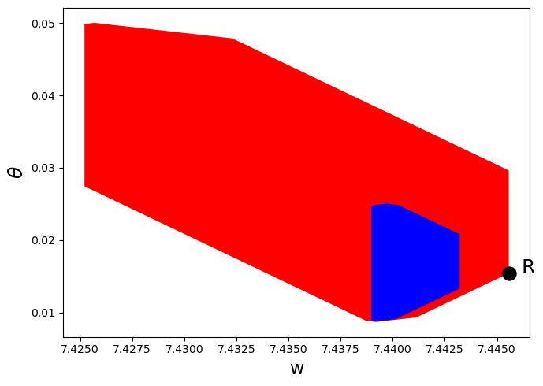
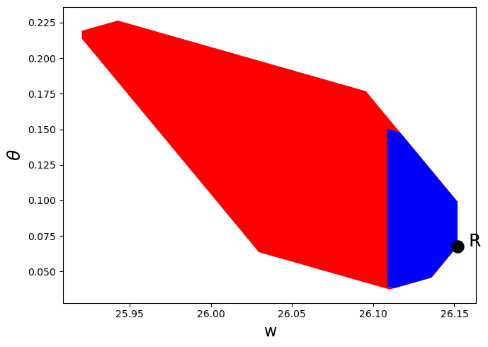

<!DOCTYPE html>


<html lang="en" >

  <head>
    <meta charset="utf-8" />
    <meta name="viewport" content="width=device-width, initial-scale=1.0" /><meta name="generator" content="Docutils 0.17.1: http://docutils.sourceforge.net/" />

    <title>47. Credible Government Policies in a Model of Chang &#8212; Advanced Quantitative Economics with Python</title>
    <script src="https://unpkg.com/@popperjs/core@2.9.2/dist/umd/popper.min.js"></script>
    <script src="https://unpkg.com/tippy.js@6.3.1/dist/tippy-bundle.umd.js"></script>
    <script src="https://cdn.jsdelivr.net/npm/feather-icons/dist/feather.min.js"></script>
    
        <script>
            MathJax = {
            loader: {load: ['[tex]/boldsymbol', '[tex]/textmacros']},
            tex: {
                packages: {'[+]': ['boldsymbol', 'textmacros']},
                inlineMath: [['$', '$'], ['\\(', '\\)']],
                processEscapes: true,
                macros: {
                    "argmax" : "arg\\,max",
                    "argmin" : "arg\\,min",
                    "col"    : "col",
                    "Span"   :  "span",
                    "epsilon": "\\varepsilon",
                    "EE": "\\mathbb{E}",
                    "PP": "\\mathbb{P}",
                    "RR": "\\mathbb{R}",
                    "NN": "\\mathbb{N}",
                    "ZZ": "\\mathbb{Z}",
                    "aA": "\\mathcal{A}",
                    "bB": "\\mathcal{B}",
                    "cC": "\\mathcal{C}",
                    "dD": "\\mathcal{D}",
                    "eE": "\\mathcal{E}",
                    "fF": "\\mathcal{F}",
                    "gG": "\\mathcal{G}",
                    "hH": "\\mathcal{H}",
                }
            },
            svg: {
                fontCache: 'global',
                scale: 0.92,
                displayAlign: "center",
            },
            };
        </script>
    
    
  
  
  
  <script data-cfasync="false">
    document.documentElement.dataset.mode = localStorage.getItem("mode") || "";
    document.documentElement.dataset.theme = localStorage.getItem("theme") || "light";
  </script>
  
  <!-- Loaded before other Sphinx assets -->
  <link href="_static/styles/theme.css?digest=365ca57ee442770a23c6" rel="stylesheet" />
<link href="_static/styles/bootstrap.css?digest=365ca57ee442770a23c6" rel="stylesheet" />
<link href="_static/styles/pydata-sphinx-theme.css?digest=365ca57ee442770a23c6" rel="stylesheet" />

  
  <link href="_static/vendor/fontawesome/6.1.2/css/all.min.css?digest=365ca57ee442770a23c6" rel="stylesheet" />
  <link rel="preload" as="font" type="font/woff2" crossorigin href="_static/vendor/fontawesome/6.1.2/webfonts/fa-solid-900.woff2" />
<link rel="preload" as="font" type="font/woff2" crossorigin href="_static/vendor/fontawesome/6.1.2/webfonts/fa-brands-400.woff2" />
<link rel="preload" as="font" type="font/woff2" crossorigin href="_static/vendor/fontawesome/6.1.2/webfonts/fa-regular-400.woff2" />

    <link rel="stylesheet" type="text/css" href="_static/pygments.css" />
    <link rel="stylesheet" href="_static/styles/quantecon-book-theme.css?digest=cb2d6eee9712fbd5cbf7cbc2d6baf81f7f9a9912" type="text/css" />
    <link rel="stylesheet" type="text/css" href="_static/togglebutton.css" />
    <link rel="stylesheet" type="text/css" href="_static/copybutton.css" />
    <link rel="stylesheet" type="text/css" href="_static/mystnb.4510f1fc1dee50b3e5859aac5469c37c29e427902b24a333a5f9fcb2f0b3ac41.css" />
    <link rel="stylesheet" type="text/css" href="_static/sphinx-thebe.css" />
    <link rel="stylesheet" type="text/css" href="_static/exercise.css" />
    <link rel="stylesheet" type="text/css" href="_static/design-style.4045f2051d55cab465a707391d5b2007.min.css" />
  
  <!-- Pre-loaded scripts that we'll load fully later -->
  <link rel="preload" as="script" href="_static/scripts/bootstrap.js?digest=365ca57ee442770a23c6" />
<link rel="preload" as="script" href="_static/scripts/pydata-sphinx-theme.js?digest=365ca57ee442770a23c6" />
  <script src="_static/vendor/fontawesome/6.1.2/js/all.min.js?digest=365ca57ee442770a23c6"></script>


    <script data-url_root="./" id="documentation_options" src="_static/documentation_options.js"></script>
    <script src="_static/jquery.js"></script>
    <script src="_static/underscore.js"></script>
    <script src="_static/_sphinx_javascript_frameworks_compat.js"></script>
    <script src="_static/doctools.js"></script>
    <script src="_static/clipboard.min.js"></script>
    <script src="_static/copybutton.js"></script>
    <script src="_static/scripts/sphinx-book-theme.js?digest=5a5c038af52cf7bc1a1ec88eea08e6366ee68824"></script>
    <script>let toggleHintShow = 'Click to show';</script>
    <script>let toggleHintHide = 'Click to hide';</script>
    <script>let toggleOpenOnPrint = 'true';</script>
    <script src="_static/togglebutton.js"></script>
    <script src="_static/scripts/quantecon-book-theme.js?digest=b7d60282c7125f74e59bac03c2323864e0e32e1c"></script>
    <script>var togglebuttonSelector = '.toggle, .admonition.dropdown';</script>
    <script src="_static/design-tabs.js"></script>
    <script async="async" src="https://www.googletagmanager.com/gtag/js?id=G-KZLV7PM9LL"></script>
    <script>
                window.dataLayer = window.dataLayer || [];
                function gtag(){ dataLayer.push(arguments); }
                gtag('js', new Date());
                gtag('config', 'G-KZLV7PM9LL');
            </script>
    <script>const THEBE_JS_URL = "https://unpkg.com/thebe@0.8.2/lib/index.js"
const thebe_selector = ".thebe,.cell"
const thebe_selector_input = "pre"
const thebe_selector_output = ".output, .cell_output"
</script>
    <script async="async" src="_static/sphinx-thebe.js"></script>
    <script>window.MathJax = {"tex": {"macros": {"argmax": "arg\\,max", "argmin": "arg\\,min", "col": "col", "Span": "span", "epsilon": "\\varepsilon", "EE": "\\mathbb{E}", "PP": "\\mathbb{P}", "RR": "\\mathbb{R}", "NN": "\\mathbb{N}", "ZZ": "\\mathbb{Z}", "aA": "\\mathcal{A}", "bB": "\\mathcal{B}", "cC": "\\mathcal{C}", "dD": "\\mathcal{D}", "eE": "\\mathcal{E}", "fF": "\\mathcal{F}", "gG": "\\mathcal{G}", "hH": "\\mathcal{H}"}}, "options": {"processHtmlClass": "tex2jax_process|mathjax_process|math|output_area"}}</script>
    <script defer="defer" src="https://cdn.jsdelivr.net/npm/mathjax@3/es5/tex-mml-chtml.js"></script>
    <script>DOCUMENTATION_OPTIONS.pagename = 'chang_credible';</script>
    <link rel="canonical" href="https://python-advanced.quantecon.org/chang_credible.html" />
    <link rel="shortcut icon" href="_static/lectures-favicon.ico"/>
    <link rel="index" title="Index" href="genindex.html" />
    <link rel="search" title="Search" href="search.html" />
    <link rel="next" title="48. Troubleshooting" href="troubleshooting.html" />
    <link rel="prev" title="46. Competitive Equilibria of a Model of Chang" href="chang_ramsey.html" />

<!-- Normal Meta Tags -->
<meta name="author" context="Thomas J. Sargent &amp; John Stachurski" />
<meta name="keywords" content="Python, QuantEcon, Quantitative Economics, Economics, Sloan, Alfred P. Sloan Foundation, Tom J. Sargent, John Stachurski" />
<meta name="description" content=This website presents a set of lectures on advanced quantitative economic modeling, designed and written by Thomas J. Sargent and John Stachurski. />

<!-- Twitter tags -->
<meta name="twitter:card" content="summary" />
<meta name="twitter:site" content="@quantecon" />
<meta name="twitter:title" content="Credible Government Policies in a Model of Chang"/>
<meta name="twitter:description" content="This website presents a set of lectures on advanced quantitative economic modeling, designed and written by Thomas J. Sargent and John Stachurski.">
<meta name="twitter:creator" content="@quantecon">
<meta name="twitter:image" content="https://assets.quantecon.org/img/qe-twitter-logo.png">

<!-- Opengraph tags -->
<meta property="og:title" content="Credible Government Policies in a Model of Chang" />
<meta property="og:type" content="website" />
<meta property="og:url" content="https://python-advanced.quantecon.org/chang_credible.html" />
<meta property="og:image" content="https://assets.quantecon.org/img/qe-og-logo.png" />
<meta property="og:description" content="This website presents a set of lectures on advanced quantitative economic modeling, designed and written by Thomas J. Sargent and John Stachurski." />
<meta property="og:site_name" content="Advanced Quantitative Economics with Python" />
<meta name="theme-color" content="#ffffff" />

  </head>
<body>


    <span id="top"></span>

    <div class="qe-wrapper">

        <div class="qe-main">

            <div class="qe-page" id=chang_credible>

                <div class="qe-page__toc">

                    <div class="inner">

                        
                        <div class="qe-page__toc-header">
                            On this page
                        </div>


                        <nav id="bd-toc-nav" class="qe-page__toc-nav">
                            <ul class="visible nav section-nav flex-column">
<li class="toc-h2 nav-item toc-entry"><a class="reference internal nav-link" href="#overview">47.1. Overview</a></li>
<li class="toc-h2 nav-item toc-entry"><a class="reference internal nav-link" href="#the-setting">47.2. The Setting</a><ul class="nav section-nav flex-column">
<li class="toc-h3 nav-item toc-entry"><a class="reference internal nav-link" href="#the-households-problem">47.2.1. The Household’s Problem</a></li>
<li class="toc-h3 nav-item toc-entry"><a class="reference internal nav-link" href="#government">47.2.2. Government</a></li>
<li class="toc-h3 nav-item toc-entry"><a class="reference internal nav-link" href="#within-period-timing-protocol">47.2.3. Within-period Timing Protocol</a></li>
<li class="toc-h3 nav-item toc-entry"><a class="reference internal nav-link" href="#households-problem">47.2.4. Household’s Problem</a></li>
<li class="toc-h3 nav-item toc-entry"><a class="reference internal nav-link" href="#competitive-equilibrium">47.2.5. Competitive Equilibrium</a></li>
<li class="toc-h3 nav-item toc-entry"><a class="reference internal nav-link" href="#a-credible-government-policy">47.2.6. A Credible Government Policy</a></li>
<li class="toc-h3 nav-item toc-entry"><a class="reference internal nav-link" href="#sustainable-plans">47.2.7. Sustainable Plans</a></li>
</ul>
</li>
<li class="toc-h2 nav-item toc-entry"><a class="reference internal nav-link" href="#calculating-the-set-of-sustainable-promise-value-pairs">47.3. Calculating the Set of Sustainable Promise-Value Pairs</a><ul class="nav section-nav flex-column">
<li class="toc-h3 nav-item toc-entry"><a class="reference internal nav-link" href="#comparison-of-sets">47.3.1. Comparison of Sets</a></li>
</ul>
</li>
</ul>
                            <p class="logo">
                                
                                    
                                    <a href=https://quantecon.org></a>
                                    
                                
                            </p>

                            <p class="powered">Powered by <a href="https://jupyterbook.org/">Jupyter Book</a></p>

                        </nav>

                        <div class="qe-page__toc-footer">
                            
                            
                            <p><a href="#top"><strong>Back to top</strong></a></p>
                        </div>

                    </div>

                </div>

                <div class="qe-page__header">

                    <div class="qe-page__header-copy">

                        <p class="qe-page__header-heading"><a href="intro.html">Advanced Quantitative Economics with Python</a></p>

                        <p class="qe-page__header-subheading">Credible Government Policies in a Model of Chang</p>

                    </div>

                    <p class="qe-page__header-authors">Thomas J. Sargent & John Stachurski</p>

                </div> <!-- .page__header -->


                
                <main class="qe-page__content" role="main">
                    
                    <div>
                        
  <div id="qe-notebook-header" align="right" style="text-align:right;">
        <a href="https://quantecon.org/" title="quantecon.org">
                
        </a>
</div><section class="tex2jax_ignore mathjax_ignore" id="credible-government-policies-in-a-model-of-chang">
<h1><a class="toc-backref" href="#id7"><span class="section-number">47. </span>Credible Government Policies in a Model of Chang</a><a class="headerlink" href="#credible-government-policies-in-a-model-of-chang" title="Permalink to this heading">#</a></h1>
<div class="contents topic" id="contents">
<p class="topic-title">Contents</p>
<ul class="simple">
<li><p><a class="reference internal" href="#credible-government-policies-in-a-model-of-chang" id="id7">Credible Government Policies in a Model of Chang</a></p>
<ul>
<li><p><a class="reference internal" href="#overview" id="id8">Overview</a></p></li>
<li><p><a class="reference internal" href="#the-setting" id="id9">The Setting</a></p></li>
<li><p><a class="reference internal" href="#calculating-the-set-of-sustainable-promise-value-pairs" id="id10">Calculating the Set of Sustainable Promise-Value Pairs</a></p></li>
</ul>
</li>
</ul>
</div>
<p>In addition to what’s in Anaconda, this lecture will need the following libraries:</p>
<div class="cell tag_hide-output docutils container">
<div class="cell_input above-output-prompt docutils container">
<div class="highlight-ipython3 notranslate"><div class="highlight"><pre><span></span><span class="o">!</span>pip<span class="w"> </span>install<span class="w"> </span>polytope<span class="w"> </span>quantecon
</pre></div>
</div>
</div>
<details class="hide below-input">
<summary aria-label="Toggle hidden content">
<span class="collapsed">Show code cell output</span>
<span class="expanded">Hide code cell output</span>
</summary>
<div class="cell_output docutils container">
<div class="output stream highlight-myst-ansi notranslate"><div class="highlight"><pre><span></span>Collecting polytope
</pre></div>
</div>
<div class="output stream highlight-myst-ansi notranslate"><div class="highlight"><pre><span></span>  Downloading polytope-0.2.4.tar.gz (54 kB)
?25l     ━━━━━━━━━━━━━━━━━━━━━━━━━━━━━━━━━━━━━━━━ <span class=" -Color -Color-Green">0.0/54.6 kB</span> <span class=" -Color -Color-Red">?</span> eta <span class=" -Color -Color-Cyan">-:--:--</span>
     ━━━━━━━━━━━━━━━━━━━━━━━━━━━━━━━━━━━━━━━━ <span class=" -Color -Color-Green">54.6/54.6 kB</span> <span class=" -Color -Color-Red">4.0 MB/s</span> eta <span class=" -Color -Color-Cyan">0:00:00</span>
?25h
</pre></div>
</div>
<div class="output stream highlight-myst-ansi notranslate"><div class="highlight"><pre><span></span>  Preparing metadata (setup.py) ... ?25l-
</pre></div>
</div>
<div class="output stream highlight-myst-ansi notranslate"><div class="highlight"><pre><span></span> done
?25hRequirement already satisfied: quantecon in /usr/share/miniconda3/envs/quantecon/lib/python3.11/site-packages (0.7.1)
Requirement already satisfied: networkx&gt;=3.0 in /usr/share/miniconda3/envs/quantecon/lib/python3.11/site-packages (from polytope) (3.1)
Requirement already satisfied: numpy&gt;=1.24.1 in /usr/share/miniconda3/envs/quantecon/lib/python3.11/site-packages (from polytope) (1.24.3)
</pre></div>
</div>
<div class="output stream highlight-myst-ansi notranslate"><div class="highlight"><pre><span></span>Requirement already satisfied: scipy&gt;=1.10.0 in /usr/share/miniconda3/envs/quantecon/lib/python3.11/site-packages (from polytope) (1.11.1)
Requirement already satisfied: numba&gt;=0.49.0 in /usr/share/miniconda3/envs/quantecon/lib/python3.11/site-packages (from quantecon) (0.57.1)
Requirement already satisfied: requests in /usr/share/miniconda3/envs/quantecon/lib/python3.11/site-packages (from quantecon) (2.31.0)
Requirement already satisfied: sympy in /usr/share/miniconda3/envs/quantecon/lib/python3.11/site-packages (from quantecon) (1.11.1)
Requirement already satisfied: llvmlite&lt;0.41,&gt;=0.40.0dev0 in /usr/share/miniconda3/envs/quantecon/lib/python3.11/site-packages (from numba&gt;=0.49.0-&gt;quantecon) (0.40.0)
Requirement already satisfied: charset-normalizer&lt;4,&gt;=2 in /usr/share/miniconda3/envs/quantecon/lib/python3.11/site-packages (from requests-&gt;quantecon) (2.0.4)
Requirement already satisfied: idna&lt;4,&gt;=2.5 in /usr/share/miniconda3/envs/quantecon/lib/python3.11/site-packages (from requests-&gt;quantecon) (3.4)
</pre></div>
</div>
<div class="output stream highlight-myst-ansi notranslate"><div class="highlight"><pre><span></span>Requirement already satisfied: urllib3&lt;3,&gt;=1.21.1 in /usr/share/miniconda3/envs/quantecon/lib/python3.11/site-packages (from requests-&gt;quantecon) (1.26.16)
Requirement already satisfied: certifi&gt;=2017.4.17 in /usr/share/miniconda3/envs/quantecon/lib/python3.11/site-packages (from requests-&gt;quantecon) (2023.7.22)
Requirement already satisfied: mpmath&gt;=0.19 in /usr/share/miniconda3/envs/quantecon/lib/python3.11/site-packages (from sympy-&gt;quantecon) (1.3.0)
Building wheels for collected packages: polytope
</pre></div>
</div>
<div class="output stream highlight-myst-ansi notranslate"><div class="highlight"><pre><span></span>  Building wheel for polytope (setup.py) ... ?25l-
</pre></div>
</div>
<div class="output stream highlight-myst-ansi notranslate"><div class="highlight"><pre><span></span> \
</pre></div>
</div>
<div class="output stream highlight-myst-ansi notranslate"><div class="highlight"><pre><span></span> done
?25h  Created wheel for polytope: filename=polytope-0.2.4-py3-none-any.whl size=47680 sha256=f98103e64718b0d0f615809d342fdc693a4c09c9237d1dfd78be9383732f5ac3
  Stored in directory: /home/runner/.cache/pip/wheels/76/4c/b4/e6949dbfefb7c9c439e4bbdbe6aa82607498f94149f7e5ac90
Successfully built polytope
</pre></div>
</div>
<div class="output stream highlight-myst-ansi notranslate"><div class="highlight"><pre><span></span>Installing collected packages: polytope
</pre></div>
</div>
<div class="output stream highlight-myst-ansi notranslate"><div class="highlight"><pre><span></span>Successfully installed polytope-0.2.4
</pre></div>
</div>
</div>
</details>
</div>
<section id="overview">
<h2><a class="toc-backref" href="#id8"><span class="section-number">47.1. </span>Overview</a><a class="headerlink" href="#overview" title="Permalink to this heading">#</a></h2>
<p>Some of the material in this lecture and <a class="reference internal" href="chang_ramsey.html"><span class="doc">competitive equilibria in the Chang model</span></a>
can be viewed as more sophisticated and complete treatments of the topics discussed in
<a class="reference internal" href="calvo.html"><span class="doc">Ramsey plans, time inconsistency, sustainable plans</span></a>.</p>
<p>This lecture assumes almost  the same economic environment analyzed in
<a class="reference internal" href="chang_ramsey.html"><span class="doc">competitive equilibria in the Chang model</span></a>.</p>
<p>The only change  –  and it is a substantial one – is the timing protocol for making government decisions.</p>
<p>In  <a class="reference internal" href="chang_ramsey.html"><span class="doc">competitive equilibria in the Chang model</span></a>, a <em>Ramsey planner</em>
chose a comprehensive government policy once-and-for-all at time <span class="math notranslate nohighlight">\(0\)</span>.</p>
<p>Now in this lecture, there is no time <span class="math notranslate nohighlight">\(0\)</span> Ramsey planner.</p>
<p>Instead there is a sequence of government decision-makers, one for each <span class="math notranslate nohighlight">\(t\)</span>.</p>
<p>The time <span class="math notranslate nohighlight">\(t\)</span> government decision-maker choose time <span class="math notranslate nohighlight">\(t\)</span> government
actions after forecasting what future governments will do.</p>
<p>We use the notion of a <em>sustainable plan</em> proposed in <span id="id1">[<a class="reference internal" href="zreferences.html#id216" title="Varadarajan V Chari and Patrick J Kehoe. Sustainable plans. Journal of Political Economy, pages 783–802, 1990.">CK90</a>]</span>,
also referred to as a <em>credible public policy</em> in <span id="id2">[<a class="reference internal" href="zreferences.html#id223" title="Nancy L Stokey. Reputation and time consistency. The American Economic Review, pages 134–139, 1989.">Sto89</a>]</span>.</p>
<p>Technically, this lecture starts where lecture
<a class="reference internal" href="chang_ramsey.html"><span class="doc">competitive equilibria in the Chang model</span></a> on Ramsey plans
within the Chang <span id="id3">[<a class="reference internal" href="zreferences.html#id215" title="Roberto Chang. Credible monetary policy in an infinite horizon model: recursive approaches. Journal of Economic Theory, 81(2):431–461, 1998.">Cha98</a>]</span> model stopped.</p>
<p>That lecture presents recursive representations of  <em>competitive equilibria</em> and a <em>Ramsey plan</em> for a
version of a model of Calvo <span id="id4">[<a class="reference internal" href="zreferences.html#id139" title="Guillermo A. Calvo. On the time consistency of optimal policy in a monetary economy. Econometrica, 46(6):1411-1428, 1978.">Cal78</a>]</span> that Chang used to analyze and illustrate these concepts.</p>
<p>We used two operators to characterize competitive equilibria and a Ramsey plan,
respectively.</p>
<p>In this lecture, we define a <em>credible public policy</em> or <em>sustainable plan</em>.</p>
<p>Starting from a large enough initial set <span class="math notranslate nohighlight">\(Z_0\)</span>, we use iterations on
Chang’s set-to-set  operator <span class="math notranslate nohighlight">\(\tilde D(Z)\)</span> to
compute a set of values associated with sustainable plans.</p>
<p>Chang’s operator <span class="math notranslate nohighlight">\(\tilde D(Z)\)</span> is closely connected with the operator
<span class="math notranslate nohighlight">\(D(Z)\)</span> introduced in lecture <a class="reference internal" href="chang_ramsey.html"><span class="doc">competitive equilibria in the Chang model</span></a>.</p>
<ul class="simple">
<li><p><span class="math notranslate nohighlight">\(\tilde D(Z)\)</span> incorporates all of the restrictions imposed in
constructing the operator <span class="math notranslate nohighlight">\(D(Z)\)</span>, but <span class="math notranslate nohighlight">\(\ldots\)</span>.</p></li>
<li><p>It adds some additional restrictions</p>
<ul>
<li><p>these additional restrictions incorporate the idea that a plan must be <em>sustainable</em>.</p></li>
<li><p><em>sustainable</em> means that the government wants to implement it at all times after all histories.</p></li>
</ul>
</li>
</ul>
<p>Let’s start with some standard imports:</p>
<div class="cell docutils container">
<div class="cell_input docutils container">
<div class="highlight-ipython3 notranslate"><div class="highlight"><pre><span></span><span class="kn">import</span> <span class="nn">numpy</span> <span class="k">as</span> <span class="nn">np</span>
<span class="kn">import</span> <span class="nn">quantecon</span> <span class="k">as</span> <span class="nn">qe</span>
<span class="kn">import</span> <span class="nn">polytope</span>
<span class="kn">import</span> <span class="nn">matplotlib.pyplot</span> <span class="k">as</span> <span class="nn">plt</span>
<span class="o">%</span><span class="k">matplotlib</span> inline
</pre></div>
</div>
</div>
<div class="cell_output docutils container">
<div class="output stderr highlight-myst-ansi notranslate"><div class="highlight"><pre><span></span>`polytope` failed to import `cvxopt.glpk`.
</pre></div>
</div>
<div class="output stderr highlight-myst-ansi notranslate"><div class="highlight"><pre><span></span>will use `scipy.optimize.linprog`
</pre></div>
</div>
</div>
</div>
</section>
<section id="the-setting">
<h2><a class="toc-backref" href="#id9"><span class="section-number">47.2. </span>The Setting</a><a class="headerlink" href="#the-setting" title="Permalink to this heading">#</a></h2>
<p>We begin by reviewing the set up deployed in  <a class="reference internal" href="chang_ramsey.html"><span class="doc">competitive equilibria in the Chang model</span></a>.</p>
<p>Chang’s  model, adopted from Calvo, is designed to focus on the intertemporal trade-offs between
the welfare benefits of deflation and the welfare costs associated with
the high tax collections required to retire money at a rate that
delivers deflation.</p>
<p>A benevolent time <span class="math notranslate nohighlight">\(0\)</span> government can promote
utility generating increases in real balances only by imposing an
infinite sequence of sufficiently large distorting tax collections.</p>
<p>To promote the welfare increasing effects of high real balances, the
government wants to induce  <em>gradual deflation</em>.</p>
<p>We start by reviewing notation.</p>
<p>For a sequence of scalars
<span class="math notranslate nohighlight">\(\vec z \equiv \{z_t\}_{t=0}^\infty\)</span>, let
<span class="math notranslate nohighlight">\(\vec z^t = (z_0,  \ldots , z_t)\)</span>,
<span class="math notranslate nohighlight">\(\vec z_t = (z_t, z_{t+1}, \ldots )\)</span>.</p>
<p>An infinitely lived
representative agent and an infinitely lived government exist at dates
<span class="math notranslate nohighlight">\(t = 0, 1, \ldots\)</span>.</p>
<p>The objects in play are</p>
<ul class="simple">
<li><p>an initial quantity <span class="math notranslate nohighlight">\(M_{-1}\)</span> of nominal money holdings</p></li>
<li><p>a sequence of inverse money growth rates <span class="math notranslate nohighlight">\(\vec h\)</span> and an associated sequence of nominal money holdings <span class="math notranslate nohighlight">\(\vec M\)</span></p></li>
<li><p>a sequence of values of money <span class="math notranslate nohighlight">\(\vec q\)</span></p></li>
<li><p>a sequence of real money holdings <span class="math notranslate nohighlight">\(\vec m\)</span></p></li>
<li><p>a sequence of total tax collections <span class="math notranslate nohighlight">\(\vec x\)</span></p></li>
<li><p>a sequence of per capita rates of consumption <span class="math notranslate nohighlight">\(\vec c\)</span></p></li>
<li><p>a sequence of per capita incomes <span class="math notranslate nohighlight">\(\vec y\)</span></p></li>
</ul>
<p>A benevolent government chooses sequences
<span class="math notranslate nohighlight">\((\vec M, \vec h, \vec x)\)</span> subject to a sequence of budget
constraints and other constraints imposed by competitive equilibrium.</p>
<p>Given tax collection and price of money sequences, a representative household chooses
sequences <span class="math notranslate nohighlight">\((\vec c, \vec m)\)</span> of consumption and real balances.</p>
<p>In competitive equilibrium, the price of money sequence <span class="math notranslate nohighlight">\(\vec q\)</span> clears
markets, thereby reconciling  decisions of the government and the
representative household.</p>
<section id="the-households-problem">
<h3><span class="section-number">47.2.1. </span>The Household’s Problem<a class="headerlink" href="#the-households-problem" title="Permalink to this heading">#</a></h3>
<p>A representative household faces a nonnegative value of money sequence
<span class="math notranslate nohighlight">\(\vec q\)</span> and sequences <span class="math notranslate nohighlight">\(\vec y, \vec x\)</span> of income and total
tax collections, respectively.</p>
<p>The household chooses nonnegative
sequences <span class="math notranslate nohighlight">\(\vec c, \vec M\)</span> of consumption and nominal balances,
respectively, to maximize</p>
<div class="math notranslate nohighlight" id="equation-eqn-chang1">
<span class="eqno">(47.1)<a class="headerlink" href="#equation-eqn-chang1" title="Permalink to this equation">#</a></span>\[\sum_{t=0}^\infty \beta^t \left[ u(c_t) + v(q_t M_t ) \right]\]</div>
<p>subject to</p>
<div class="math notranslate nohighlight" id="equation-eqn-chang2">
<span class="eqno">(47.2)<a class="headerlink" href="#equation-eqn-chang2" title="Permalink to this equation">#</a></span>\[q_t M_t  \leq y_t + q_t M_{t-1} - c_t - x_t\]</div>
<p>and</p>
<div class="math notranslate nohighlight" id="equation-eqn-chang3">
<span class="eqno">(47.3)<a class="headerlink" href="#equation-eqn-chang3" title="Permalink to this equation">#</a></span>\[q_t M_t  \leq \bar m\]</div>
<p>Here <span class="math notranslate nohighlight">\(q_t\)</span> is the reciprocal of the price level at <span class="math notranslate nohighlight">\(t\)</span>,
also known as the <em>value of money</em>.</p>
<p>Chang <span id="id5">[<a class="reference internal" href="zreferences.html#id215" title="Roberto Chang. Credible monetary policy in an infinite horizon model: recursive approaches. Journal of Economic Theory, 81(2):431–461, 1998.">Cha98</a>]</span> assumes that</p>
<ul class="simple">
<li><p><span class="math notranslate nohighlight">\(u: \mathbb{R}_+ \rightarrow \mathbb{R}\)</span> is twice continuously differentiable, strictly concave, and strictly increasing;</p></li>
<li><p><span class="math notranslate nohighlight">\(v: \mathbb{R}_+ \rightarrow \mathbb{R}\)</span> is twice continuously differentiable and strictly concave;</p></li>
<li><p><span class="math notranslate nohighlight">\(u'(c)_{c \rightarrow 0}  = \lim_{m \rightarrow 0} v'(m) = +\infty\)</span>;</p></li>
<li><p>there is a finite level <span class="math notranslate nohighlight">\(m= m^f\)</span> such that <span class="math notranslate nohighlight">\(v'(m^f) =0\)</span></p></li>
</ul>
<p>Real balances carried out of a period equal <span class="math notranslate nohighlight">\(m_t = q_t M_t\)</span>.</p>
<p>Inequality <a class="reference internal" href="#equation-eqn-chang2">(47.2)</a> is the household’s time <span class="math notranslate nohighlight">\(t\)</span> budget constraint.</p>
<p>It tells how real balances <span class="math notranslate nohighlight">\(q_t M_t\)</span> carried out of period <span class="math notranslate nohighlight">\(t\)</span> depend
on income, consumption, taxes, and real balances <span class="math notranslate nohighlight">\(q_t M_{t-1}\)</span>
carried into the period.</p>
<p>Equation <a class="reference internal" href="#equation-eqn-chang3">(47.3)</a> imposes an exogenous upper bound
<span class="math notranslate nohighlight">\(\bar m\)</span> on the choice of real balances, where
<span class="math notranslate nohighlight">\(\bar m \geq m^f\)</span>.</p>
</section>
<section id="government">
<h3><span class="section-number">47.2.2. </span>Government<a class="headerlink" href="#government" title="Permalink to this heading">#</a></h3>
<p>The government chooses a sequence of inverse money growth rates with
time <span class="math notranslate nohighlight">\(t\)</span> component
<span class="math notranslate nohighlight">\(h_t \equiv {M_{t-1}\over M_t} \in \Pi \equiv
[ \underline \pi, \overline \pi]\)</span>, where
<span class="math notranslate nohighlight">\(0 &lt; \underline \pi &lt; 1 &lt; { 1 \over \beta } \leq \overline \pi\)</span>.</p>
<p>The government faces a sequence of budget constraints with time
<span class="math notranslate nohighlight">\(t\)</span> component</p>
<div class="math notranslate nohighlight">
\[
-x_t = q_t (M_t - M_{t-1})
\]</div>
<p>which, by using the definitions of <span class="math notranslate nohighlight">\(m_t\)</span> and <span class="math notranslate nohighlight">\(h_t\)</span>, can also
be expressed as</p>
<div class="math notranslate nohighlight" id="equation-eqn-chang2a">
<span class="eqno">(47.4)<a class="headerlink" href="#equation-eqn-chang2a" title="Permalink to this equation">#</a></span>\[-x_t = m_t (1-h_t)\]</div>
<p>The  restrictions <span class="math notranslate nohighlight">\(m_t \in [0, \bar m]\)</span> and <span class="math notranslate nohighlight">\(h_t \in \Pi\)</span> evidently
imply that <span class="math notranslate nohighlight">\(x_t \in X \equiv [(\underline  \pi -1)\bar m, (\overline \pi -1) \bar m]\)</span>.</p>
<p>We define the set <span class="math notranslate nohighlight">\(E \equiv [0,\bar m] \times \Pi \times X\)</span>, so that we
require that <span class="math notranslate nohighlight">\((m, h, x) \in E\)</span>.</p>
<p>To represent the idea that taxes are distorting, Chang makes the following
assumption about outcomes for per capita output:</p>
<div class="math notranslate nohighlight" id="equation-eqn-chang3a">
<span class="eqno">(47.5)<a class="headerlink" href="#equation-eqn-chang3a" title="Permalink to this equation">#</a></span>\[y_t = f(x_t)\]</div>
<p>where <span class="math notranslate nohighlight">\(f: \mathbb{R}\rightarrow \mathbb{R}\)</span> satisfies <span class="math notranslate nohighlight">\(f(x)  &gt; 0\)</span>,
is twice continuously differentiable, <span class="math notranslate nohighlight">\(f''(x) &lt; 0\)</span>, and
<span class="math notranslate nohighlight">\(f(x) = f(-x)\)</span> for all <span class="math notranslate nohighlight">\(x \in
\mathbb{R}\)</span>, so that subsidies and taxes are equally distorting.</p>
<p>The purpose is not to model the causes of tax distortions in any detail but simply to summarize
the <em>outcome</em> of those distortions via the function <span class="math notranslate nohighlight">\(f(x)\)</span>.</p>
<p>A key part of the specification is that tax distortions are increasing in the
absolute value of tax revenues.</p>
<p>The government chooses a competitive equilibrium that
maximizes <a class="reference internal" href="#equation-eqn-chang1">(47.1)</a>.</p>
</section>
<section id="within-period-timing-protocol">
<h3><span class="section-number">47.2.3. </span>Within-period Timing Protocol<a class="headerlink" href="#within-period-timing-protocol" title="Permalink to this heading">#</a></h3>
<p>For the results in this lecture, the <em>timing</em> of actions within a period is
important because of the incentives that it activates.</p>
<p>Chang assumed the following within-period timing of decisions:</p>
<ul class="simple">
<li><p>first, the government chooses <span class="math notranslate nohighlight">\(h_t\)</span> and <span class="math notranslate nohighlight">\(x_t\)</span>;</p></li>
<li><p>then given <span class="math notranslate nohighlight">\(\vec q\)</span> and its expectations about future values of
<span class="math notranslate nohighlight">\(x\)</span> and <span class="math notranslate nohighlight">\(y\)</span>’s, the household chooses <span class="math notranslate nohighlight">\(M_t\)</span> and therefore
<span class="math notranslate nohighlight">\(m_t\)</span> because <span class="math notranslate nohighlight">\(m_t = q_t M_t\)</span>;</p></li>
<li><p>then output <span class="math notranslate nohighlight">\(y_t = f(x_t)\)</span> is realized;</p></li>
<li><p>finally <span class="math notranslate nohighlight">\(c_t = y_t\)</span></p></li>
</ul>
<p>This within-period timing confronts the government with
choices framed by how the private sector wants to respond when the
government takes time <span class="math notranslate nohighlight">\(t\)</span> actions that differ from what the
private sector had expected.</p>
<p>This timing will shape the incentives confronting the government at each
history that are to be incorporated in the construction of the <span class="math notranslate nohighlight">\(\tilde D\)</span>
operator below.</p>
</section>
<section id="households-problem">
<h3><span class="section-number">47.2.4. </span>Household’s Problem<a class="headerlink" href="#households-problem" title="Permalink to this heading">#</a></h3>
<p>Given <span class="math notranslate nohighlight">\(M_{-1}\)</span> and <span class="math notranslate nohighlight">\(\{q_t\}_{t=0}^\infty\)</span>, the household’s problem is</p>
<div class="math notranslate nohighlight">
\[\begin{split}
\begin{aligned}
\mathcal{L} &amp; = \max_{\vec c, \vec M}
\min_{\vec \lambda, \vec \mu} \sum_{t=0}^\infty \beta^t
\bigl\{ u(c_t) + v(M_t q_t) +
\lambda_t [ y_t - c_t - x_t + q_t M_{t-1} - q_t M_t ]  \\
&amp; \quad \quad \quad  + \mu_t [\bar m - q_t  M_t] \bigr\}
\end{aligned}
\end{split}\]</div>
<p>First-order conditions with respect to <span class="math notranslate nohighlight">\(c_t\)</span> and <span class="math notranslate nohighlight">\(M_t\)</span>, respectively, are</p>
<div class="math notranslate nohighlight">
\[\begin{split}
\begin{aligned}
u'(c_t) &amp; = \lambda_t \\
q_t [ u'(c_t) - v'(M_t q_t) ] &amp; \leq \beta u'(c_{t+1})
q_{t+1} , \quad = \ {\rm if} \ M_t q_t &lt; \bar m
\end{aligned}
\end{split}\]</div>
<p>Using <span class="math notranslate nohighlight">\(h_t = {M_{t-1}\over M_t}\)</span> and <span class="math notranslate nohighlight">\(q_t = {m_t \over M_t}\)</span> in
these first-order conditions and rearranging implies</p>
<div class="math notranslate nohighlight" id="equation-eqn-chang4">
<span class="eqno">(47.6)<a class="headerlink" href="#equation-eqn-chang4" title="Permalink to this equation">#</a></span>\[m_t [u'(c_t) - v'(m_t) ] \leq \beta u'(f(x_{t+1})) m_{t+1} h_{t+1},
\quad = \text{ if } m_t &lt; \bar m\]</div>
<p>Define the following key variable</p>
<div class="math notranslate nohighlight" id="equation-eqn-chang5">
<span class="eqno">(47.7)<a class="headerlink" href="#equation-eqn-chang5" title="Permalink to this equation">#</a></span>\[\theta_{t+1} \equiv u'(f(x_{t+1})) m_{t+1} h_{t+1}\]</div>
<p>This is real money balances at time <span class="math notranslate nohighlight">\(t+1\)</span> measured in units of marginal
utility, which Chang refers to as ‘the marginal utility of real balances’.</p>
<p>From the standpoint of the household at time <span class="math notranslate nohighlight">\(t\)</span>, equation <a class="reference internal" href="#equation-eqn-chang5">(47.7)</a>
shows that <span class="math notranslate nohighlight">\(\theta_{t+1}\)</span> intermediates the influences of
<span class="math notranslate nohighlight">\((\vec x_{t+1}, \vec m_{t+1})\)</span> on the household’s choice of real
balances <span class="math notranslate nohighlight">\(m_t\)</span>.</p>
<p>By “intermediates” we mean that the future paths
<span class="math notranslate nohighlight">\((\vec x_{t+1}, \vec m_{t+1})\)</span> influence <span class="math notranslate nohighlight">\(m_t\)</span> entirely through
their effects on the scalar <span class="math notranslate nohighlight">\(\theta_{t+1}\)</span>.</p>
<p>The observation that the one dimensional promised marginal utility of real
balances <span class="math notranslate nohighlight">\(\theta_{t+1}\)</span> functions in this way is an important step
in constructing a class of competitive equilibria that have a recursive representation.</p>
<p>A closely related observation pervaded the analysis of Stackelberg plans in
<a class="reference internal" href="dyn_stack.html"><span class="doc">dynamic Stackelberg problems</span></a> and <a class="reference internal" href="calvo.html"><span class="doc">the Calvo model</span></a>.</p>
</section>
<section id="competitive-equilibrium">
<h3><span class="section-number">47.2.5. </span>Competitive Equilibrium<a class="headerlink" href="#competitive-equilibrium" title="Permalink to this heading">#</a></h3>
<p><strong>Definition:</strong></p>
<ul class="simple">
<li><p>A <em>government policy</em> is a pair of sequences <span class="math notranslate nohighlight">\((\vec h,\vec x)\)</span> where <span class="math notranslate nohighlight">\(h_t \in \Pi  \ \forall t \geq 0\)</span>.</p></li>
<li><p>A <em>price system</em> is a non-negative value of money sequence <span class="math notranslate nohighlight">\(\vec q\)</span>.</p></li>
<li><p>An <em>allocation</em> is a  triple of non-negative sequences <span class="math notranslate nohighlight">\((\vec c, \vec m, \vec y)\)</span>.</p></li>
</ul>
<p>It is required that time <span class="math notranslate nohighlight">\(t\)</span> components <span class="math notranslate nohighlight">\((m_t, x_t, h_t) \in E\)</span>.</p>
<p><strong>Definition:</strong></p>
<p>Given <span class="math notranslate nohighlight">\(M_{-1}\)</span>, a government policy <span class="math notranslate nohighlight">\((\vec h, \vec x)\)</span>, price system <span class="math notranslate nohighlight">\(\vec q\)</span>, and allocation
<span class="math notranslate nohighlight">\((\vec c, \vec m, \vec y)\)</span> are said to be a <em>competitive equilibrium</em> if</p>
<ul class="simple">
<li><p><span class="math notranslate nohighlight">\(m_t = q_t M_t\)</span> and <span class="math notranslate nohighlight">\(y_t = f(x_t)\)</span>.</p></li>
<li><p>The government budget constraint is satisfied.</p></li>
<li><p>Given <span class="math notranslate nohighlight">\(\vec q, \vec x, \vec y\)</span>, <span class="math notranslate nohighlight">\((\vec c, \vec m)\)</span> solves the household’s problem.</p></li>
</ul>
</section>
<section id="a-credible-government-policy">
<h3><span class="section-number">47.2.6. </span>A Credible Government Policy<a class="headerlink" href="#a-credible-government-policy" title="Permalink to this heading">#</a></h3>
<p>Chang works with</p>
<p><strong>A credible government policy with a recursive representation</strong></p>
<ul>
<li><p>Here there is no time <span class="math notranslate nohighlight">\(0\)</span> Ramsey planner.</p></li>
<li><p>Instead there is a sequence of governments, one for each <span class="math notranslate nohighlight">\(t\)</span>, that
choose time <span class="math notranslate nohighlight">\(t\)</span> government actions after forecasting what future governments will do.</p></li>
<li><p>Let <span class="math notranslate nohighlight">\(w=\sum_{t=0}^\infty \beta^t \left[ u(c_t) + v(q_t M_t ) \right]\)</span>
be a value associated with a particular competitive equilibrium.</p></li>
<li><p>A recursive representation of a credible government policy is a pair of
initial conditions <span class="math notranslate nohighlight">\((w_0, \theta_0)\)</span> and a five-tuple of functions</p>
<div class="math notranslate nohighlight">
\[
  h(w_t, \theta_t), m(h_t, w_t, \theta_t), x(h_t, w_t, \theta_t), \chi(h_t, w_t, \theta_t),\Psi(h_t, w_t, \theta_t)
  \]</div>
<p>mapping <span class="math notranslate nohighlight">\(w_t,\theta_t\)</span> and in some cases <span class="math notranslate nohighlight">\(h_t\)</span> into
<span class="math notranslate nohighlight">\(\hat h_t, m_t, x_t, w_{t+1}\)</span>, and <span class="math notranslate nohighlight">\(\theta_{t+1}\)</span>, respectively.</p>
</li>
<li><p>Starting from an initial condition <span class="math notranslate nohighlight">\((w_0, \theta_0)\)</span>, a credible
government policy can be constructed by iterating on these functions in
the following order that respects the within-period timing:</p>
<div class="math notranslate nohighlight" id="equation-chang501">
<span class="eqno">(47.8)<a class="headerlink" href="#equation-chang501" title="Permalink to this equation">#</a></span>\[\begin{split}\begin{aligned}
\hat h_t &amp; = h(w_t,\theta_t) \\
m_t &amp; = m(h_t, w_t,\theta_t) \\
x_t &amp; = x(h_t, w_t,\theta_t) \\
w_{t+1} &amp; = \chi(h_t, w_t,\theta_t)  \\
\theta_{t+1}  &amp; = \Psi(h_t, w_t,\theta_t)
\end{aligned}\end{split}\]</div>
</li>
<li><p>Here it is to be understood that <span class="math notranslate nohighlight">\(\hat h_t\)</span> is the action that the
government policy instructs the government to take, while <span class="math notranslate nohighlight">\(h_t\)</span>
possibly not equal to <span class="math notranslate nohighlight">\(\hat h_t\)</span> is some other action that the
government is free to take at time <span class="math notranslate nohighlight">\(t\)</span>.</p></li>
</ul>
<p>The plan is <em>credible</em> if it is in the time <span class="math notranslate nohighlight">\(t\)</span> government’s interest to
execute it.</p>
<p>Credibility requires that the plan be such that for all possible choices of
<span class="math notranslate nohighlight">\(h_t\)</span> that are consistent with competitive equilibria,</p>
<div class="math notranslate nohighlight">
\[\begin{split}
\begin{split} &amp; u(f(x(\hat h_t, w_t,\theta_t))) + v(m(\hat h_t, w_t,\theta_t))  + \beta \chi(\hat h_t, w_t,\theta_t) \\
&amp;  \geq
u(f(x( h_t, w_t,\theta_t))) + v(m(h_t, w_t,\theta_t)) + \beta \chi(h_t, w_t,\theta_t) \end{split}
\end{split}\]</div>
<p>so that at each instance and circumstance of choice, a government attains a
weakly higher lifetime utility with continuation value
<span class="math notranslate nohighlight">\(w_{t+1}=\Psi(h_t, w_t,\theta_t)\)</span> by adhering to the plan and
confirming the associated time <span class="math notranslate nohighlight">\(t\)</span> action <span class="math notranslate nohighlight">\(\hat h_t\)</span> that
the public had expected earlier.</p>
<p>Please note the subtle change in arguments of the functions used to represent
a competitive equilibrium and a Ramsey plan, on the one hand, and a credible
government plan, on the other hand.</p>
<p>The extra arguments appearing in the functions used to represent a credible plan
come from allowing the government to contemplate disappointing the private sector’s
expectation about its time <span class="math notranslate nohighlight">\(t\)</span> choice <span class="math notranslate nohighlight">\(\hat h_t\)</span>.</p>
<p>A credible plan induces the government to confirm the private sector’s expectation.</p>
<p>The recursive representation of the plan uses the evolution of continuation
values to deter the government from wanting to disappoint the private sector’s
expectations.</p>
<p>Technically, a Ramsey plan and a credible plan  both incorporate history dependence.</p>
<p>For a Ramsey plan, this is encoded in the dynamics of the state variable
<span class="math notranslate nohighlight">\(\theta_t\)</span>, a promised marginal utility that the Ramsey plan delivers to
the private sector.</p>
<p>For a credible government plan, we the two-dimensional state vector
<span class="math notranslate nohighlight">\((w_t, \theta_t)\)</span> encodes  history dependence.</p>
</section>
<section id="sustainable-plans">
<h3><span class="section-number">47.2.7. </span>Sustainable Plans<a class="headerlink" href="#sustainable-plans" title="Permalink to this heading">#</a></h3>
<p>A government strategy <span class="math notranslate nohighlight">\(\sigma\)</span> and an allocation rule
<span class="math notranslate nohighlight">\(\alpha\)</span> are said to constitute a <em>sustainable plan</em> (SP) if.</p>
<ol class="arabic simple">
<li><p><span class="math notranslate nohighlight">\(\sigma\)</span> is admissible.</p></li>
<li><p>Given <span class="math notranslate nohighlight">\(\sigma\)</span>, <span class="math notranslate nohighlight">\(\alpha\)</span> is competitive.</p></li>
<li><p>After any history <span class="math notranslate nohighlight">\(\vec h^{t-1}\)</span>, the continuation of <span class="math notranslate nohighlight">\(\sigma\)</span>
is optimal for the government; i.e., the sequence <span class="math notranslate nohighlight">\(\vec h_t\)</span> induced
by <span class="math notranslate nohighlight">\(\sigma\)</span> after <span class="math notranslate nohighlight">\(\vec h^{t-1}\)</span> maximizes over <span class="math notranslate nohighlight">\(CE_\pi\)</span>
given <span class="math notranslate nohighlight">\(\alpha\)</span>.</p></li>
</ol>
<p>Given any history <span class="math notranslate nohighlight">\(\vec h^{t-1}\)</span>, the continuation of a sustainable plan is a
sustainable plan.</p>
<p>Let <span class="math notranslate nohighlight">\(\Theta = \{ (\vec m, \vec x, \vec h) \in CE : \text{there is an SP whose outcome is} (\vec m, \vec x, \vec h) \}\)</span>.</p>
<p>Sustainable outcomes are elements of <span class="math notranslate nohighlight">\(\Theta\)</span>.</p>
<p>Now consider the space</p>
<div class="math notranslate nohighlight">
\[
S = \Bigl\{ (w,\theta) : \text{there is a sustainable outcome }
    (\vec m, \vec x, \vec h) \in \Theta
\]</div>
<p>with value</p>
<div class="math notranslate nohighlight">
\[
w = \sum_{t=0}^\infty \beta^t [u(f(x_t)) + v(m_t)]  \text{ and such that }
     u'(f(x_0)) (m_0 + x_0) = \theta \Bigr\}
\]</div>
<p>The space <span class="math notranslate nohighlight">\(S\)</span> is a compact subset of <span class="math notranslate nohighlight">\(W \times \Omega\)</span>
where <span class="math notranslate nohighlight">\(W = [\underline w, \overline w]\)</span> is the space of values
associated with sustainable plans. Here <span class="math notranslate nohighlight">\(\underline w\)</span> and
<span class="math notranslate nohighlight">\(\overline w\)</span> are finite bounds on the set of values.</p>
<p>Because there is at least one sustainable plan, <span class="math notranslate nohighlight">\(S\)</span> is nonempty.</p>
<p>Now recall the within-period timing protocol, which we can depict
<span class="math notranslate nohighlight">\((h,x) \rightarrow m=q M \rightarrow y = c\)</span>.</p>
<p>With this timing protocol in mind, the time <span class="math notranslate nohighlight">\(0\)</span> component of an SP has the
following components:</p>
<ol class="arabic simple">
<li><p>A period <span class="math notranslate nohighlight">\(0\)</span> action <span class="math notranslate nohighlight">\(\hat h \in \Pi\)</span> that the public
expects the government to take, together with subsequent within-period
consequences <span class="math notranslate nohighlight">\(m(\hat h), x(\hat h)\)</span> when the government acts as
expected.</p></li>
<li><p>For any first-period action <span class="math notranslate nohighlight">\(h \neq \hat h\)</span> with
<span class="math notranslate nohighlight">\(h \in CE_\pi^0\)</span>, a pair of within-period consequences
<span class="math notranslate nohighlight">\(m(h), x(h)\)</span> when the government does not act as the public had
expected.</p></li>
<li><p>For every <span class="math notranslate nohighlight">\(h \in \Pi\)</span>, a pair
<span class="math notranslate nohighlight">\((w'(h), \theta'(h))\in S\)</span> to carry into next period.</p></li>
</ol>
<p>These components must be such that it is optimal for the government to
choose <span class="math notranslate nohighlight">\(\hat h\)</span> as expected; and for every possible
<span class="math notranslate nohighlight">\(h \in \Pi\)</span>, the government budget constraint and the household’s
Euler equation must hold with continuation <span class="math notranslate nohighlight">\(\theta\)</span> being
<span class="math notranslate nohighlight">\(\theta'(h)\)</span>.</p>
<p>Given the timing protocol within the model, the representative
household’s response to a government deviation to <span class="math notranslate nohighlight">\(h \neq \hat h\)</span>
from a prescribed <span class="math notranslate nohighlight">\(\hat h\)</span> consists of a first-period action
<span class="math notranslate nohighlight">\(m(h)\)</span> and associated subsequent actions, together with future
equilibrium prices, captured by <span class="math notranslate nohighlight">\((w'(h), \theta'(h))\)</span>.</p>
<p>At this point, Chang introduces an idea in the spirit of Abreu, Pearce, and Stacchetti <span id="id6">[<a class="reference internal" href="zreferences.html#id113" title="Dilip Abreu, David Pearce, and Ennio Stacchetti. Toward a theory of discounted repeated games with imperfect monitoring. Econometrica, 58(5):1041-1063, September 1990.">APS90</a>]</span>.</p>
<p>Let <span class="math notranslate nohighlight">\(Z\)</span> be a nonempty subset of <span class="math notranslate nohighlight">\(W \times \Omega\)</span>.</p>
<p>Think of using pairs <span class="math notranslate nohighlight">\((w', \theta')\)</span> drawn from <span class="math notranslate nohighlight">\(Z\)</span> as candidate
continuation value, promised marginal utility pairs.</p>
<p>Define the following operator:</p>
<div class="math notranslate nohighlight" id="equation-chang-operator">
<span class="eqno">(47.9)<a class="headerlink" href="#equation-chang-operator" title="Permalink to this equation">#</a></span>\[\begin{split}\begin{aligned}
\tilde D(Z) = \Bigl\{
(w,\theta): \text{there is } \hat h \in CE_\pi^0 \text{ and for each } h \in CE_\pi^0 \\
\text{ a four-tuple } (m(h), x(h), w'(h), \theta'(h)) \in [0,\bar m] \times X \times Z
\end{aligned}\end{split}\]</div>
<p>such that</p>
<div class="math notranslate nohighlight" id="equation-eqn-chang12">
<span class="eqno">(47.10)<a class="headerlink" href="#equation-eqn-chang12" title="Permalink to this equation">#</a></span>\[w = u(f(x(\hat h)))+ v(m(\hat h)) + \beta w'(\hat h)\]</div>
<div class="math notranslate nohighlight" id="equation-eqn-chang13">
<span class="eqno">(47.11)<a class="headerlink" href="#equation-eqn-chang13" title="Permalink to this equation">#</a></span>\[\theta = u'(f(x(\hat h))) ( m(\hat h) + x(\hat h))\]</div>
<p>and for all <span class="math notranslate nohighlight">\(h \in CE_\pi^0\)</span></p>
<div class="math notranslate nohighlight" id="equation-eqn-chang14">
<span class="eqno">(47.12)<a class="headerlink" href="#equation-eqn-chang14" title="Permalink to this equation">#</a></span>\[w \geq u(f(x(h))) + v(m(h)) + \beta w'(h)\]</div>
<div class="math notranslate nohighlight" id="equation-eqn-chang-15">
<span class="eqno">(47.13)<a class="headerlink" href="#equation-eqn-chang-15" title="Permalink to this equation">#</a></span>\[x(h) = m(h) (h-1)\]</div>
<p>and</p>
<div class="math notranslate nohighlight" id="equation-eqn-chang16">
<span class="eqno">(47.14)<a class="headerlink" href="#equation-eqn-chang16" title="Permalink to this equation">#</a></span>\[m(h) (u'(f(x(h))) - v'(m(h))) \leq \beta \theta'(h)\]</div>
<div class="math notranslate nohighlight">
\[
\quad \quad \ \text{ with equality if } m(h) &lt; \bar m  \Bigr\}
\]</div>
<p>This operator adds the key incentive constraint to the conditions that
had defined the earlier <span class="math notranslate nohighlight">\(D(Z)\)</span> operator defined in  <a class="reference internal" href="chang_ramsey.html"><span class="doc">competitive equilibria in the Chang model</span></a>.</p>
<p>Condition <a class="reference internal" href="#equation-eqn-chang14">(47.12)</a> requires that the plan deter the government from wanting to
take one-shot deviations when candidate continuation values are drawn
from <span class="math notranslate nohighlight">\(Z\)</span>.</p>
<p><strong>Proposition:</strong></p>
<ol class="arabic simple">
<li><p>If <span class="math notranslate nohighlight">\(Z \subset \tilde D(Z)\)</span>, then <span class="math notranslate nohighlight">\(\tilde D(Z) \subset S\)</span> (‘self-generation’).</p></li>
<li><p><span class="math notranslate nohighlight">\(S = \tilde D(S)\)</span> (‘factorization’).</p></li>
</ol>
<p><strong>Proposition:</strong>.</p>
<ol class="arabic simple">
<li><p>Monotonicity of <span class="math notranslate nohighlight">\(\tilde D\)</span>: <span class="math notranslate nohighlight">\(Z \subset Z'\)</span> implies <span class="math notranslate nohighlight">\(\tilde D(Z) \subset \tilde D(Z')\)</span>.</p></li>
<li><p><span class="math notranslate nohighlight">\(Z\)</span> compact implies that <span class="math notranslate nohighlight">\(\tilde D(Z)\)</span> is compact.</p></li>
</ol>
<p>Chang establishes that <span class="math notranslate nohighlight">\(S\)</span> is compact and that therefore there
exists a highest value SP and a lowest value SP.</p>
<p>Further, the preceding structure allows Chang to compute <span class="math notranslate nohighlight">\(S\)</span> by iterating to convergence
on <span class="math notranslate nohighlight">\(\tilde D\)</span> provided that one begins with a sufficiently large
initial set <span class="math notranslate nohighlight">\(Z_0\)</span>.</p>
<p>This structure delivers the following recursive representation of a
sustainable outcome:</p>
<ol class="arabic">
<li><p>choose an initial <span class="math notranslate nohighlight">\((w_0, \theta_0) \in S\)</span>;</p></li>
<li><p>generate a sustainable outcome recursively by iterating on <a class="reference internal" href="#equation-chang501">(47.8)</a>, which we repeat here for convenience:</p>
<div class="math notranslate nohighlight">
\[\begin{split}
   \begin{aligned}
   \hat h_t &amp; = h(w_t,\theta_t) \\
   m_t &amp; = m(h_t, w_t,\theta_t) \\
   x_t &amp; = x(h_t, w_t,\theta_t) \\
   w_{t+1} &amp; = \chi(h_t, w_t,\theta_t)  \\
   \theta_{t+1}  &amp; = \Psi(h_t, w_t,\theta_t)
   \end{aligned}
   \end{split}\]</div>
</li>
</ol>
</section>
</section>
<section id="calculating-the-set-of-sustainable-promise-value-pairs">
<h2><a class="toc-backref" href="#id10"><span class="section-number">47.3. </span>Calculating the Set of Sustainable Promise-Value Pairs</a><a class="headerlink" href="#calculating-the-set-of-sustainable-promise-value-pairs" title="Permalink to this heading">#</a></h2>
<p>Above we defined the <span class="math notranslate nohighlight">\(\tilde D(Z)\)</span> operator as <a class="reference internal" href="#equation-chang-operator">(47.9)</a>.</p>
<p>Chang (1998) provides a method for dealing with the final three
constraints.</p>
<p>These incentive constraints ensure that the government wants to choose
<span class="math notranslate nohighlight">\(\hat h\)</span> as the private sector had expected it to.</p>
<p>Chang’s simplification starts from the idea that, when considering
whether or not to confirm the private sector’s expectation, the
government only needs to consider the payoff of the <em>best</em> possible
deviation.</p>
<p>Equally, to provide incentives to the government, we only need to
consider the harshest possible punishment.</p>
<p>Let <span class="math notranslate nohighlight">\(h\)</span> denote some possible deviation. Chang defines:</p>
<div class="math notranslate nohighlight">
\[
P(h;Z) = \min u(f(x)) + v(m) + \beta w'
\]</div>
<p>where the minimization is subject to</p>
<div class="math notranslate nohighlight">
\[
x = m(h-1)
\]</div>
<div class="math notranslate nohighlight">
\[
m(h)(u'(f(x(h))) + v'(m(h))) \leq \beta \theta'(h) \text{ (with equality if } m(h) &lt; \bar m) \}
\]</div>
<div class="math notranslate nohighlight">
\[
(m,x,w',\theta') \in [0,\bar m] \times X \times Z
\]</div>
<p>For a given deviation <span class="math notranslate nohighlight">\(h\)</span>, this problem finds the worst possible
sustainable value.</p>
<p>We then define:</p>
<div class="math notranslate nohighlight">
\[
BR(Z) = \max P(h;Z) \text{ subject to } h \in CE^0_\pi
\]</div>
<p><span class="math notranslate nohighlight">\(BR(Z)\)</span> is the value of the government’s most tempting deviation.</p>
<p>With this in hand, we can define a new operator <span class="math notranslate nohighlight">\(E(Z)\)</span> that is
equivalent to the <span class="math notranslate nohighlight">\(\tilde D(Z)\)</span> operator but simpler to
implement:</p>
<div class="math notranslate nohighlight">
\[
E(Z) = \Bigl\{ (w,\theta): \exists  h \in CE^0_\pi \text{ and } (m(h),x(h),w'(h),\theta'(h)) \in [0,\bar m] \times X \times Z
\]</div>
<p>such that</p>
<div class="math notranslate nohighlight">
\[
w = u(f(x(h))) + v(m(h)) + \beta w'(h)
\]</div>
<div class="math notranslate nohighlight">
\[
\theta = u'(f(x(h)))(m(h) + x(h))
\]</div>
<div class="math notranslate nohighlight">
\[
x(h) = m(h)(h-1)
\]</div>
<div class="math notranslate nohighlight">
\[
m(h)(u'(f(x(h))) - v'(m(h))) \leq \beta \theta'(h) \text{ (with equality if } m(h) &lt; \bar m)
\]</div>
<p>and</p>
<div class="math notranslate nohighlight">
\[
w \geq BR(Z) \Bigr\}
\]</div>
<p>Aside from the final incentive constraint, this is the same as the
operator in  <a class="reference internal" href="chang_ramsey.html"><span class="doc">competitive equilibria in the Chang model</span></a>.</p>
<p>Consequently, to implement this operator we just need to add one step to
our <em>outer hyperplane approximation algorithm</em> :</p>
<ol class="arabic simple">
<li><p>Initialize subgradients, <span class="math notranslate nohighlight">\(H\)</span>, and hyperplane levels,
<span class="math notranslate nohighlight">\(C_0\)</span>.</p></li>
<li><p>Given a set of subgradients, <span class="math notranslate nohighlight">\(H\)</span>, and hyperplane levels,
<span class="math notranslate nohighlight">\(C_t\)</span>, calculate <span class="math notranslate nohighlight">\(BR(S_t)\)</span>.</p></li>
<li><p>Given <span class="math notranslate nohighlight">\(H\)</span>, <span class="math notranslate nohighlight">\(C_t\)</span>, and <span class="math notranslate nohighlight">\(BR(S_t)\)</span>, for each
subgradient <span class="math notranslate nohighlight">\(h_i \in H\)</span>:</p>
<ul class="simple">
<li><p>Solve a linear program (described below) for each action in the
action space.</p></li>
<li><p>Find the maximum and update the corresponding hyperplane level,
<span class="math notranslate nohighlight">\(C_{i,t+1}\)</span>.</p></li>
</ul>
</li>
<li><p>If <span class="math notranslate nohighlight">\(|C_{t+1}-C_t| &gt; \epsilon\)</span>, return to 2.</p></li>
</ol>
<p><strong>Step 1</strong> simply creates a large initial set <span class="math notranslate nohighlight">\(S_0\)</span>.</p>
<p>Given some set <span class="math notranslate nohighlight">\(S_t\)</span>, <strong>Step 2</strong> then constructs the value
<span class="math notranslate nohighlight">\(BR(S_t)\)</span>.</p>
<p>To do this, we solve the following problem for each point in the action
space <span class="math notranslate nohighlight">\((m_j,h_j)\)</span>:</p>
<div class="math notranslate nohighlight">
\[
\min_{[w',\theta']} u(f(x_j)) + v(m_j) + \beta w'
\]</div>
<p>subject to</p>
<div class="math notranslate nohighlight">
\[
H \cdot (w',\theta') \leq C_t
\]</div>
<div class="math notranslate nohighlight">
\[
x_j = m_j(h_j-1)
\]</div>
<div class="math notranslate nohighlight">
\[
m_j(u'(f(x_j)) - v'(m_j)) \leq \beta \theta'\hspace{2mm} (= \text{if } m_j &lt; \bar m)
\]</div>
<p>This gives us a matrix of possible values, corresponding to each point
in the action space.</p>
<p>To find <span class="math notranslate nohighlight">\(BR(Z)\)</span>, we minimize over the <span class="math notranslate nohighlight">\(m\)</span> dimension and
maximize over the <span class="math notranslate nohighlight">\(h\)</span> dimension.</p>
<p><strong>Step 3</strong> then constructs the set <span class="math notranslate nohighlight">\(S_{t+1} = E(S_t)\)</span>. The linear
program in Step 3 is designed to construct a set <span class="math notranslate nohighlight">\(S_{t+1}\)</span> that is
as large as possible while satisfying the constraints of the
<span class="math notranslate nohighlight">\(E(S)\)</span> operator.</p>
<p>To do this, for each subgradient <span class="math notranslate nohighlight">\(h_i\)</span>, and for each point in the
action space <span class="math notranslate nohighlight">\((m_j,h_j)\)</span>, we solve the following problem:</p>
<div class="math notranslate nohighlight">
\[
\max_{[w',\theta']} h_i \cdot (w,\theta)
\]</div>
<p>subject to</p>
<div class="math notranslate nohighlight">
\[
H \cdot (w',\theta') \leq C_t
\]</div>
<div class="math notranslate nohighlight">
\[
w = u(f(x_j)) + v(m_j) + \beta w'
\]</div>
<div class="math notranslate nohighlight">
\[
\theta = u'(f(x_j))(m_j + x_j)
\]</div>
<div class="math notranslate nohighlight">
\[
x_j = m_j(h_j-1)
\]</div>
<div class="math notranslate nohighlight">
\[
m_j(u'(f(x_j)) - v'(m_j)) \leq \beta \theta'\hspace{2mm} (= \text{if } m_j &lt; \bar m)
\]</div>
<div class="math notranslate nohighlight">
\[
w \geq BR(Z)
\]</div>
<p>This problem maximizes the hyperplane level for a given set of actions.</p>
<p>The second part of Step 3 then finds the maximum possible hyperplane
level across the action space.</p>
<p>The algorithm constructs a sequence of progressively smaller sets <span class="math notranslate nohighlight">\(S_{t+1} \subset S_t \subset S_{t-1} \cdots
\subset S_0\)</span>.</p>
<p><strong>Step 4</strong> ends the algorithm when the difference between these sets is
small enough.</p>
<p>We have created a Python class that solves the model assuming the
following functional forms:</p>
<div class="math notranslate nohighlight">
\[
u(c) = log(c)
\]</div>
<div class="math notranslate nohighlight">
\[
v(m) = \frac{1}{500}(m \bar m - 0.5m^2)^{0.5}
\]</div>
<div class="math notranslate nohighlight">
\[
f(x) = 180 - (0.4x)^2
\]</div>
<p>The remaining parameters <span class="math notranslate nohighlight">\(\{\beta, \bar m, \underline h, \bar h\}\)</span>
are then variables to be specified for an instance of the Chang class.</p>
<p>Below we use the class to solve the model and plot the resulting
equilibrium set, once with <span class="math notranslate nohighlight">\(\beta = 0.3\)</span> and once with
<span class="math notranslate nohighlight">\(\beta = 0.8\)</span>. We also plot the (larger) competitive equilibrium
sets, which we described in  <a class="reference internal" href="chang_ramsey.html"><span class="doc">competitive equilibria in the Chang model</span></a>.</p>
<p>(We have set the number of subgradients to 10 in order to speed up the
code for now. We can increase accuracy by increasing the number of subgradients)</p>
<p>The following code computes sustainable plans</p>
<div class="cell tag_collapse-20 docutils container">
<div class="cell_input docutils container">
<div class="highlight-ipython3 notranslate"><div class="highlight"><pre><span></span><span class="sd">&quot;&quot;&quot;</span>
<span class="sd">Provides a class called ChangModel to solve different</span>
<span class="sd">parameterizations of the Chang (1998) model.</span>
<span class="sd">&quot;&quot;&quot;</span>

<span class="kn">import</span> <span class="nn">numpy</span> <span class="k">as</span> <span class="nn">np</span>
<span class="kn">import</span> <span class="nn">quantecon</span> <span class="k">as</span> <span class="nn">qe</span>
<span class="kn">import</span> <span class="nn">time</span>

<span class="kn">from</span> <span class="nn">scipy.spatial</span> <span class="kn">import</span> <span class="n">ConvexHull</span>
<span class="kn">from</span> <span class="nn">scipy.optimize</span> <span class="kn">import</span> <span class="n">linprog</span><span class="p">,</span> <span class="n">minimize</span><span class="p">,</span> <span class="n">minimize_scalar</span>
<span class="kn">from</span> <span class="nn">scipy.interpolate</span> <span class="kn">import</span> <span class="n">UnivariateSpline</span>
<span class="kn">import</span> <span class="nn">numpy.polynomial.chebyshev</span> <span class="k">as</span> <span class="nn">cheb</span>


<span class="k">class</span> <span class="nc">ChangModel</span><span class="p">:</span>
<span class="w">    </span><span class="sd">&quot;&quot;&quot;</span>
<span class="sd">    Class to solve for the competitive and sustainable sets in the Chang (1998)</span>
<span class="sd">    model, for different parameterizations.</span>
<span class="sd">    &quot;&quot;&quot;</span>

    <span class="k">def</span> <span class="fm">__init__</span><span class="p">(</span><span class="bp">self</span><span class="p">,</span> <span class="n">β</span><span class="p">,</span> <span class="n">mbar</span><span class="p">,</span> <span class="n">h_min</span><span class="p">,</span> <span class="n">h_max</span><span class="p">,</span> <span class="n">n_h</span><span class="p">,</span> <span class="n">n_m</span><span class="p">,</span> <span class="n">N_g</span><span class="p">):</span>
        <span class="c1"># Record parameters</span>
        <span class="bp">self</span><span class="o">.</span><span class="n">β</span><span class="p">,</span> <span class="bp">self</span><span class="o">.</span><span class="n">mbar</span><span class="p">,</span> <span class="bp">self</span><span class="o">.</span><span class="n">h_min</span><span class="p">,</span> <span class="bp">self</span><span class="o">.</span><span class="n">h_max</span> <span class="o">=</span> <span class="n">β</span><span class="p">,</span> <span class="n">mbar</span><span class="p">,</span> <span class="n">h_min</span><span class="p">,</span> <span class="n">h_max</span>
        <span class="bp">self</span><span class="o">.</span><span class="n">n_h</span><span class="p">,</span> <span class="bp">self</span><span class="o">.</span><span class="n">n_m</span><span class="p">,</span> <span class="bp">self</span><span class="o">.</span><span class="n">N_g</span> <span class="o">=</span> <span class="n">n_h</span><span class="p">,</span> <span class="n">n_m</span><span class="p">,</span> <span class="n">N_g</span>

        <span class="c1"># Create other parameters</span>
        <span class="bp">self</span><span class="o">.</span><span class="n">m_min</span> <span class="o">=</span> <span class="mf">1e-9</span>
        <span class="bp">self</span><span class="o">.</span><span class="n">m_max</span> <span class="o">=</span> <span class="bp">self</span><span class="o">.</span><span class="n">mbar</span>
        <span class="bp">self</span><span class="o">.</span><span class="n">N_a</span> <span class="o">=</span> <span class="bp">self</span><span class="o">.</span><span class="n">n_h</span><span class="o">*</span><span class="bp">self</span><span class="o">.</span><span class="n">n_m</span>

        <span class="c1"># Utility and production functions</span>
        <span class="n">uc</span> <span class="o">=</span> <span class="k">lambda</span> <span class="n">c</span><span class="p">:</span> <span class="n">np</span><span class="o">.</span><span class="n">log</span><span class="p">(</span><span class="n">c</span><span class="p">)</span>
        <span class="n">uc_p</span> <span class="o">=</span> <span class="k">lambda</span> <span class="n">c</span><span class="p">:</span> <span class="mi">1</span><span class="o">/</span><span class="n">c</span>
        <span class="n">v</span> <span class="o">=</span> <span class="k">lambda</span> <span class="n">m</span><span class="p">:</span> <span class="mi">1</span><span class="o">/</span><span class="mi">500</span> <span class="o">*</span> <span class="p">(</span><span class="n">mbar</span> <span class="o">*</span> <span class="n">m</span> <span class="o">-</span> <span class="mf">0.5</span> <span class="o">*</span> <span class="n">m</span><span class="o">**</span><span class="mi">2</span><span class="p">)</span><span class="o">**</span><span class="mf">0.5</span>
        <span class="n">v_p</span> <span class="o">=</span> <span class="k">lambda</span> <span class="n">m</span><span class="p">:</span> <span class="mf">0.5</span><span class="o">/</span><span class="mi">500</span> <span class="o">*</span> <span class="p">(</span><span class="n">mbar</span> <span class="o">*</span> <span class="n">m</span> <span class="o">-</span> <span class="mf">0.5</span> <span class="o">*</span> <span class="n">m</span><span class="o">**</span><span class="mi">2</span><span class="p">)</span><span class="o">**</span><span class="p">(</span><span class="o">-</span><span class="mf">0.5</span><span class="p">)</span> <span class="o">*</span> <span class="p">(</span><span class="n">mbar</span> <span class="o">-</span> <span class="n">m</span><span class="p">)</span>
        <span class="n">u</span> <span class="o">=</span> <span class="k">lambda</span> <span class="n">h</span><span class="p">,</span> <span class="n">m</span><span class="p">:</span> <span class="n">uc</span><span class="p">(</span><span class="n">f</span><span class="p">(</span><span class="n">h</span><span class="p">,</span> <span class="n">m</span><span class="p">))</span> <span class="o">+</span> <span class="n">v</span><span class="p">(</span><span class="n">m</span><span class="p">)</span>

        <span class="k">def</span> <span class="nf">f</span><span class="p">(</span><span class="n">h</span><span class="p">,</span> <span class="n">m</span><span class="p">):</span>
            <span class="n">x</span> <span class="o">=</span> <span class="n">m</span> <span class="o">*</span> <span class="p">(</span><span class="n">h</span> <span class="o">-</span> <span class="mi">1</span><span class="p">)</span>
            <span class="n">f</span> <span class="o">=</span> <span class="mi">180</span> <span class="o">-</span> <span class="p">(</span><span class="mf">0.4</span> <span class="o">*</span> <span class="n">x</span><span class="p">)</span><span class="o">**</span><span class="mi">2</span>
            <span class="k">return</span> <span class="n">f</span>

        <span class="k">def</span> <span class="nf">θ</span><span class="p">(</span><span class="n">h</span><span class="p">,</span> <span class="n">m</span><span class="p">):</span>
            <span class="n">x</span> <span class="o">=</span> <span class="n">m</span> <span class="o">*</span> <span class="p">(</span><span class="n">h</span> <span class="o">-</span> <span class="mi">1</span><span class="p">)</span>
            <span class="n">θ</span> <span class="o">=</span> <span class="n">uc_p</span><span class="p">(</span><span class="n">f</span><span class="p">(</span><span class="n">h</span><span class="p">,</span> <span class="n">m</span><span class="p">))</span> <span class="o">*</span> <span class="p">(</span><span class="n">m</span> <span class="o">+</span> <span class="n">x</span><span class="p">)</span>
            <span class="k">return</span> <span class="n">θ</span>

        <span class="c1"># Create set of possible action combinations, A</span>
        <span class="n">A1</span> <span class="o">=</span> <span class="n">np</span><span class="o">.</span><span class="n">linspace</span><span class="p">(</span><span class="n">h_min</span><span class="p">,</span> <span class="n">h_max</span><span class="p">,</span> <span class="n">n_h</span><span class="p">)</span><span class="o">.</span><span class="n">reshape</span><span class="p">(</span><span class="n">n_h</span><span class="p">,</span> <span class="mi">1</span><span class="p">)</span>
        <span class="n">A2</span> <span class="o">=</span> <span class="n">np</span><span class="o">.</span><span class="n">linspace</span><span class="p">(</span><span class="bp">self</span><span class="o">.</span><span class="n">m_min</span><span class="p">,</span> <span class="bp">self</span><span class="o">.</span><span class="n">m_max</span><span class="p">,</span> <span class="n">n_m</span><span class="p">)</span><span class="o">.</span><span class="n">reshape</span><span class="p">(</span><span class="n">n_m</span><span class="p">,</span> <span class="mi">1</span><span class="p">)</span>
        <span class="bp">self</span><span class="o">.</span><span class="n">A</span> <span class="o">=</span> <span class="n">np</span><span class="o">.</span><span class="n">concatenate</span><span class="p">((</span><span class="n">np</span><span class="o">.</span><span class="n">kron</span><span class="p">(</span><span class="n">np</span><span class="o">.</span><span class="n">ones</span><span class="p">((</span><span class="n">n_m</span><span class="p">,</span> <span class="mi">1</span><span class="p">)),</span> <span class="n">A1</span><span class="p">),</span>
                                 <span class="n">np</span><span class="o">.</span><span class="n">kron</span><span class="p">(</span><span class="n">A2</span><span class="p">,</span> <span class="n">np</span><span class="o">.</span><span class="n">ones</span><span class="p">((</span><span class="n">n_h</span><span class="p">,</span> <span class="mi">1</span><span class="p">)))),</span> <span class="n">axis</span><span class="o">=</span><span class="mi">1</span><span class="p">)</span>

        <span class="c1"># Pre-compute utility and output vectors</span>
        <span class="bp">self</span><span class="o">.</span><span class="n">euler_vec</span> <span class="o">=</span> <span class="o">-</span><span class="n">np</span><span class="o">.</span><span class="n">multiply</span><span class="p">(</span><span class="bp">self</span><span class="o">.</span><span class="n">A</span><span class="p">[:,</span> <span class="mi">1</span><span class="p">],</span> \
            <span class="n">uc_p</span><span class="p">(</span><span class="n">f</span><span class="p">(</span><span class="bp">self</span><span class="o">.</span><span class="n">A</span><span class="p">[:,</span> <span class="mi">0</span><span class="p">],</span> <span class="bp">self</span><span class="o">.</span><span class="n">A</span><span class="p">[:,</span> <span class="mi">1</span><span class="p">]))</span> <span class="o">-</span> <span class="n">v_p</span><span class="p">(</span><span class="bp">self</span><span class="o">.</span><span class="n">A</span><span class="p">[:,</span> <span class="mi">1</span><span class="p">]))</span>
        <span class="bp">self</span><span class="o">.</span><span class="n">u_vec</span> <span class="o">=</span> <span class="n">u</span><span class="p">(</span><span class="bp">self</span><span class="o">.</span><span class="n">A</span><span class="p">[:,</span> <span class="mi">0</span><span class="p">],</span> <span class="bp">self</span><span class="o">.</span><span class="n">A</span><span class="p">[:,</span> <span class="mi">1</span><span class="p">])</span>
        <span class="bp">self</span><span class="o">.</span><span class="n">Θ_vec</span> <span class="o">=</span> <span class="n">θ</span><span class="p">(</span><span class="bp">self</span><span class="o">.</span><span class="n">A</span><span class="p">[:,</span> <span class="mi">0</span><span class="p">],</span> <span class="bp">self</span><span class="o">.</span><span class="n">A</span><span class="p">[:,</span> <span class="mi">1</span><span class="p">])</span>
        <span class="bp">self</span><span class="o">.</span><span class="n">f_vec</span> <span class="o">=</span> <span class="n">f</span><span class="p">(</span><span class="bp">self</span><span class="o">.</span><span class="n">A</span><span class="p">[:,</span> <span class="mi">0</span><span class="p">],</span> <span class="bp">self</span><span class="o">.</span><span class="n">A</span><span class="p">[:,</span> <span class="mi">1</span><span class="p">])</span>
        <span class="bp">self</span><span class="o">.</span><span class="n">bell_vec</span> <span class="o">=</span> <span class="n">np</span><span class="o">.</span><span class="n">multiply</span><span class="p">(</span><span class="n">uc_p</span><span class="p">(</span><span class="n">f</span><span class="p">(</span><span class="bp">self</span><span class="o">.</span><span class="n">A</span><span class="p">[:,</span> <span class="mi">0</span><span class="p">],</span>
                                   <span class="bp">self</span><span class="o">.</span><span class="n">A</span><span class="p">[:,</span> <span class="mi">1</span><span class="p">])),</span>
                                   <span class="n">np</span><span class="o">.</span><span class="n">multiply</span><span class="p">(</span><span class="bp">self</span><span class="o">.</span><span class="n">A</span><span class="p">[:,</span> <span class="mi">1</span><span class="p">],</span>
                                   <span class="p">(</span><span class="bp">self</span><span class="o">.</span><span class="n">A</span><span class="p">[:,</span> <span class="mi">0</span><span class="p">]</span> <span class="o">-</span> <span class="mi">1</span><span class="p">)))</span> \
                        <span class="o">+</span> <span class="n">np</span><span class="o">.</span><span class="n">multiply</span><span class="p">(</span><span class="bp">self</span><span class="o">.</span><span class="n">A</span><span class="p">[:,</span> <span class="mi">1</span><span class="p">],</span>
                                      <span class="n">v_p</span><span class="p">(</span><span class="bp">self</span><span class="o">.</span><span class="n">A</span><span class="p">[:,</span> <span class="mi">1</span><span class="p">]))</span>

        <span class="c1"># Find extrema of (w, θ) space for initial guess of equilibrium sets</span>
        <span class="n">p_vec</span> <span class="o">=</span> <span class="n">np</span><span class="o">.</span><span class="n">zeros</span><span class="p">(</span><span class="bp">self</span><span class="o">.</span><span class="n">N_a</span><span class="p">)</span>
        <span class="n">w_vec</span> <span class="o">=</span> <span class="n">np</span><span class="o">.</span><span class="n">zeros</span><span class="p">(</span><span class="bp">self</span><span class="o">.</span><span class="n">N_a</span><span class="p">)</span>
        <span class="k">for</span> <span class="n">i</span> <span class="ow">in</span> <span class="nb">range</span><span class="p">(</span><span class="bp">self</span><span class="o">.</span><span class="n">N_a</span><span class="p">):</span>
            <span class="n">p_vec</span><span class="p">[</span><span class="n">i</span><span class="p">]</span> <span class="o">=</span> <span class="bp">self</span><span class="o">.</span><span class="n">Θ_vec</span><span class="p">[</span><span class="n">i</span><span class="p">]</span>
            <span class="n">w_vec</span><span class="p">[</span><span class="n">i</span><span class="p">]</span> <span class="o">=</span> <span class="bp">self</span><span class="o">.</span><span class="n">u_vec</span><span class="p">[</span><span class="n">i</span><span class="p">]</span><span class="o">/</span><span class="p">(</span><span class="mi">1</span> <span class="o">-</span> <span class="n">β</span><span class="p">)</span>

        <span class="n">w_space</span> <span class="o">=</span> <span class="n">np</span><span class="o">.</span><span class="n">array</span><span class="p">([</span><span class="nb">min</span><span class="p">(</span><span class="n">w_vec</span><span class="p">[</span><span class="o">~</span><span class="n">np</span><span class="o">.</span><span class="n">isinf</span><span class="p">(</span><span class="n">w_vec</span><span class="p">)]),</span>
                            <span class="nb">max</span><span class="p">(</span><span class="n">w_vec</span><span class="p">[</span><span class="o">~</span><span class="n">np</span><span class="o">.</span><span class="n">isinf</span><span class="p">(</span><span class="n">w_vec</span><span class="p">)])])</span>
        <span class="n">p_space</span> <span class="o">=</span> <span class="n">np</span><span class="o">.</span><span class="n">array</span><span class="p">([</span><span class="mi">0</span><span class="p">,</span> <span class="nb">max</span><span class="p">(</span><span class="n">p_vec</span><span class="p">[</span><span class="o">~</span><span class="n">np</span><span class="o">.</span><span class="n">isinf</span><span class="p">(</span><span class="n">w_vec</span><span class="p">)])])</span>
        <span class="bp">self</span><span class="o">.</span><span class="n">p_space</span> <span class="o">=</span> <span class="n">p_space</span>

        <span class="c1"># Set up hyperplane levels and gradients for iterations</span>
        <span class="k">def</span> <span class="nf">SG_H_V</span><span class="p">(</span><span class="n">N</span><span class="p">,</span> <span class="n">w_space</span><span class="p">,</span> <span class="n">p_space</span><span class="p">):</span>
<span class="w">            </span><span class="sd">&quot;&quot;&quot;</span>
<span class="sd">            This function  initializes the subgradients, hyperplane levels,</span>
<span class="sd">            and extreme points of the value set by choosing an appropriate</span>
<span class="sd">            origin and radius. It is based on a similar function in QuantEcon&#39;s</span>
<span class="sd">            Games.jl</span>
<span class="sd">            &quot;&quot;&quot;</span>

            <span class="c1"># First, create a unit circle. Want points placed on [0, 2π]</span>
            <span class="n">inc</span> <span class="o">=</span> <span class="mi">2</span> <span class="o">*</span> <span class="n">np</span><span class="o">.</span><span class="n">pi</span> <span class="o">/</span> <span class="n">N</span>
            <span class="n">degrees</span> <span class="o">=</span> <span class="n">np</span><span class="o">.</span><span class="n">arange</span><span class="p">(</span><span class="mi">0</span><span class="p">,</span> <span class="mi">2</span> <span class="o">*</span> <span class="n">np</span><span class="o">.</span><span class="n">pi</span><span class="p">,</span> <span class="n">inc</span><span class="p">)</span>

            <span class="c1"># Points on circle</span>
            <span class="n">H</span> <span class="o">=</span> <span class="n">np</span><span class="o">.</span><span class="n">zeros</span><span class="p">((</span><span class="n">N</span><span class="p">,</span> <span class="mi">2</span><span class="p">))</span>
            <span class="k">for</span> <span class="n">i</span> <span class="ow">in</span> <span class="nb">range</span><span class="p">(</span><span class="n">N</span><span class="p">):</span>
                <span class="n">x</span> <span class="o">=</span> <span class="n">degrees</span><span class="p">[</span><span class="n">i</span><span class="p">]</span>
                <span class="n">H</span><span class="p">[</span><span class="n">i</span><span class="p">,</span> <span class="mi">0</span><span class="p">]</span> <span class="o">=</span> <span class="n">np</span><span class="o">.</span><span class="n">cos</span><span class="p">(</span><span class="n">x</span><span class="p">)</span>
                <span class="n">H</span><span class="p">[</span><span class="n">i</span><span class="p">,</span> <span class="mi">1</span><span class="p">]</span> <span class="o">=</span> <span class="n">np</span><span class="o">.</span><span class="n">sin</span><span class="p">(</span><span class="n">x</span><span class="p">)</span>

            <span class="c1"># Then calculate origin and radius</span>
            <span class="n">o</span> <span class="o">=</span> <span class="n">np</span><span class="o">.</span><span class="n">array</span><span class="p">([</span><span class="n">np</span><span class="o">.</span><span class="n">mean</span><span class="p">(</span><span class="n">w_space</span><span class="p">),</span> <span class="n">np</span><span class="o">.</span><span class="n">mean</span><span class="p">(</span><span class="n">p_space</span><span class="p">)])</span>
            <span class="n">r1</span> <span class="o">=</span> <span class="nb">max</span><span class="p">((</span><span class="nb">max</span><span class="p">(</span><span class="n">w_space</span><span class="p">)</span> <span class="o">-</span> <span class="n">o</span><span class="p">[</span><span class="mi">0</span><span class="p">])</span><span class="o">**</span><span class="mi">2</span><span class="p">,</span> <span class="p">(</span><span class="n">o</span><span class="p">[</span><span class="mi">0</span><span class="p">]</span> <span class="o">-</span> <span class="nb">min</span><span class="p">(</span><span class="n">w_space</span><span class="p">))</span><span class="o">**</span><span class="mi">2</span><span class="p">)</span>
            <span class="n">r2</span> <span class="o">=</span> <span class="nb">max</span><span class="p">((</span><span class="nb">max</span><span class="p">(</span><span class="n">p_space</span><span class="p">)</span> <span class="o">-</span> <span class="n">o</span><span class="p">[</span><span class="mi">1</span><span class="p">])</span><span class="o">**</span><span class="mi">2</span><span class="p">,</span> <span class="p">(</span><span class="n">o</span><span class="p">[</span><span class="mi">1</span><span class="p">]</span> <span class="o">-</span> <span class="nb">min</span><span class="p">(</span><span class="n">p_space</span><span class="p">))</span><span class="o">**</span><span class="mi">2</span><span class="p">)</span>
            <span class="n">r</span> <span class="o">=</span> <span class="n">np</span><span class="o">.</span><span class="n">sqrt</span><span class="p">(</span><span class="n">r1</span> <span class="o">+</span> <span class="n">r2</span><span class="p">)</span>

            <span class="c1"># Now calculate vertices</span>
            <span class="n">Z</span> <span class="o">=</span> <span class="n">np</span><span class="o">.</span><span class="n">zeros</span><span class="p">((</span><span class="mi">2</span><span class="p">,</span> <span class="n">N</span><span class="p">))</span>
            <span class="k">for</span> <span class="n">i</span> <span class="ow">in</span> <span class="nb">range</span><span class="p">(</span><span class="n">N</span><span class="p">):</span>
                <span class="n">Z</span><span class="p">[</span><span class="mi">0</span><span class="p">,</span> <span class="n">i</span><span class="p">]</span> <span class="o">=</span> <span class="n">o</span><span class="p">[</span><span class="mi">0</span><span class="p">]</span> <span class="o">+</span> <span class="n">r</span><span class="o">*</span><span class="n">H</span><span class="o">.</span><span class="n">T</span><span class="p">[</span><span class="mi">0</span><span class="p">,</span> <span class="n">i</span><span class="p">]</span>
                <span class="n">Z</span><span class="p">[</span><span class="mi">1</span><span class="p">,</span> <span class="n">i</span><span class="p">]</span> <span class="o">=</span> <span class="n">o</span><span class="p">[</span><span class="mi">1</span><span class="p">]</span> <span class="o">+</span> <span class="n">r</span><span class="o">*</span><span class="n">H</span><span class="o">.</span><span class="n">T</span><span class="p">[</span><span class="mi">1</span><span class="p">,</span> <span class="n">i</span><span class="p">]</span>

            <span class="c1"># Corresponding hyperplane levels</span>
            <span class="n">C</span> <span class="o">=</span> <span class="n">np</span><span class="o">.</span><span class="n">zeros</span><span class="p">(</span><span class="n">N</span><span class="p">)</span>
            <span class="k">for</span> <span class="n">i</span> <span class="ow">in</span> <span class="nb">range</span><span class="p">(</span><span class="n">N</span><span class="p">):</span>
                <span class="n">C</span><span class="p">[</span><span class="n">i</span><span class="p">]</span> <span class="o">=</span> <span class="n">np</span><span class="o">.</span><span class="n">dot</span><span class="p">(</span><span class="n">Z</span><span class="p">[:,</span> <span class="n">i</span><span class="p">],</span> <span class="n">H</span><span class="p">[</span><span class="n">i</span><span class="p">,</span> <span class="p">:])</span>

            <span class="k">return</span> <span class="n">C</span><span class="p">,</span> <span class="n">H</span><span class="p">,</span> <span class="n">Z</span>

        <span class="n">C</span><span class="p">,</span> <span class="bp">self</span><span class="o">.</span><span class="n">H</span><span class="p">,</span> <span class="n">Z</span> <span class="o">=</span> <span class="n">SG_H_V</span><span class="p">(</span><span class="n">N_g</span><span class="p">,</span> <span class="n">w_space</span><span class="p">,</span> <span class="n">p_space</span><span class="p">)</span>
        <span class="n">C</span> <span class="o">=</span> <span class="n">C</span><span class="o">.</span><span class="n">reshape</span><span class="p">(</span><span class="n">N_g</span><span class="p">,</span> <span class="mi">1</span><span class="p">)</span>
        <span class="bp">self</span><span class="o">.</span><span class="n">c0_c</span><span class="p">,</span> <span class="bp">self</span><span class="o">.</span><span class="n">c0_s</span><span class="p">,</span> <span class="bp">self</span><span class="o">.</span><span class="n">c1_c</span><span class="p">,</span> <span class="bp">self</span><span class="o">.</span><span class="n">c1_s</span> <span class="o">=</span> <span class="n">np</span><span class="o">.</span><span class="n">copy</span><span class="p">(</span><span class="n">C</span><span class="p">),</span> <span class="n">np</span><span class="o">.</span><span class="n">copy</span><span class="p">(</span><span class="n">C</span><span class="p">),</span> \
            <span class="n">np</span><span class="o">.</span><span class="n">copy</span><span class="p">(</span><span class="n">C</span><span class="p">),</span> <span class="n">np</span><span class="o">.</span><span class="n">copy</span><span class="p">(</span><span class="n">C</span><span class="p">)</span>
        <span class="bp">self</span><span class="o">.</span><span class="n">z0_s</span><span class="p">,</span> <span class="bp">self</span><span class="o">.</span><span class="n">z0_c</span><span class="p">,</span> <span class="bp">self</span><span class="o">.</span><span class="n">z1_s</span><span class="p">,</span> <span class="bp">self</span><span class="o">.</span><span class="n">z1_c</span> <span class="o">=</span> <span class="n">np</span><span class="o">.</span><span class="n">copy</span><span class="p">(</span><span class="n">Z</span><span class="p">),</span> <span class="n">np</span><span class="o">.</span><span class="n">copy</span><span class="p">(</span><span class="n">Z</span><span class="p">),</span> \
            <span class="n">np</span><span class="o">.</span><span class="n">copy</span><span class="p">(</span><span class="n">Z</span><span class="p">),</span> <span class="n">np</span><span class="o">.</span><span class="n">copy</span><span class="p">(</span><span class="n">Z</span><span class="p">)</span>

        <span class="bp">self</span><span class="o">.</span><span class="n">w_bnds_s</span><span class="p">,</span> <span class="bp">self</span><span class="o">.</span><span class="n">w_bnds_c</span> <span class="o">=</span> <span class="p">(</span><span class="n">w_space</span><span class="p">[</span><span class="mi">0</span><span class="p">],</span> <span class="n">w_space</span><span class="p">[</span><span class="mi">1</span><span class="p">]),</span> \
            <span class="p">(</span><span class="n">w_space</span><span class="p">[</span><span class="mi">0</span><span class="p">],</span> <span class="n">w_space</span><span class="p">[</span><span class="mi">1</span><span class="p">])</span>
        <span class="bp">self</span><span class="o">.</span><span class="n">p_bnds_s</span><span class="p">,</span> <span class="bp">self</span><span class="o">.</span><span class="n">p_bnds_c</span> <span class="o">=</span> <span class="p">(</span><span class="n">p_space</span><span class="p">[</span><span class="mi">0</span><span class="p">],</span> <span class="n">p_space</span><span class="p">[</span><span class="mi">1</span><span class="p">]),</span> \
            <span class="p">(</span><span class="n">p_space</span><span class="p">[</span><span class="mi">0</span><span class="p">],</span> <span class="n">p_space</span><span class="p">[</span><span class="mi">1</span><span class="p">])</span>

        <span class="c1"># Create dictionaries to save equilibrium set for each iteration</span>
        <span class="bp">self</span><span class="o">.</span><span class="n">c_dic_s</span><span class="p">,</span> <span class="bp">self</span><span class="o">.</span><span class="n">c_dic_c</span> <span class="o">=</span> <span class="p">{},</span> <span class="p">{}</span>
        <span class="bp">self</span><span class="o">.</span><span class="n">c_dic_s</span><span class="p">[</span><span class="mi">0</span><span class="p">],</span> <span class="bp">self</span><span class="o">.</span><span class="n">c_dic_c</span><span class="p">[</span><span class="mi">0</span><span class="p">]</span> <span class="o">=</span> <span class="bp">self</span><span class="o">.</span><span class="n">c0_s</span><span class="p">,</span> <span class="bp">self</span><span class="o">.</span><span class="n">c0_c</span>

    <span class="k">def</span> <span class="nf">solve_worst_spe</span><span class="p">(</span><span class="bp">self</span><span class="p">):</span>
<span class="w">        </span><span class="sd">&quot;&quot;&quot;</span>
<span class="sd">        Method to solve for BR(Z). See p.449 of Chang (1998)</span>
<span class="sd">        &quot;&quot;&quot;</span>

        <span class="n">p_vec</span> <span class="o">=</span> <span class="n">np</span><span class="o">.</span><span class="n">full</span><span class="p">(</span><span class="bp">self</span><span class="o">.</span><span class="n">N_a</span><span class="p">,</span> <span class="n">np</span><span class="o">.</span><span class="n">nan</span><span class="p">)</span>
        <span class="n">c</span> <span class="o">=</span> <span class="p">[</span><span class="mi">1</span><span class="p">,</span> <span class="mi">0</span><span class="p">]</span>

        <span class="c1"># Pre-compute constraints</span>
        <span class="n">aineq_mbar</span> <span class="o">=</span> <span class="n">np</span><span class="o">.</span><span class="n">vstack</span><span class="p">((</span><span class="bp">self</span><span class="o">.</span><span class="n">H</span><span class="p">,</span> <span class="n">np</span><span class="o">.</span><span class="n">array</span><span class="p">([</span><span class="mi">0</span><span class="p">,</span> <span class="o">-</span><span class="bp">self</span><span class="o">.</span><span class="n">β</span><span class="p">])))</span>
        <span class="n">bineq_mbar</span> <span class="o">=</span> <span class="n">np</span><span class="o">.</span><span class="n">vstack</span><span class="p">((</span><span class="bp">self</span><span class="o">.</span><span class="n">c0_s</span><span class="p">,</span> <span class="mi">0</span><span class="p">))</span>

        <span class="n">aineq</span> <span class="o">=</span> <span class="bp">self</span><span class="o">.</span><span class="n">H</span>
        <span class="n">bineq</span> <span class="o">=</span> <span class="bp">self</span><span class="o">.</span><span class="n">c0_s</span>
        <span class="n">aeq</span> <span class="o">=</span> <span class="p">[[</span><span class="mi">0</span><span class="p">,</span> <span class="o">-</span><span class="bp">self</span><span class="o">.</span><span class="n">β</span><span class="p">]]</span>

        <span class="k">for</span> <span class="n">j</span> <span class="ow">in</span> <span class="nb">range</span><span class="p">(</span><span class="bp">self</span><span class="o">.</span><span class="n">N_a</span><span class="p">):</span>
            <span class="c1"># Only try if consumption is possible</span>
            <span class="k">if</span> <span class="bp">self</span><span class="o">.</span><span class="n">f_vec</span><span class="p">[</span><span class="n">j</span><span class="p">]</span> <span class="o">&gt;</span> <span class="mi">0</span><span class="p">:</span>
                <span class="c1"># If m = mbar, use inequality constraint</span>
                <span class="k">if</span> <span class="bp">self</span><span class="o">.</span><span class="n">A</span><span class="p">[</span><span class="n">j</span><span class="p">,</span> <span class="mi">1</span><span class="p">]</span> <span class="o">==</span> <span class="bp">self</span><span class="o">.</span><span class="n">mbar</span><span class="p">:</span>
                    <span class="n">bineq_mbar</span><span class="p">[</span><span class="o">-</span><span class="mi">1</span><span class="p">]</span> <span class="o">=</span> <span class="bp">self</span><span class="o">.</span><span class="n">euler_vec</span><span class="p">[</span><span class="n">j</span><span class="p">]</span>
                    <span class="n">res</span> <span class="o">=</span> <span class="n">linprog</span><span class="p">(</span><span class="n">c</span><span class="p">,</span> <span class="n">A_ub</span><span class="o">=</span><span class="n">aineq_mbar</span><span class="p">,</span> <span class="n">b_ub</span><span class="o">=</span><span class="n">bineq_mbar</span><span class="p">,</span>
                                  <span class="n">bounds</span><span class="o">=</span><span class="p">(</span><span class="bp">self</span><span class="o">.</span><span class="n">w_bnds_s</span><span class="p">,</span> <span class="bp">self</span><span class="o">.</span><span class="n">p_bnds_s</span><span class="p">))</span>
                <span class="k">else</span><span class="p">:</span>
                    <span class="n">beq</span> <span class="o">=</span> <span class="bp">self</span><span class="o">.</span><span class="n">euler_vec</span><span class="p">[</span><span class="n">j</span><span class="p">]</span>
                    <span class="n">res</span> <span class="o">=</span> <span class="n">linprog</span><span class="p">(</span><span class="n">c</span><span class="p">,</span> <span class="n">A_ub</span><span class="o">=</span><span class="n">aineq</span><span class="p">,</span> <span class="n">b_ub</span><span class="o">=</span><span class="n">bineq</span><span class="p">,</span> <span class="n">A_eq</span><span class="o">=</span><span class="n">aeq</span><span class="p">,</span> <span class="n">b_eq</span><span class="o">=</span><span class="n">beq</span><span class="p">,</span>
                                  <span class="n">bounds</span><span class="o">=</span><span class="p">(</span><span class="bp">self</span><span class="o">.</span><span class="n">w_bnds_s</span><span class="p">,</span> <span class="bp">self</span><span class="o">.</span><span class="n">p_bnds_s</span><span class="p">))</span>
                <span class="k">if</span> <span class="n">res</span><span class="o">.</span><span class="n">status</span> <span class="o">==</span> <span class="mi">0</span><span class="p">:</span>
                    <span class="n">p_vec</span><span class="p">[</span><span class="n">j</span><span class="p">]</span> <span class="o">=</span> <span class="bp">self</span><span class="o">.</span><span class="n">u_vec</span><span class="p">[</span><span class="n">j</span><span class="p">]</span> <span class="o">+</span> <span class="bp">self</span><span class="o">.</span><span class="n">β</span> <span class="o">*</span> <span class="n">res</span><span class="o">.</span><span class="n">x</span><span class="p">[</span><span class="mi">0</span><span class="p">]</span>

        <span class="c1"># Max over h and min over other variables (see Chang (1998) p.449)</span>
        <span class="bp">self</span><span class="o">.</span><span class="n">br_z</span> <span class="o">=</span> <span class="n">np</span><span class="o">.</span><span class="n">nanmax</span><span class="p">(</span><span class="n">np</span><span class="o">.</span><span class="n">nanmin</span><span class="p">(</span><span class="n">p_vec</span><span class="o">.</span><span class="n">reshape</span><span class="p">(</span><span class="bp">self</span><span class="o">.</span><span class="n">n_m</span><span class="p">,</span> <span class="bp">self</span><span class="o">.</span><span class="n">n_h</span><span class="p">),</span> <span class="mi">0</span><span class="p">))</span>

    <span class="k">def</span> <span class="nf">solve_subgradient</span><span class="p">(</span><span class="bp">self</span><span class="p">):</span>
<span class="w">        </span><span class="sd">&quot;&quot;&quot;</span>
<span class="sd">        Method to solve for E(Z). See p.449 of Chang (1998)</span>
<span class="sd">        &quot;&quot;&quot;</span>

        <span class="c1"># Pre-compute constraints</span>
        <span class="n">aineq_C_mbar</span> <span class="o">=</span> <span class="n">np</span><span class="o">.</span><span class="n">vstack</span><span class="p">((</span><span class="bp">self</span><span class="o">.</span><span class="n">H</span><span class="p">,</span> <span class="n">np</span><span class="o">.</span><span class="n">array</span><span class="p">([</span><span class="mi">0</span><span class="p">,</span> <span class="o">-</span><span class="bp">self</span><span class="o">.</span><span class="n">β</span><span class="p">])))</span>
        <span class="n">bineq_C_mbar</span> <span class="o">=</span> <span class="n">np</span><span class="o">.</span><span class="n">vstack</span><span class="p">((</span><span class="bp">self</span><span class="o">.</span><span class="n">c0_c</span><span class="p">,</span> <span class="mi">0</span><span class="p">))</span>

        <span class="n">aineq_C</span> <span class="o">=</span> <span class="bp">self</span><span class="o">.</span><span class="n">H</span>
        <span class="n">bineq_C</span> <span class="o">=</span> <span class="bp">self</span><span class="o">.</span><span class="n">c0_c</span>
        <span class="n">aeq_C</span> <span class="o">=</span> <span class="p">[[</span><span class="mi">0</span><span class="p">,</span> <span class="o">-</span><span class="bp">self</span><span class="o">.</span><span class="n">β</span><span class="p">]]</span>

        <span class="n">aineq_S_mbar</span> <span class="o">=</span> <span class="n">np</span><span class="o">.</span><span class="n">vstack</span><span class="p">((</span><span class="n">np</span><span class="o">.</span><span class="n">vstack</span><span class="p">((</span><span class="bp">self</span><span class="o">.</span><span class="n">H</span><span class="p">,</span> <span class="n">np</span><span class="o">.</span><span class="n">array</span><span class="p">([</span><span class="mi">0</span><span class="p">,</span> <span class="o">-</span><span class="bp">self</span><span class="o">.</span><span class="n">β</span><span class="p">]))),</span>
                                  <span class="n">np</span><span class="o">.</span><span class="n">array</span><span class="p">([</span><span class="o">-</span><span class="bp">self</span><span class="o">.</span><span class="n">β</span><span class="p">,</span> <span class="mi">0</span><span class="p">])))</span>
        <span class="n">bineq_S_mbar</span> <span class="o">=</span> <span class="n">np</span><span class="o">.</span><span class="n">vstack</span><span class="p">((</span><span class="bp">self</span><span class="o">.</span><span class="n">c0_s</span><span class="p">,</span> <span class="n">np</span><span class="o">.</span><span class="n">zeros</span><span class="p">((</span><span class="mi">2</span><span class="p">,</span> <span class="mi">1</span><span class="p">))))</span>

        <span class="n">aineq_S</span> <span class="o">=</span> <span class="n">np</span><span class="o">.</span><span class="n">vstack</span><span class="p">((</span><span class="bp">self</span><span class="o">.</span><span class="n">H</span><span class="p">,</span> <span class="n">np</span><span class="o">.</span><span class="n">array</span><span class="p">([</span><span class="o">-</span><span class="bp">self</span><span class="o">.</span><span class="n">β</span><span class="p">,</span> <span class="mi">0</span><span class="p">])))</span>
        <span class="n">bineq_S</span> <span class="o">=</span> <span class="n">np</span><span class="o">.</span><span class="n">vstack</span><span class="p">((</span><span class="bp">self</span><span class="o">.</span><span class="n">c0_s</span><span class="p">,</span> <span class="mi">0</span><span class="p">))</span>
        <span class="n">aeq_S</span> <span class="o">=</span> <span class="p">[[</span><span class="mi">0</span><span class="p">,</span> <span class="o">-</span><span class="bp">self</span><span class="o">.</span><span class="n">β</span><span class="p">]]</span>

        <span class="c1"># Update maximal hyperplane level</span>
        <span class="k">for</span> <span class="n">i</span> <span class="ow">in</span> <span class="nb">range</span><span class="p">(</span><span class="bp">self</span><span class="o">.</span><span class="n">N_g</span><span class="p">):</span>
            <span class="n">c_a1a2_c</span><span class="p">,</span> <span class="n">t_a1a2_c</span> <span class="o">=</span> <span class="n">np</span><span class="o">.</span><span class="n">full</span><span class="p">(</span><span class="bp">self</span><span class="o">.</span><span class="n">N_a</span><span class="p">,</span> <span class="o">-</span><span class="n">np</span><span class="o">.</span><span class="n">inf</span><span class="p">),</span> \
                <span class="n">np</span><span class="o">.</span><span class="n">zeros</span><span class="p">((</span><span class="bp">self</span><span class="o">.</span><span class="n">N_a</span><span class="p">,</span> <span class="mi">2</span><span class="p">))</span>
            <span class="n">c_a1a2_s</span><span class="p">,</span> <span class="n">t_a1a2_s</span> <span class="o">=</span> <span class="n">np</span><span class="o">.</span><span class="n">full</span><span class="p">(</span><span class="bp">self</span><span class="o">.</span><span class="n">N_a</span><span class="p">,</span> <span class="o">-</span><span class="n">np</span><span class="o">.</span><span class="n">inf</span><span class="p">),</span> \
                <span class="n">np</span><span class="o">.</span><span class="n">zeros</span><span class="p">((</span><span class="bp">self</span><span class="o">.</span><span class="n">N_a</span><span class="p">,</span> <span class="mi">2</span><span class="p">))</span>

            <span class="n">c</span> <span class="o">=</span> <span class="p">[</span><span class="o">-</span><span class="bp">self</span><span class="o">.</span><span class="n">H</span><span class="p">[</span><span class="n">i</span><span class="p">,</span> <span class="mi">0</span><span class="p">],</span> <span class="o">-</span><span class="bp">self</span><span class="o">.</span><span class="n">H</span><span class="p">[</span><span class="n">i</span><span class="p">,</span> <span class="mi">1</span><span class="p">]]</span>

            <span class="k">for</span> <span class="n">j</span> <span class="ow">in</span> <span class="nb">range</span><span class="p">(</span><span class="bp">self</span><span class="o">.</span><span class="n">N_a</span><span class="p">):</span>
                <span class="c1"># Only try if consumption is possible</span>
                <span class="k">if</span> <span class="bp">self</span><span class="o">.</span><span class="n">f_vec</span><span class="p">[</span><span class="n">j</span><span class="p">]</span> <span class="o">&gt;</span> <span class="mi">0</span><span class="p">:</span>

                    <span class="c1"># COMPETITIVE EQUILIBRIA</span>
                    <span class="c1"># If m = mbar, use inequality constraint</span>
                    <span class="k">if</span> <span class="bp">self</span><span class="o">.</span><span class="n">A</span><span class="p">[</span><span class="n">j</span><span class="p">,</span> <span class="mi">1</span><span class="p">]</span> <span class="o">==</span> <span class="bp">self</span><span class="o">.</span><span class="n">mbar</span><span class="p">:</span>
                        <span class="n">bineq_C_mbar</span><span class="p">[</span><span class="o">-</span><span class="mi">1</span><span class="p">]</span> <span class="o">=</span> <span class="bp">self</span><span class="o">.</span><span class="n">euler_vec</span><span class="p">[</span><span class="n">j</span><span class="p">]</span>
                        <span class="n">res</span> <span class="o">=</span> <span class="n">linprog</span><span class="p">(</span><span class="n">c</span><span class="p">,</span> <span class="n">A_ub</span><span class="o">=</span><span class="n">aineq_C_mbar</span><span class="p">,</span> <span class="n">b_ub</span><span class="o">=</span><span class="n">bineq_C_mbar</span><span class="p">,</span>
                                      <span class="n">bounds</span><span class="o">=</span><span class="p">(</span><span class="bp">self</span><span class="o">.</span><span class="n">w_bnds_c</span><span class="p">,</span> <span class="bp">self</span><span class="o">.</span><span class="n">p_bnds_c</span><span class="p">))</span>
                    <span class="c1"># If m &lt; mbar, use equality constraint</span>
                    <span class="k">else</span><span class="p">:</span>
                        <span class="n">beq_C</span> <span class="o">=</span> <span class="bp">self</span><span class="o">.</span><span class="n">euler_vec</span><span class="p">[</span><span class="n">j</span><span class="p">]</span>
                        <span class="n">res</span> <span class="o">=</span> <span class="n">linprog</span><span class="p">(</span><span class="n">c</span><span class="p">,</span> <span class="n">A_ub</span><span class="o">=</span><span class="n">aineq_C</span><span class="p">,</span> <span class="n">b_ub</span><span class="o">=</span><span class="n">bineq_C</span><span class="p">,</span> <span class="n">A_eq</span> <span class="o">=</span> <span class="n">aeq_C</span><span class="p">,</span>
                                      <span class="n">b_eq</span> <span class="o">=</span> <span class="n">beq_C</span><span class="p">,</span> <span class="n">bounds</span><span class="o">=</span><span class="p">(</span><span class="bp">self</span><span class="o">.</span><span class="n">w_bnds_c</span><span class="p">,</span> \
                                          <span class="bp">self</span><span class="o">.</span><span class="n">p_bnds_c</span><span class="p">))</span>
                    <span class="k">if</span> <span class="n">res</span><span class="o">.</span><span class="n">status</span> <span class="o">==</span> <span class="mi">0</span><span class="p">:</span>
                        <span class="n">c_a1a2_c</span><span class="p">[</span><span class="n">j</span><span class="p">]</span> <span class="o">=</span> <span class="bp">self</span><span class="o">.</span><span class="n">H</span><span class="p">[</span><span class="n">i</span><span class="p">,</span> <span class="mi">0</span><span class="p">]</span> <span class="o">*</span> <span class="p">(</span><span class="bp">self</span><span class="o">.</span><span class="n">u_vec</span><span class="p">[</span><span class="n">j</span><span class="p">]</span> \
                            <span class="o">+</span> <span class="bp">self</span><span class="o">.</span><span class="n">β</span> <span class="o">*</span> <span class="n">res</span><span class="o">.</span><span class="n">x</span><span class="p">[</span><span class="mi">0</span><span class="p">])</span> <span class="o">+</span> <span class="bp">self</span><span class="o">.</span><span class="n">H</span><span class="p">[</span><span class="n">i</span><span class="p">,</span> <span class="mi">1</span><span class="p">]</span> <span class="o">*</span> <span class="bp">self</span><span class="o">.</span><span class="n">Θ_vec</span><span class="p">[</span><span class="n">j</span><span class="p">]</span>
                        <span class="n">t_a1a2_c</span><span class="p">[</span><span class="n">j</span><span class="p">]</span> <span class="o">=</span> <span class="n">res</span><span class="o">.</span><span class="n">x</span>

                    <span class="c1"># SUSTAINABLE EQUILIBRIA</span>
                    <span class="c1"># If m = mbar, use inequality constraint</span>
                    <span class="k">if</span> <span class="bp">self</span><span class="o">.</span><span class="n">A</span><span class="p">[</span><span class="n">j</span><span class="p">,</span> <span class="mi">1</span><span class="p">]</span> <span class="o">==</span> <span class="bp">self</span><span class="o">.</span><span class="n">mbar</span><span class="p">:</span>
                        <span class="n">bineq_S_mbar</span><span class="p">[</span><span class="o">-</span><span class="mi">2</span><span class="p">]</span> <span class="o">=</span> <span class="bp">self</span><span class="o">.</span><span class="n">euler_vec</span><span class="p">[</span><span class="n">j</span><span class="p">]</span>
                        <span class="n">bineq_S_mbar</span><span class="p">[</span><span class="o">-</span><span class="mi">1</span><span class="p">]</span> <span class="o">=</span> <span class="bp">self</span><span class="o">.</span><span class="n">u_vec</span><span class="p">[</span><span class="n">j</span><span class="p">]</span> <span class="o">-</span> <span class="bp">self</span><span class="o">.</span><span class="n">br_z</span>
                        <span class="n">res</span> <span class="o">=</span> <span class="n">linprog</span><span class="p">(</span><span class="n">c</span><span class="p">,</span> <span class="n">A_ub</span><span class="o">=</span><span class="n">aineq_S_mbar</span><span class="p">,</span> <span class="n">b_ub</span><span class="o">=</span><span class="n">bineq_S_mbar</span><span class="p">,</span>
                                      <span class="n">bounds</span><span class="o">=</span><span class="p">(</span><span class="bp">self</span><span class="o">.</span><span class="n">w_bnds_s</span><span class="p">,</span> <span class="bp">self</span><span class="o">.</span><span class="n">p_bnds_s</span><span class="p">))</span>
                    <span class="c1"># If m &lt; mbar, use equality constraint</span>
                    <span class="k">else</span><span class="p">:</span>
                        <span class="n">bineq_S</span><span class="p">[</span><span class="o">-</span><span class="mi">1</span><span class="p">]</span> <span class="o">=</span> <span class="bp">self</span><span class="o">.</span><span class="n">u_vec</span><span class="p">[</span><span class="n">j</span><span class="p">]</span> <span class="o">-</span> <span class="bp">self</span><span class="o">.</span><span class="n">br_z</span>
                        <span class="n">beq_S</span> <span class="o">=</span> <span class="bp">self</span><span class="o">.</span><span class="n">euler_vec</span><span class="p">[</span><span class="n">j</span><span class="p">]</span>
                        <span class="n">res</span> <span class="o">=</span> <span class="n">linprog</span><span class="p">(</span><span class="n">c</span><span class="p">,</span> <span class="n">A_ub</span><span class="o">=</span><span class="n">aineq_S</span><span class="p">,</span> <span class="n">b_ub</span><span class="o">=</span><span class="n">bineq_S</span><span class="p">,</span> <span class="n">A_eq</span> <span class="o">=</span> <span class="n">aeq_S</span><span class="p">,</span>
                                      <span class="n">b_eq</span> <span class="o">=</span> <span class="n">beq_S</span><span class="p">,</span> <span class="n">bounds</span><span class="o">=</span><span class="p">(</span><span class="bp">self</span><span class="o">.</span><span class="n">w_bnds_s</span><span class="p">,</span> \
                                          <span class="bp">self</span><span class="o">.</span><span class="n">p_bnds_s</span><span class="p">))</span>
                    <span class="k">if</span> <span class="n">res</span><span class="o">.</span><span class="n">status</span> <span class="o">==</span> <span class="mi">0</span><span class="p">:</span>
                        <span class="n">c_a1a2_s</span><span class="p">[</span><span class="n">j</span><span class="p">]</span> <span class="o">=</span> <span class="bp">self</span><span class="o">.</span><span class="n">H</span><span class="p">[</span><span class="n">i</span><span class="p">,</span> <span class="mi">0</span><span class="p">]</span> <span class="o">*</span> <span class="p">(</span><span class="bp">self</span><span class="o">.</span><span class="n">u_vec</span><span class="p">[</span><span class="n">j</span><span class="p">]</span> \
                            <span class="o">+</span> <span class="bp">self</span><span class="o">.</span><span class="n">β</span><span class="o">*</span><span class="n">res</span><span class="o">.</span><span class="n">x</span><span class="p">[</span><span class="mi">0</span><span class="p">])</span> <span class="o">+</span> <span class="bp">self</span><span class="o">.</span><span class="n">H</span><span class="p">[</span><span class="n">i</span><span class="p">,</span> <span class="mi">1</span><span class="p">]</span> <span class="o">*</span> <span class="bp">self</span><span class="o">.</span><span class="n">Θ_vec</span><span class="p">[</span><span class="n">j</span><span class="p">]</span>
                        <span class="n">t_a1a2_s</span><span class="p">[</span><span class="n">j</span><span class="p">]</span> <span class="o">=</span> <span class="n">res</span><span class="o">.</span><span class="n">x</span>

            <span class="n">idx_c</span> <span class="o">=</span> <span class="n">np</span><span class="o">.</span><span class="n">where</span><span class="p">(</span><span class="n">c_a1a2_c</span> <span class="o">==</span> <span class="nb">max</span><span class="p">(</span><span class="n">c_a1a2_c</span><span class="p">))[</span><span class="mi">0</span><span class="p">][</span><span class="mi">0</span><span class="p">]</span>
            <span class="bp">self</span><span class="o">.</span><span class="n">z1_c</span><span class="p">[:,</span> <span class="n">i</span><span class="p">]</span> <span class="o">=</span> <span class="n">np</span><span class="o">.</span><span class="n">array</span><span class="p">([</span><span class="bp">self</span><span class="o">.</span><span class="n">u_vec</span><span class="p">[</span><span class="n">idx_c</span><span class="p">]</span>
                                        <span class="o">+</span> <span class="bp">self</span><span class="o">.</span><span class="n">β</span> <span class="o">*</span> <span class="n">t_a1a2_c</span><span class="p">[</span><span class="n">idx_c</span><span class="p">,</span> <span class="mi">0</span><span class="p">],</span>
                                        <span class="bp">self</span><span class="o">.</span><span class="n">Θ_vec</span><span class="p">[</span><span class="n">idx_c</span><span class="p">]])</span>

            <span class="n">idx_s</span> <span class="o">=</span> <span class="n">np</span><span class="o">.</span><span class="n">where</span><span class="p">(</span><span class="n">c_a1a2_s</span> <span class="o">==</span> <span class="nb">max</span><span class="p">(</span><span class="n">c_a1a2_s</span><span class="p">))[</span><span class="mi">0</span><span class="p">][</span><span class="mi">0</span><span class="p">]</span>
            <span class="bp">self</span><span class="o">.</span><span class="n">z1_s</span><span class="p">[:,</span> <span class="n">i</span><span class="p">]</span> <span class="o">=</span> <span class="n">np</span><span class="o">.</span><span class="n">array</span><span class="p">([</span><span class="bp">self</span><span class="o">.</span><span class="n">u_vec</span><span class="p">[</span><span class="n">idx_s</span><span class="p">]</span>
                                        <span class="o">+</span> <span class="bp">self</span><span class="o">.</span><span class="n">β</span> <span class="o">*</span> <span class="n">t_a1a2_s</span><span class="p">[</span><span class="n">idx_s</span><span class="p">,</span> <span class="mi">0</span><span class="p">],</span>
                                        <span class="bp">self</span><span class="o">.</span><span class="n">Θ_vec</span><span class="p">[</span><span class="n">idx_s</span><span class="p">]])</span>

        <span class="k">for</span> <span class="n">i</span> <span class="ow">in</span> <span class="nb">range</span><span class="p">(</span><span class="bp">self</span><span class="o">.</span><span class="n">N_g</span><span class="p">):</span>
            <span class="bp">self</span><span class="o">.</span><span class="n">c1_c</span><span class="p">[</span><span class="n">i</span><span class="p">]</span> <span class="o">=</span> <span class="n">np</span><span class="o">.</span><span class="n">dot</span><span class="p">(</span><span class="bp">self</span><span class="o">.</span><span class="n">z1_c</span><span class="p">[:,</span> <span class="n">i</span><span class="p">],</span> <span class="bp">self</span><span class="o">.</span><span class="n">H</span><span class="p">[</span><span class="n">i</span><span class="p">,</span> <span class="p">:])</span>
            <span class="bp">self</span><span class="o">.</span><span class="n">c1_s</span><span class="p">[</span><span class="n">i</span><span class="p">]</span> <span class="o">=</span> <span class="n">np</span><span class="o">.</span><span class="n">dot</span><span class="p">(</span><span class="bp">self</span><span class="o">.</span><span class="n">z1_s</span><span class="p">[:,</span> <span class="n">i</span><span class="p">],</span> <span class="bp">self</span><span class="o">.</span><span class="n">H</span><span class="p">[</span><span class="n">i</span><span class="p">,</span> <span class="p">:])</span>

    <span class="k">def</span> <span class="nf">solve_sustainable</span><span class="p">(</span><span class="bp">self</span><span class="p">,</span> <span class="n">tol</span><span class="o">=</span><span class="mf">1e-5</span><span class="p">,</span> <span class="n">max_iter</span><span class="o">=</span><span class="mi">250</span><span class="p">):</span>
<span class="w">        </span><span class="sd">&quot;&quot;&quot;</span>
<span class="sd">        Method to solve for the competitive and sustainable equilibrium sets.</span>
<span class="sd">        &quot;&quot;&quot;</span>

        <span class="n">t</span> <span class="o">=</span> <span class="n">time</span><span class="o">.</span><span class="n">time</span><span class="p">()</span>
        <span class="n">diff</span> <span class="o">=</span> <span class="n">tol</span> <span class="o">+</span> <span class="mi">1</span>
        <span class="n">iters</span> <span class="o">=</span> <span class="mi">0</span>

        <span class="nb">print</span><span class="p">(</span><span class="s1">&#39;### --------------- ###&#39;</span><span class="p">)</span>
        <span class="nb">print</span><span class="p">(</span><span class="s1">&#39;Solving Chang Model Using Outer Hyperplane Approximation&#39;</span><span class="p">)</span>
        <span class="nb">print</span><span class="p">(</span><span class="s1">&#39;### --------------- ### </span><span class="se">\n</span><span class="s1">&#39;</span><span class="p">)</span>

        <span class="nb">print</span><span class="p">(</span><span class="s1">&#39;Maximum difference when updating hyperplane levels:&#39;</span><span class="p">)</span>

        <span class="k">while</span> <span class="n">diff</span> <span class="o">&gt;</span> <span class="n">tol</span> <span class="ow">and</span> <span class="n">iters</span> <span class="o">&lt;</span> <span class="n">max_iter</span><span class="p">:</span>
            <span class="n">iters</span> <span class="o">=</span> <span class="n">iters</span> <span class="o">+</span> <span class="mi">1</span>
            <span class="bp">self</span><span class="o">.</span><span class="n">solve_worst_spe</span><span class="p">()</span>
            <span class="bp">self</span><span class="o">.</span><span class="n">solve_subgradient</span><span class="p">()</span>
            <span class="n">diff</span> <span class="o">=</span> <span class="nb">max</span><span class="p">(</span><span class="n">np</span><span class="o">.</span><span class="n">maximum</span><span class="p">(</span><span class="nb">abs</span><span class="p">(</span><span class="bp">self</span><span class="o">.</span><span class="n">c0_c</span> <span class="o">-</span> <span class="bp">self</span><span class="o">.</span><span class="n">c1_c</span><span class="p">),</span>
                       <span class="nb">abs</span><span class="p">(</span><span class="bp">self</span><span class="o">.</span><span class="n">c0_s</span> <span class="o">-</span> <span class="bp">self</span><span class="o">.</span><span class="n">c1_s</span><span class="p">)))</span>
            <span class="nb">print</span><span class="p">(</span><span class="n">diff</span><span class="p">)</span>

            <span class="c1"># Update hyperplane levels</span>
            <span class="bp">self</span><span class="o">.</span><span class="n">c0_c</span><span class="p">,</span> <span class="bp">self</span><span class="o">.</span><span class="n">c0_s</span> <span class="o">=</span> <span class="n">np</span><span class="o">.</span><span class="n">copy</span><span class="p">(</span><span class="bp">self</span><span class="o">.</span><span class="n">c1_c</span><span class="p">),</span> <span class="n">np</span><span class="o">.</span><span class="n">copy</span><span class="p">(</span><span class="bp">self</span><span class="o">.</span><span class="n">c1_s</span><span class="p">)</span>

            <span class="c1"># Update bounds for w and θ</span>
            <span class="n">wmin_c</span><span class="p">,</span> <span class="n">wmax_c</span> <span class="o">=</span> <span class="n">np</span><span class="o">.</span><span class="n">min</span><span class="p">(</span><span class="bp">self</span><span class="o">.</span><span class="n">z1_c</span><span class="p">,</span> <span class="n">axis</span><span class="o">=</span><span class="mi">1</span><span class="p">)[</span><span class="mi">0</span><span class="p">],</span> \
                <span class="n">np</span><span class="o">.</span><span class="n">max</span><span class="p">(</span><span class="bp">self</span><span class="o">.</span><span class="n">z1_c</span><span class="p">,</span> <span class="n">axis</span><span class="o">=</span><span class="mi">1</span><span class="p">)[</span><span class="mi">0</span><span class="p">]</span>
            <span class="n">pmin_c</span><span class="p">,</span> <span class="n">pmax_c</span> <span class="o">=</span> <span class="n">np</span><span class="o">.</span><span class="n">min</span><span class="p">(</span><span class="bp">self</span><span class="o">.</span><span class="n">z1_c</span><span class="p">,</span> <span class="n">axis</span><span class="o">=</span><span class="mi">1</span><span class="p">)[</span><span class="mi">1</span><span class="p">],</span> \
                <span class="n">np</span><span class="o">.</span><span class="n">max</span><span class="p">(</span><span class="bp">self</span><span class="o">.</span><span class="n">z1_c</span><span class="p">,</span> <span class="n">axis</span><span class="o">=</span><span class="mi">1</span><span class="p">)[</span><span class="mi">1</span><span class="p">]</span>

            <span class="n">wmin_s</span><span class="p">,</span> <span class="n">wmax_s</span> <span class="o">=</span> <span class="n">np</span><span class="o">.</span><span class="n">min</span><span class="p">(</span><span class="bp">self</span><span class="o">.</span><span class="n">z1_s</span><span class="p">,</span> <span class="n">axis</span><span class="o">=</span><span class="mi">1</span><span class="p">)[</span><span class="mi">0</span><span class="p">],</span> \
                <span class="n">np</span><span class="o">.</span><span class="n">max</span><span class="p">(</span><span class="bp">self</span><span class="o">.</span><span class="n">z1_s</span><span class="p">,</span> <span class="n">axis</span><span class="o">=</span><span class="mi">1</span><span class="p">)[</span><span class="mi">0</span><span class="p">]</span>
            <span class="n">pmin_S</span><span class="p">,</span> <span class="n">pmax_S</span> <span class="o">=</span> <span class="n">np</span><span class="o">.</span><span class="n">min</span><span class="p">(</span><span class="bp">self</span><span class="o">.</span><span class="n">z1_s</span><span class="p">,</span> <span class="n">axis</span><span class="o">=</span><span class="mi">1</span><span class="p">)[</span><span class="mi">1</span><span class="p">],</span> \
                <span class="n">np</span><span class="o">.</span><span class="n">max</span><span class="p">(</span><span class="bp">self</span><span class="o">.</span><span class="n">z1_s</span><span class="p">,</span> <span class="n">axis</span><span class="o">=</span><span class="mi">1</span><span class="p">)[</span><span class="mi">1</span><span class="p">]</span>

            <span class="bp">self</span><span class="o">.</span><span class="n">w_bnds_s</span><span class="p">,</span> <span class="bp">self</span><span class="o">.</span><span class="n">w_bnds_c</span> <span class="o">=</span> <span class="p">(</span><span class="n">wmin_s</span><span class="p">,</span> <span class="n">wmax_s</span><span class="p">),</span> <span class="p">(</span><span class="n">wmin_c</span><span class="p">,</span> <span class="n">wmax_c</span><span class="p">)</span>
            <span class="bp">self</span><span class="o">.</span><span class="n">p_bnds_s</span><span class="p">,</span> <span class="bp">self</span><span class="o">.</span><span class="n">p_bnds_c</span> <span class="o">=</span> <span class="p">(</span><span class="n">pmin_S</span><span class="p">,</span> <span class="n">pmax_S</span><span class="p">),</span> <span class="p">(</span><span class="n">pmin_c</span><span class="p">,</span> <span class="n">pmax_c</span><span class="p">)</span>

            <span class="c1"># Save iteration</span>
            <span class="bp">self</span><span class="o">.</span><span class="n">c_dic_c</span><span class="p">[</span><span class="n">iters</span><span class="p">],</span> <span class="bp">self</span><span class="o">.</span><span class="n">c_dic_s</span><span class="p">[</span><span class="n">iters</span><span class="p">]</span> <span class="o">=</span> <span class="n">np</span><span class="o">.</span><span class="n">copy</span><span class="p">(</span><span class="bp">self</span><span class="o">.</span><span class="n">c1_c</span><span class="p">),</span> \
                <span class="n">np</span><span class="o">.</span><span class="n">copy</span><span class="p">(</span><span class="bp">self</span><span class="o">.</span><span class="n">c1_s</span><span class="p">)</span>
            <span class="bp">self</span><span class="o">.</span><span class="n">iters</span> <span class="o">=</span> <span class="n">iters</span>

        <span class="n">elapsed</span> <span class="o">=</span> <span class="n">time</span><span class="o">.</span><span class="n">time</span><span class="p">()</span> <span class="o">-</span> <span class="n">t</span>
        <span class="nb">print</span><span class="p">(</span><span class="s1">&#39;Convergence achieved after </span><span class="si">{}</span><span class="s1"> iterations and </span><span class="si">{}</span><span class="s1"> </span><span class="se">\</span>
<span class="s1">            seconds&#39;</span><span class="o">.</span><span class="n">format</span><span class="p">(</span><span class="n">iters</span><span class="p">,</span> <span class="nb">round</span><span class="p">(</span><span class="n">elapsed</span><span class="p">,</span> <span class="mi">2</span><span class="p">)))</span>

    <span class="k">def</span> <span class="nf">solve_bellman</span><span class="p">(</span><span class="bp">self</span><span class="p">,</span> <span class="n">θ_min</span><span class="p">,</span> <span class="n">θ_max</span><span class="p">,</span> <span class="n">order</span><span class="p">,</span> <span class="n">disp</span><span class="o">=</span><span class="kc">False</span><span class="p">,</span> <span class="n">tol</span><span class="o">=</span><span class="mf">1e-7</span><span class="p">,</span> <span class="n">maxiters</span><span class="o">=</span><span class="mi">100</span><span class="p">):</span>
<span class="w">        </span><span class="sd">&quot;&quot;&quot;</span>
<span class="sd">        Continuous Method to solve the Bellman equation in section 25.3</span>
<span class="sd">        &quot;&quot;&quot;</span>
        <span class="n">mbar</span> <span class="o">=</span> <span class="bp">self</span><span class="o">.</span><span class="n">mbar</span>

        <span class="c1"># Utility and production functions</span>
        <span class="n">uc</span> <span class="o">=</span> <span class="k">lambda</span> <span class="n">c</span><span class="p">:</span> <span class="n">np</span><span class="o">.</span><span class="n">log</span><span class="p">(</span><span class="n">c</span><span class="p">)</span>
        <span class="n">uc_p</span> <span class="o">=</span> <span class="k">lambda</span> <span class="n">c</span><span class="p">:</span> <span class="mi">1</span> <span class="o">/</span> <span class="n">c</span>
        <span class="n">v</span> <span class="o">=</span> <span class="k">lambda</span> <span class="n">m</span><span class="p">:</span> <span class="mi">1</span> <span class="o">/</span> <span class="mi">500</span> <span class="o">*</span> <span class="p">(</span><span class="n">mbar</span> <span class="o">*</span> <span class="n">m</span> <span class="o">-</span> <span class="mf">0.5</span> <span class="o">*</span> <span class="n">m</span><span class="o">**</span><span class="mi">2</span><span class="p">)</span><span class="o">**</span><span class="mf">0.5</span>
        <span class="n">v_p</span> <span class="o">=</span> <span class="k">lambda</span> <span class="n">m</span><span class="p">:</span> <span class="mf">0.5</span><span class="o">/</span><span class="mi">500</span> <span class="o">*</span> <span class="p">(</span><span class="n">mbar</span><span class="o">*</span><span class="n">m</span> <span class="o">-</span> <span class="mf">0.5</span> <span class="o">*</span> <span class="n">m</span><span class="o">**</span><span class="mi">2</span><span class="p">)</span><span class="o">**</span><span class="p">(</span><span class="o">-</span><span class="mf">0.5</span><span class="p">)</span> <span class="o">*</span> <span class="p">(</span><span class="n">mbar</span> <span class="o">-</span> <span class="n">m</span><span class="p">)</span>
        <span class="n">u</span> <span class="o">=</span> <span class="k">lambda</span> <span class="n">h</span><span class="p">,</span> <span class="n">m</span><span class="p">:</span> <span class="n">uc</span><span class="p">(</span><span class="n">f</span><span class="p">(</span><span class="n">h</span><span class="p">,</span> <span class="n">m</span><span class="p">))</span> <span class="o">+</span> <span class="n">v</span><span class="p">(</span><span class="n">m</span><span class="p">)</span>

        <span class="k">def</span> <span class="nf">f</span><span class="p">(</span><span class="n">h</span><span class="p">,</span> <span class="n">m</span><span class="p">):</span>
            <span class="n">x</span> <span class="o">=</span> <span class="n">m</span> <span class="o">*</span> <span class="p">(</span><span class="n">h</span> <span class="o">-</span> <span class="mi">1</span><span class="p">)</span>
            <span class="n">f</span> <span class="o">=</span> <span class="mi">180</span> <span class="o">-</span> <span class="p">(</span><span class="mf">0.4</span> <span class="o">*</span> <span class="n">x</span><span class="p">)</span><span class="o">**</span><span class="mi">2</span>
            <span class="k">return</span> <span class="n">f</span>

        <span class="k">def</span> <span class="nf">θ</span><span class="p">(</span><span class="n">h</span><span class="p">,</span> <span class="n">m</span><span class="p">):</span>
            <span class="n">x</span> <span class="o">=</span> <span class="n">m</span> <span class="o">*</span> <span class="p">(</span><span class="n">h</span> <span class="o">-</span> <span class="mi">1</span><span class="p">)</span>
            <span class="n">θ</span> <span class="o">=</span> <span class="n">uc_p</span><span class="p">(</span><span class="n">f</span><span class="p">(</span><span class="n">h</span><span class="p">,</span> <span class="n">m</span><span class="p">))</span> <span class="o">*</span> <span class="p">(</span><span class="n">m</span> <span class="o">+</span> <span class="n">x</span><span class="p">)</span>
            <span class="k">return</span> <span class="n">θ</span>

        <span class="c1"># Bounds for Maximization</span>
        <span class="n">lb1</span> <span class="o">=</span> <span class="n">np</span><span class="o">.</span><span class="n">array</span><span class="p">([</span><span class="bp">self</span><span class="o">.</span><span class="n">h_min</span><span class="p">,</span> <span class="mi">0</span><span class="p">,</span> <span class="n">θ_min</span><span class="p">])</span>
        <span class="n">ub1</span> <span class="o">=</span> <span class="n">np</span><span class="o">.</span><span class="n">array</span><span class="p">([</span><span class="bp">self</span><span class="o">.</span><span class="n">h_max</span><span class="p">,</span> <span class="bp">self</span><span class="o">.</span><span class="n">mbar</span> <span class="o">-</span> <span class="mf">1e-5</span><span class="p">,</span> <span class="n">θ_max</span><span class="p">])</span>
        <span class="n">lb2</span> <span class="o">=</span> <span class="n">np</span><span class="o">.</span><span class="n">array</span><span class="p">([</span><span class="bp">self</span><span class="o">.</span><span class="n">h_min</span><span class="p">,</span> <span class="n">θ_min</span><span class="p">])</span>
        <span class="n">ub2</span> <span class="o">=</span> <span class="n">np</span><span class="o">.</span><span class="n">array</span><span class="p">([</span><span class="bp">self</span><span class="o">.</span><span class="n">h_max</span><span class="p">,</span> <span class="n">θ_max</span><span class="p">])</span>

        <span class="c1"># Initialize Value Function coefficients</span>
        <span class="c1"># Calculate roots of Chebyshev polynomial</span>
        <span class="n">k</span> <span class="o">=</span> <span class="n">np</span><span class="o">.</span><span class="n">linspace</span><span class="p">(</span><span class="n">order</span><span class="p">,</span> <span class="mi">1</span><span class="p">,</span> <span class="n">order</span><span class="p">)</span>
        <span class="n">roots</span> <span class="o">=</span> <span class="n">np</span><span class="o">.</span><span class="n">cos</span><span class="p">((</span><span class="mi">2</span> <span class="o">*</span> <span class="n">k</span> <span class="o">-</span> <span class="mi">1</span><span class="p">)</span> <span class="o">*</span> <span class="n">np</span><span class="o">.</span><span class="n">pi</span> <span class="o">/</span> <span class="p">(</span><span class="mi">2</span> <span class="o">*</span> <span class="n">order</span><span class="p">))</span>
        <span class="c1"># Scale to approximation space</span>
        <span class="n">s</span> <span class="o">=</span> <span class="n">θ_min</span> <span class="o">+</span> <span class="p">(</span><span class="n">roots</span> <span class="o">-</span> <span class="o">-</span><span class="mi">1</span><span class="p">)</span> <span class="o">/</span> <span class="mi">2</span> <span class="o">*</span> <span class="p">(</span><span class="n">θ_max</span> <span class="o">-</span> <span class="n">θ_min</span><span class="p">)</span>
        <span class="c1"># Create a basis matrix</span>
        <span class="n">Φ</span> <span class="o">=</span> <span class="n">cheb</span><span class="o">.</span><span class="n">chebvander</span><span class="p">(</span><span class="n">roots</span><span class="p">,</span> <span class="n">order</span> <span class="o">-</span> <span class="mi">1</span><span class="p">)</span>
        <span class="n">c</span> <span class="o">=</span> <span class="n">np</span><span class="o">.</span><span class="n">zeros</span><span class="p">(</span><span class="n">Φ</span><span class="o">.</span><span class="n">shape</span><span class="p">[</span><span class="mi">0</span><span class="p">])</span>

        <span class="c1"># Function to minimize and constraints</span>
        <span class="k">def</span> <span class="nf">p_fun</span><span class="p">(</span><span class="n">x</span><span class="p">):</span>
            <span class="n">scale</span> <span class="o">=</span> <span class="o">-</span><span class="mi">1</span> <span class="o">+</span> <span class="mi">2</span> <span class="o">*</span> <span class="p">(</span><span class="n">x</span><span class="p">[</span><span class="mi">2</span><span class="p">]</span> <span class="o">-</span> <span class="n">θ_min</span><span class="p">)</span><span class="o">/</span><span class="p">(</span><span class="n">θ_max</span> <span class="o">-</span> <span class="n">θ_min</span><span class="p">)</span>
            <span class="n">p_fun</span> <span class="o">=</span> <span class="o">-</span> <span class="p">(</span><span class="n">u</span><span class="p">(</span><span class="n">x</span><span class="p">[</span><span class="mi">0</span><span class="p">],</span> <span class="n">x</span><span class="p">[</span><span class="mi">1</span><span class="p">])</span> \
                <span class="o">+</span> <span class="bp">self</span><span class="o">.</span><span class="n">β</span> <span class="o">*</span> <span class="n">np</span><span class="o">.</span><span class="n">dot</span><span class="p">(</span><span class="n">cheb</span><span class="o">.</span><span class="n">chebvander</span><span class="p">(</span><span class="n">scale</span><span class="p">,</span> <span class="n">order</span> <span class="o">-</span> <span class="mi">1</span><span class="p">),</span> <span class="n">c</span><span class="p">))</span>
            <span class="k">return</span> <span class="n">p_fun</span>

        <span class="k">def</span> <span class="nf">p_fun2</span><span class="p">(</span><span class="n">x</span><span class="p">):</span>
            <span class="n">scale</span> <span class="o">=</span> <span class="o">-</span><span class="mi">1</span> <span class="o">+</span> <span class="mi">2</span><span class="o">*</span><span class="p">(</span><span class="n">x</span><span class="p">[</span><span class="mi">1</span><span class="p">]</span> <span class="o">-</span> <span class="n">θ_min</span><span class="p">)</span><span class="o">/</span><span class="p">(</span><span class="n">θ_max</span> <span class="o">-</span> <span class="n">θ_min</span><span class="p">)</span>
            <span class="n">p_fun</span> <span class="o">=</span> <span class="o">-</span> <span class="p">(</span><span class="n">u</span><span class="p">(</span><span class="n">x</span><span class="p">[</span><span class="mi">0</span><span class="p">],</span><span class="n">mbar</span><span class="p">)</span> \
                <span class="o">+</span> <span class="bp">self</span><span class="o">.</span><span class="n">β</span> <span class="o">*</span> <span class="n">np</span><span class="o">.</span><span class="n">dot</span><span class="p">(</span><span class="n">cheb</span><span class="o">.</span><span class="n">chebvander</span><span class="p">(</span><span class="n">scale</span><span class="p">,</span> <span class="n">order</span> <span class="o">-</span> <span class="mi">1</span><span class="p">),</span> <span class="n">c</span><span class="p">))</span>
            <span class="k">return</span> <span class="n">p_fun</span>

        <span class="n">cons1</span> <span class="o">=</span> <span class="p">({</span><span class="s1">&#39;type&#39;</span><span class="p">:</span> <span class="s1">&#39;eq&#39;</span><span class="p">,</span>   <span class="s1">&#39;fun&#39;</span><span class="p">:</span> <span class="k">lambda</span> <span class="n">x</span><span class="p">:</span> <span class="n">uc_p</span><span class="p">(</span><span class="n">f</span><span class="p">(</span><span class="n">x</span><span class="p">[</span><span class="mi">0</span><span class="p">],</span> <span class="n">x</span><span class="p">[</span><span class="mi">1</span><span class="p">]))</span> <span class="o">*</span> <span class="n">x</span><span class="p">[</span><span class="mi">1</span><span class="p">]</span>
                    <span class="o">*</span> <span class="p">(</span><span class="n">x</span><span class="p">[</span><span class="mi">0</span><span class="p">]</span> <span class="o">-</span> <span class="mi">1</span><span class="p">)</span> <span class="o">+</span> <span class="n">v_p</span><span class="p">(</span><span class="n">x</span><span class="p">[</span><span class="mi">1</span><span class="p">])</span> <span class="o">*</span> <span class="n">x</span><span class="p">[</span><span class="mi">1</span><span class="p">]</span> <span class="o">+</span> <span class="bp">self</span><span class="o">.</span><span class="n">β</span> <span class="o">*</span> <span class="n">x</span><span class="p">[</span><span class="mi">2</span><span class="p">]</span> <span class="o">-</span> <span class="n">θ</span><span class="p">},</span>
                 <span class="p">{</span><span class="s1">&#39;type&#39;</span><span class="p">:</span> <span class="s1">&#39;eq&#39;</span><span class="p">,</span>   <span class="s1">&#39;fun&#39;</span><span class="p">:</span> <span class="k">lambda</span> <span class="n">x</span><span class="p">:</span> <span class="n">uc_p</span><span class="p">(</span><span class="n">f</span><span class="p">(</span><span class="n">x</span><span class="p">[</span><span class="mi">0</span><span class="p">],</span> <span class="n">x</span><span class="p">[</span><span class="mi">1</span><span class="p">]))</span>
                    <span class="o">*</span> <span class="n">x</span><span class="p">[</span><span class="mi">0</span><span class="p">]</span> <span class="o">*</span> <span class="n">x</span><span class="p">[</span><span class="mi">1</span><span class="p">]</span> <span class="o">-</span> <span class="n">θ</span><span class="p">})</span>
        <span class="n">cons2</span> <span class="o">=</span> <span class="p">({</span><span class="s1">&#39;type&#39;</span><span class="p">:</span> <span class="s1">&#39;ineq&#39;</span><span class="p">,</span> <span class="s1">&#39;fun&#39;</span><span class="p">:</span> <span class="k">lambda</span> <span class="n">x</span><span class="p">:</span> <span class="n">uc_p</span><span class="p">(</span><span class="n">f</span><span class="p">(</span><span class="n">x</span><span class="p">[</span><span class="mi">0</span><span class="p">],</span> <span class="n">mbar</span><span class="p">))</span> <span class="o">*</span> <span class="n">mbar</span>
                    <span class="o">*</span> <span class="p">(</span><span class="n">x</span><span class="p">[</span><span class="mi">0</span><span class="p">]</span> <span class="o">-</span> <span class="mi">1</span><span class="p">)</span> <span class="o">+</span> <span class="n">v_p</span><span class="p">(</span><span class="n">mbar</span><span class="p">)</span> <span class="o">*</span> <span class="n">mbar</span> <span class="o">+</span> <span class="bp">self</span><span class="o">.</span><span class="n">β</span> <span class="o">*</span> <span class="n">x</span><span class="p">[</span><span class="mi">1</span><span class="p">]</span> <span class="o">-</span> <span class="n">θ</span><span class="p">},</span>
                 <span class="p">{</span><span class="s1">&#39;type&#39;</span><span class="p">:</span> <span class="s1">&#39;eq&#39;</span><span class="p">,</span>   <span class="s1">&#39;fun&#39;</span><span class="p">:</span> <span class="k">lambda</span> <span class="n">x</span><span class="p">:</span> <span class="n">uc_p</span><span class="p">(</span><span class="n">f</span><span class="p">(</span><span class="n">x</span><span class="p">[</span><span class="mi">0</span><span class="p">],</span> <span class="n">mbar</span><span class="p">))</span>
                    <span class="o">*</span> <span class="n">x</span><span class="p">[</span><span class="mi">0</span><span class="p">]</span> <span class="o">*</span> <span class="n">mbar</span> <span class="o">-</span> <span class="n">θ</span><span class="p">})</span>

        <span class="n">bnds1</span> <span class="o">=</span> <span class="n">np</span><span class="o">.</span><span class="n">concatenate</span><span class="p">([</span><span class="n">lb1</span><span class="o">.</span><span class="n">reshape</span><span class="p">(</span><span class="mi">3</span><span class="p">,</span> <span class="mi">1</span><span class="p">),</span> <span class="n">ub1</span><span class="o">.</span><span class="n">reshape</span><span class="p">(</span><span class="mi">3</span><span class="p">,</span> <span class="mi">1</span><span class="p">)],</span> <span class="n">axis</span><span class="o">=</span><span class="mi">1</span><span class="p">)</span>
        <span class="n">bnds2</span> <span class="o">=</span> <span class="n">np</span><span class="o">.</span><span class="n">concatenate</span><span class="p">([</span><span class="n">lb2</span><span class="o">.</span><span class="n">reshape</span><span class="p">(</span><span class="mi">2</span><span class="p">,</span> <span class="mi">1</span><span class="p">),</span> <span class="n">ub2</span><span class="o">.</span><span class="n">reshape</span><span class="p">(</span><span class="mi">2</span><span class="p">,</span> <span class="mi">1</span><span class="p">)],</span> <span class="n">axis</span><span class="o">=</span><span class="mi">1</span><span class="p">)</span>

        <span class="c1"># Bellman Iterations</span>
        <span class="n">diff</span> <span class="o">=</span> <span class="mi">1</span>
        <span class="n">iters</span> <span class="o">=</span> <span class="mi">1</span>

        <span class="k">while</span> <span class="n">diff</span> <span class="o">&gt;</span> <span class="n">tol</span><span class="p">:</span>
        <span class="c1"># 1. Maximization, given value function guess</span>
            <span class="n">p_iter1</span> <span class="o">=</span> <span class="n">np</span><span class="o">.</span><span class="n">zeros</span><span class="p">(</span><span class="n">order</span><span class="p">)</span>
            <span class="k">for</span> <span class="n">i</span> <span class="ow">in</span> <span class="nb">range</span><span class="p">(</span><span class="n">order</span><span class="p">):</span>
                <span class="n">θ</span> <span class="o">=</span> <span class="n">s</span><span class="p">[</span><span class="n">i</span><span class="p">]</span>
                <span class="n">res</span> <span class="o">=</span> <span class="n">minimize</span><span class="p">(</span><span class="n">p_fun</span><span class="p">,</span>
                               <span class="n">lb1</span> <span class="o">+</span> <span class="p">(</span><span class="n">ub1</span><span class="o">-</span><span class="n">lb1</span><span class="p">)</span> <span class="o">/</span> <span class="mi">2</span><span class="p">,</span>
                               <span class="n">method</span><span class="o">=</span><span class="s1">&#39;SLSQP&#39;</span><span class="p">,</span>
                               <span class="n">bounds</span><span class="o">=</span><span class="n">bnds1</span><span class="p">,</span>
                               <span class="n">constraints</span><span class="o">=</span><span class="n">cons1</span><span class="p">,</span>
                               <span class="n">tol</span><span class="o">=</span><span class="mf">1e-10</span><span class="p">)</span>
                <span class="k">if</span> <span class="n">res</span><span class="o">.</span><span class="n">success</span> <span class="o">==</span> <span class="kc">True</span><span class="p">:</span>
                    <span class="n">p_iter1</span><span class="p">[</span><span class="n">i</span><span class="p">]</span> <span class="o">=</span> <span class="o">-</span><span class="n">p_fun</span><span class="p">(</span><span class="n">res</span><span class="o">.</span><span class="n">x</span><span class="p">)</span>
                <span class="n">res</span> <span class="o">=</span> <span class="n">minimize</span><span class="p">(</span><span class="n">p_fun2</span><span class="p">,</span>
                               <span class="n">lb2</span> <span class="o">+</span> <span class="p">(</span><span class="n">ub2</span><span class="o">-</span><span class="n">lb2</span><span class="p">)</span> <span class="o">/</span> <span class="mi">2</span><span class="p">,</span>
                               <span class="n">method</span><span class="o">=</span><span class="s1">&#39;SLSQP&#39;</span><span class="p">,</span>
                               <span class="n">bounds</span><span class="o">=</span><span class="n">bnds2</span><span class="p">,</span>
                               <span class="n">constraints</span><span class="o">=</span><span class="n">cons2</span><span class="p">,</span>
                               <span class="n">tol</span><span class="o">=</span><span class="mf">1e-10</span><span class="p">)</span>
                <span class="k">if</span> <span class="o">-</span><span class="n">p_fun2</span><span class="p">(</span><span class="n">res</span><span class="o">.</span><span class="n">x</span><span class="p">)</span> <span class="o">&gt;</span> <span class="n">p_iter1</span><span class="p">[</span><span class="n">i</span><span class="p">]</span> <span class="ow">and</span> <span class="n">res</span><span class="o">.</span><span class="n">success</span> <span class="o">==</span> <span class="kc">True</span><span class="p">:</span>
                    <span class="n">p_iter1</span><span class="p">[</span><span class="n">i</span><span class="p">]</span> <span class="o">=</span> <span class="o">-</span><span class="n">p_fun2</span><span class="p">(</span><span class="n">res</span><span class="o">.</span><span class="n">x</span><span class="p">)</span>

            <span class="c1"># 2. Bellman updating of Value Function coefficients</span>
            <span class="n">c1</span> <span class="o">=</span> <span class="n">np</span><span class="o">.</span><span class="n">linalg</span><span class="o">.</span><span class="n">solve</span><span class="p">(</span><span class="n">Φ</span><span class="p">,</span> <span class="n">p_iter1</span><span class="p">)</span>
            <span class="c1"># 3. Compute distance and update</span>
            <span class="n">diff</span> <span class="o">=</span> <span class="n">np</span><span class="o">.</span><span class="n">linalg</span><span class="o">.</span><span class="n">norm</span><span class="p">(</span><span class="n">c</span> <span class="o">-</span> <span class="n">c1</span><span class="p">)</span>
            <span class="k">if</span> <span class="nb">bool</span><span class="p">(</span><span class="n">disp</span> <span class="o">==</span> <span class="kc">True</span><span class="p">):</span>
                <span class="nb">print</span><span class="p">(</span><span class="n">diff</span><span class="p">)</span>
            <span class="n">c</span> <span class="o">=</span> <span class="n">np</span><span class="o">.</span><span class="n">copy</span><span class="p">(</span><span class="n">c1</span><span class="p">)</span>
            <span class="n">iters</span> <span class="o">=</span> <span class="n">iters</span> <span class="o">+</span> <span class="mi">1</span>
            <span class="k">if</span> <span class="n">iters</span> <span class="o">&gt;</span> <span class="n">maxiters</span><span class="p">:</span>
                <span class="nb">print</span><span class="p">(</span><span class="s1">&#39;Convergence failed after </span><span class="si">{}</span><span class="s1"> iterations&#39;</span><span class="o">.</span><span class="n">format</span><span class="p">(</span><span class="n">maxiters</span><span class="p">))</span>
                <span class="k">break</span>

        <span class="bp">self</span><span class="o">.</span><span class="n">θ_grid</span> <span class="o">=</span> <span class="n">s</span>
        <span class="bp">self</span><span class="o">.</span><span class="n">p_iter</span> <span class="o">=</span> <span class="n">p_iter1</span>
        <span class="bp">self</span><span class="o">.</span><span class="n">Φ</span> <span class="o">=</span> <span class="n">Φ</span>
        <span class="bp">self</span><span class="o">.</span><span class="n">c</span> <span class="o">=</span> <span class="n">c</span>
        <span class="nb">print</span><span class="p">(</span><span class="s1">&#39;Convergence achieved after </span><span class="si">{}</span><span class="s1"> iterations&#39;</span><span class="o">.</span><span class="n">format</span><span class="p">(</span><span class="n">iters</span><span class="p">))</span>

        <span class="c1"># Check residuals</span>
        <span class="n">θ_grid_fine</span> <span class="o">=</span> <span class="n">np</span><span class="o">.</span><span class="n">linspace</span><span class="p">(</span><span class="n">θ_min</span><span class="p">,</span> <span class="n">θ_max</span><span class="p">,</span> <span class="mi">100</span><span class="p">)</span>
        <span class="n">resid_grid</span> <span class="o">=</span> <span class="n">np</span><span class="o">.</span><span class="n">zeros</span><span class="p">(</span><span class="mi">100</span><span class="p">)</span>
        <span class="n">p_grid</span> <span class="o">=</span> <span class="n">np</span><span class="o">.</span><span class="n">zeros</span><span class="p">(</span><span class="mi">100</span><span class="p">)</span>
        <span class="n">θ_prime_grid</span> <span class="o">=</span> <span class="n">np</span><span class="o">.</span><span class="n">zeros</span><span class="p">(</span><span class="mi">100</span><span class="p">)</span>
        <span class="n">m_grid</span> <span class="o">=</span> <span class="n">np</span><span class="o">.</span><span class="n">zeros</span><span class="p">(</span><span class="mi">100</span><span class="p">)</span>
        <span class="n">h_grid</span> <span class="o">=</span> <span class="n">np</span><span class="o">.</span><span class="n">zeros</span><span class="p">(</span><span class="mi">100</span><span class="p">)</span>
        <span class="k">for</span> <span class="n">i</span> <span class="ow">in</span> <span class="nb">range</span><span class="p">(</span><span class="mi">100</span><span class="p">):</span>
            <span class="n">θ</span> <span class="o">=</span> <span class="n">θ_grid_fine</span><span class="p">[</span><span class="n">i</span><span class="p">]</span>
            <span class="n">res</span> <span class="o">=</span> <span class="n">minimize</span><span class="p">(</span><span class="n">p_fun</span><span class="p">,</span>
                           <span class="n">lb1</span> <span class="o">+</span> <span class="p">(</span><span class="n">ub1</span><span class="o">-</span><span class="n">lb1</span><span class="p">)</span> <span class="o">/</span> <span class="mi">2</span><span class="p">,</span>
                           <span class="n">method</span><span class="o">=</span><span class="s1">&#39;SLSQP&#39;</span><span class="p">,</span>
                           <span class="n">bounds</span><span class="o">=</span><span class="n">bnds1</span><span class="p">,</span>
                           <span class="n">constraints</span><span class="o">=</span><span class="n">cons1</span><span class="p">,</span>
                           <span class="n">tol</span><span class="o">=</span><span class="mf">1e-10</span><span class="p">)</span>
            <span class="k">if</span> <span class="n">res</span><span class="o">.</span><span class="n">success</span> <span class="o">==</span> <span class="kc">True</span><span class="p">:</span>
                <span class="n">p</span> <span class="o">=</span> <span class="o">-</span><span class="n">p_fun</span><span class="p">(</span><span class="n">res</span><span class="o">.</span><span class="n">x</span><span class="p">)</span>
                <span class="n">p_grid</span><span class="p">[</span><span class="n">i</span><span class="p">]</span> <span class="o">=</span> <span class="n">p</span>
                <span class="n">θ_prime_grid</span><span class="p">[</span><span class="n">i</span><span class="p">]</span> <span class="o">=</span> <span class="n">res</span><span class="o">.</span><span class="n">x</span><span class="p">[</span><span class="mi">2</span><span class="p">]</span>
                <span class="n">h_grid</span><span class="p">[</span><span class="n">i</span><span class="p">]</span> <span class="o">=</span> <span class="n">res</span><span class="o">.</span><span class="n">x</span><span class="p">[</span><span class="mi">0</span><span class="p">]</span>
                <span class="n">m_grid</span><span class="p">[</span><span class="n">i</span><span class="p">]</span> <span class="o">=</span> <span class="n">res</span><span class="o">.</span><span class="n">x</span><span class="p">[</span><span class="mi">1</span><span class="p">]</span>
            <span class="n">res</span> <span class="o">=</span> <span class="n">minimize</span><span class="p">(</span><span class="n">p_fun2</span><span class="p">,</span>
                           <span class="n">lb2</span> <span class="o">+</span> <span class="p">(</span><span class="n">ub2</span><span class="o">-</span><span class="n">lb2</span><span class="p">)</span><span class="o">/</span><span class="mi">2</span><span class="p">,</span>
                           <span class="n">method</span><span class="o">=</span><span class="s1">&#39;SLSQP&#39;</span><span class="p">,</span>
                           <span class="n">bounds</span><span class="o">=</span><span class="n">bnds2</span><span class="p">,</span>
                           <span class="n">constraints</span><span class="o">=</span><span class="n">cons2</span><span class="p">,</span>
                           <span class="n">tol</span><span class="o">=</span><span class="mf">1e-10</span><span class="p">)</span>
            <span class="k">if</span> <span class="o">-</span><span class="n">p_fun2</span><span class="p">(</span><span class="n">res</span><span class="o">.</span><span class="n">x</span><span class="p">)</span> <span class="o">&gt;</span> <span class="n">p</span> <span class="ow">and</span> <span class="n">res</span><span class="o">.</span><span class="n">success</span> <span class="o">==</span> <span class="kc">True</span><span class="p">:</span>
                <span class="n">p</span> <span class="o">=</span> <span class="o">-</span><span class="n">p_fun2</span><span class="p">(</span><span class="n">res</span><span class="o">.</span><span class="n">x</span><span class="p">)</span>
                <span class="n">p_grid</span><span class="p">[</span><span class="n">i</span><span class="p">]</span> <span class="o">=</span> <span class="n">p</span>
                <span class="n">θ_prime_grid</span><span class="p">[</span><span class="n">i</span><span class="p">]</span> <span class="o">=</span> <span class="n">res</span><span class="o">.</span><span class="n">x</span><span class="p">[</span><span class="mi">1</span><span class="p">]</span>
                <span class="n">h_grid</span><span class="p">[</span><span class="n">i</span><span class="p">]</span> <span class="o">=</span> <span class="n">res</span><span class="o">.</span><span class="n">x</span><span class="p">[</span><span class="mi">0</span><span class="p">]</span>
                <span class="n">m_grid</span><span class="p">[</span><span class="n">i</span><span class="p">]</span> <span class="o">=</span> <span class="bp">self</span><span class="o">.</span><span class="n">mbar</span>
            <span class="n">scale</span> <span class="o">=</span> <span class="o">-</span><span class="mi">1</span> <span class="o">+</span> <span class="mi">2</span> <span class="o">*</span> <span class="p">(</span><span class="n">θ</span> <span class="o">-</span> <span class="n">θ_min</span><span class="p">)</span><span class="o">/</span><span class="p">(</span><span class="n">θ_max</span> <span class="o">-</span> <span class="n">θ_min</span><span class="p">)</span>
            <span class="n">resid_grid</span><span class="p">[</span><span class="n">i</span><span class="p">]</span> <span class="o">=</span> <span class="n">np</span><span class="o">.</span><span class="n">dot</span><span class="p">(</span><span class="n">cheb</span><span class="o">.</span><span class="n">chebvander</span><span class="p">(</span><span class="n">scale</span><span class="p">,</span> <span class="n">order</span><span class="o">-</span><span class="mi">1</span><span class="p">),</span> <span class="n">c</span><span class="p">)</span> <span class="o">-</span> <span class="n">p</span>

        <span class="bp">self</span><span class="o">.</span><span class="n">resid_grid</span> <span class="o">=</span> <span class="n">resid_grid</span>
        <span class="bp">self</span><span class="o">.</span><span class="n">θ_grid_fine</span> <span class="o">=</span> <span class="n">θ_grid_fine</span>
        <span class="bp">self</span><span class="o">.</span><span class="n">θ_prime_grid</span> <span class="o">=</span> <span class="n">θ_prime_grid</span>
        <span class="bp">self</span><span class="o">.</span><span class="n">m_grid</span> <span class="o">=</span> <span class="n">m_grid</span>
        <span class="bp">self</span><span class="o">.</span><span class="n">h_grid</span> <span class="o">=</span> <span class="n">h_grid</span>
        <span class="bp">self</span><span class="o">.</span><span class="n">p_grid</span> <span class="o">=</span> <span class="n">p_grid</span>
        <span class="bp">self</span><span class="o">.</span><span class="n">x_grid</span> <span class="o">=</span> <span class="n">m_grid</span> <span class="o">*</span> <span class="p">(</span><span class="n">h_grid</span> <span class="o">-</span> <span class="mi">1</span><span class="p">)</span>

        <span class="c1"># Simulate</span>
        <span class="n">θ_series</span> <span class="o">=</span> <span class="n">np</span><span class="o">.</span><span class="n">zeros</span><span class="p">(</span><span class="mi">31</span><span class="p">)</span>
        <span class="n">m_series</span> <span class="o">=</span> <span class="n">np</span><span class="o">.</span><span class="n">zeros</span><span class="p">(</span><span class="mi">30</span><span class="p">)</span>
        <span class="n">h_series</span> <span class="o">=</span> <span class="n">np</span><span class="o">.</span><span class="n">zeros</span><span class="p">(</span><span class="mi">30</span><span class="p">)</span>

        <span class="c1"># Find initial θ</span>
        <span class="k">def</span> <span class="nf">ValFun</span><span class="p">(</span><span class="n">x</span><span class="p">):</span>
            <span class="n">scale</span> <span class="o">=</span> <span class="o">-</span><span class="mi">1</span> <span class="o">+</span> <span class="mi">2</span><span class="o">*</span><span class="p">(</span><span class="n">x</span> <span class="o">-</span> <span class="n">θ_min</span><span class="p">)</span><span class="o">/</span><span class="p">(</span><span class="n">θ_max</span> <span class="o">-</span> <span class="n">θ_min</span><span class="p">)</span>
            <span class="n">p_fun</span> <span class="o">=</span> <span class="n">np</span><span class="o">.</span><span class="n">dot</span><span class="p">(</span><span class="n">cheb</span><span class="o">.</span><span class="n">chebvander</span><span class="p">(</span><span class="n">scale</span><span class="p">,</span> <span class="n">order</span> <span class="o">-</span> <span class="mi">1</span><span class="p">),</span> <span class="n">c</span><span class="p">)</span>
            <span class="k">return</span> <span class="o">-</span><span class="n">p_fun</span>

        <span class="n">res</span> <span class="o">=</span> <span class="n">minimize</span><span class="p">(</span><span class="n">ValFun</span><span class="p">,</span>
                      <span class="p">(</span><span class="n">θ_min</span> <span class="o">+</span> <span class="n">θ_max</span><span class="p">)</span><span class="o">/</span><span class="mi">2</span><span class="p">,</span>
                      <span class="n">bounds</span><span class="o">=</span><span class="p">[(</span><span class="n">θ_min</span><span class="p">,</span> <span class="n">θ_max</span><span class="p">)])</span>
        <span class="n">θ_series</span><span class="p">[</span><span class="mi">0</span><span class="p">]</span> <span class="o">=</span> <span class="n">res</span><span class="o">.</span><span class="n">x</span>

        <span class="c1"># Simulate</span>
        <span class="k">for</span> <span class="n">i</span> <span class="ow">in</span> <span class="nb">range</span><span class="p">(</span><span class="mi">30</span><span class="p">):</span>
            <span class="n">θ</span> <span class="o">=</span> <span class="n">θ_series</span><span class="p">[</span><span class="n">i</span><span class="p">]</span>
            <span class="n">res</span> <span class="o">=</span> <span class="n">minimize</span><span class="p">(</span><span class="n">p_fun</span><span class="p">,</span>
                           <span class="n">lb1</span> <span class="o">+</span> <span class="p">(</span><span class="n">ub1</span><span class="o">-</span><span class="n">lb1</span><span class="p">)</span><span class="o">/</span><span class="mi">2</span><span class="p">,</span>
                           <span class="n">method</span><span class="o">=</span><span class="s1">&#39;SLSQP&#39;</span><span class="p">,</span>
                           <span class="n">bounds</span><span class="o">=</span><span class="n">bnds1</span><span class="p">,</span>
                           <span class="n">constraints</span><span class="o">=</span><span class="n">cons1</span><span class="p">,</span>
                           <span class="n">tol</span><span class="o">=</span><span class="mf">1e-10</span><span class="p">)</span>
            <span class="k">if</span> <span class="n">res</span><span class="o">.</span><span class="n">success</span> <span class="o">==</span> <span class="kc">True</span><span class="p">:</span>
                <span class="n">p</span> <span class="o">=</span> <span class="o">-</span><span class="n">p_fun</span><span class="p">(</span><span class="n">res</span><span class="o">.</span><span class="n">x</span><span class="p">)</span>
                <span class="n">h_series</span><span class="p">[</span><span class="n">i</span><span class="p">]</span> <span class="o">=</span> <span class="n">res</span><span class="o">.</span><span class="n">x</span><span class="p">[</span><span class="mi">0</span><span class="p">]</span>
                <span class="n">m_series</span><span class="p">[</span><span class="n">i</span><span class="p">]</span> <span class="o">=</span> <span class="n">res</span><span class="o">.</span><span class="n">x</span><span class="p">[</span><span class="mi">1</span><span class="p">]</span>
                <span class="n">θ_series</span><span class="p">[</span><span class="n">i</span><span class="o">+</span><span class="mi">1</span><span class="p">]</span> <span class="o">=</span> <span class="n">res</span><span class="o">.</span><span class="n">x</span><span class="p">[</span><span class="mi">2</span><span class="p">]</span>
            <span class="n">res2</span> <span class="o">=</span> <span class="n">minimize</span><span class="p">(</span><span class="n">p_fun2</span><span class="p">,</span>
                            <span class="n">lb2</span> <span class="o">+</span> <span class="p">(</span><span class="n">ub2</span><span class="o">-</span><span class="n">lb2</span><span class="p">)</span><span class="o">/</span><span class="mi">2</span><span class="p">,</span>
                            <span class="n">method</span><span class="o">=</span><span class="s1">&#39;SLSQP&#39;</span><span class="p">,</span>
                            <span class="n">bounds</span><span class="o">=</span><span class="n">bnds2</span><span class="p">,</span>
                            <span class="n">constraints</span><span class="o">=</span><span class="n">cons2</span><span class="p">,</span>
                            <span class="n">tol</span><span class="o">=</span><span class="mf">1e-10</span><span class="p">)</span>
            <span class="k">if</span> <span class="o">-</span><span class="n">p_fun2</span><span class="p">(</span><span class="n">res2</span><span class="o">.</span><span class="n">x</span><span class="p">)</span> <span class="o">&gt;</span> <span class="n">p</span> <span class="ow">and</span> <span class="n">res2</span><span class="o">.</span><span class="n">success</span> <span class="o">==</span> <span class="kc">True</span><span class="p">:</span>
                <span class="n">h_series</span><span class="p">[</span><span class="n">i</span><span class="p">]</span> <span class="o">=</span> <span class="n">res2</span><span class="o">.</span><span class="n">x</span><span class="p">[</span><span class="mi">0</span><span class="p">]</span>
                <span class="n">m_series</span><span class="p">[</span><span class="n">i</span><span class="p">]</span> <span class="o">=</span> <span class="bp">self</span><span class="o">.</span><span class="n">mbar</span>
                <span class="n">θ_series</span><span class="p">[</span><span class="n">i</span><span class="o">+</span><span class="mi">1</span><span class="p">]</span> <span class="o">=</span> <span class="n">res2</span><span class="o">.</span><span class="n">x</span><span class="p">[</span><span class="mi">1</span><span class="p">]</span>

        <span class="bp">self</span><span class="o">.</span><span class="n">θ_series</span> <span class="o">=</span> <span class="n">θ_series</span>
        <span class="bp">self</span><span class="o">.</span><span class="n">m_series</span> <span class="o">=</span> <span class="n">m_series</span>
        <span class="bp">self</span><span class="o">.</span><span class="n">h_series</span> <span class="o">=</span> <span class="n">h_series</span>
        <span class="bp">self</span><span class="o">.</span><span class="n">x_series</span> <span class="o">=</span> <span class="n">m_series</span> <span class="o">*</span> <span class="p">(</span><span class="n">h_series</span> <span class="o">-</span> <span class="mi">1</span><span class="p">)</span>
</pre></div>
</div>
</div>
</div>
<section id="comparison-of-sets">
<h3><span class="section-number">47.3.1. </span>Comparison of Sets<a class="headerlink" href="#comparison-of-sets" title="Permalink to this heading">#</a></h3>
<p>The set of <span class="math notranslate nohighlight">\((w, \theta)\)</span> associated with  sustainable plans is  smaller than the set of <span class="math notranslate nohighlight">\((w, \theta)\)</span>
pairs associated with competitive equilibria, since the additional
constraints associated with sustainability must also be satisfied.</p>
<p>Let’s compute two examples, one with a low <span class="math notranslate nohighlight">\(\beta\)</span>, another with a higher <span class="math notranslate nohighlight">\(\beta\)</span></p>
<div class="cell docutils container">
<div class="cell_input docutils container">
<div class="highlight-ipython3 notranslate"><div class="highlight"><pre><span></span><span class="n">ch1</span> <span class="o">=</span> <span class="n">ChangModel</span><span class="p">(</span><span class="n">β</span><span class="o">=</span><span class="mf">0.3</span><span class="p">,</span> <span class="n">mbar</span><span class="o">=</span><span class="mi">30</span><span class="p">,</span> <span class="n">h_min</span><span class="o">=</span><span class="mf">0.9</span><span class="p">,</span> <span class="n">h_max</span><span class="o">=</span><span class="mi">2</span><span class="p">,</span> <span class="n">n_h</span><span class="o">=</span><span class="mi">8</span><span class="p">,</span> <span class="n">n_m</span><span class="o">=</span><span class="mi">35</span><span class="p">,</span> <span class="n">N_g</span><span class="o">=</span><span class="mi">10</span><span class="p">)</span>
</pre></div>
</div>
</div>
</div>
<div class="cell docutils container">
<div class="cell_input docutils container">
<div class="highlight-ipython3 notranslate"><div class="highlight"><pre><span></span><span class="n">ch1</span><span class="o">.</span><span class="n">solve_sustainable</span><span class="p">()</span>
</pre></div>
</div>
</div>
<div class="cell_output docutils container">
<div class="output stream highlight-myst-ansi notranslate"><div class="highlight"><pre><span></span>### --------------- ###
Solving Chang Model Using Outer Hyperplane Approximation
### --------------- ### 

Maximum difference when updating hyperplane levels:
</pre></div>
</div>
<div class="output stream highlight-myst-ansi notranslate"><div class="highlight"><pre><span></span>[1.9168]
</pre></div>
</div>
<div class="output stream highlight-myst-ansi notranslate"><div class="highlight"><pre><span></span>[0.66782]
</pre></div>
</div>
<div class="output stream highlight-myst-ansi notranslate"><div class="highlight"><pre><span></span>[0.49235]
</pre></div>
</div>
<div class="output stream highlight-myst-ansi notranslate"><div class="highlight"><pre><span></span>[0.32412]
</pre></div>
</div>
<div class="output stream highlight-myst-ansi notranslate"><div class="highlight"><pre><span></span>[0.19022]
</pre></div>
</div>
<div class="output stream highlight-myst-ansi notranslate"><div class="highlight"><pre><span></span>[0.10863]
</pre></div>
</div>
<div class="output stream highlight-myst-ansi notranslate"><div class="highlight"><pre><span></span>[0.05817]
</pre></div>
</div>
<div class="output stream highlight-myst-ansi notranslate"><div class="highlight"><pre><span></span>[0.0262]
</pre></div>
</div>
<div class="output stream highlight-myst-ansi notranslate"><div class="highlight"><pre><span></span>[0.01836]
</pre></div>
</div>
<div class="output stream highlight-myst-ansi notranslate"><div class="highlight"><pre><span></span>[0.01415]
</pre></div>
</div>
<div class="output stream highlight-myst-ansi notranslate"><div class="highlight"><pre><span></span>[0.00297]
</pre></div>
</div>
<div class="output stream highlight-myst-ansi notranslate"><div class="highlight"><pre><span></span>[0.00089]
</pre></div>
</div>
<div class="output stream highlight-myst-ansi notranslate"><div class="highlight"><pre><span></span>[0.00027]
</pre></div>
</div>
<div class="output stream highlight-myst-ansi notranslate"><div class="highlight"><pre><span></span>[0.00008]
</pre></div>
</div>
<div class="output stream highlight-myst-ansi notranslate"><div class="highlight"><pre><span></span>[0.00002]
</pre></div>
</div>
<div class="output stream highlight-myst-ansi notranslate"><div class="highlight"><pre><span></span>[0.00001]
Convergence achieved after 16 iterations and 43.07             seconds
</pre></div>
</div>
</div>
</div>
<p>The following plot shows both the set of <span class="math notranslate nohighlight">\(w,\theta\)</span> pairs associated with competitive equilibria (in red)
and the smaller set of <span class="math notranslate nohighlight">\(w,\theta\)</span> pairs associated with  sustainable plans (in blue).</p>
<div class="cell docutils container">
<div class="cell_input docutils container">
<div class="highlight-ipython3 notranslate"><div class="highlight"><pre><span></span><span class="k">def</span> <span class="nf">plot_equilibria</span><span class="p">(</span><span class="n">ChangModel</span><span class="p">):</span>
<span class="w">    </span><span class="sd">&quot;&quot;&quot;</span>
<span class="sd">    Method to plot both equilibrium sets</span>
<span class="sd">    &quot;&quot;&quot;</span>
    <span class="n">fig</span><span class="p">,</span> <span class="n">ax</span> <span class="o">=</span> <span class="n">plt</span><span class="o">.</span><span class="n">subplots</span><span class="p">(</span><span class="n">figsize</span><span class="o">=</span><span class="p">(</span><span class="mi">7</span><span class="p">,</span> <span class="mi">5</span><span class="p">))</span>

    <span class="n">ax</span><span class="o">.</span><span class="n">set_xlabel</span><span class="p">(</span><span class="s1">&#39;w&#39;</span><span class="p">,</span> <span class="n">fontsize</span><span class="o">=</span><span class="mi">16</span><span class="p">)</span>
    <span class="n">ax</span><span class="o">.</span><span class="n">set_ylabel</span><span class="p">(</span><span class="sa">r</span><span class="s2">&quot;$\theta$&quot;</span><span class="p">,</span> <span class="n">fontsize</span><span class="o">=</span><span class="mi">18</span><span class="p">)</span>

    <span class="n">poly_S</span> <span class="o">=</span> <span class="n">polytope</span><span class="o">.</span><span class="n">Polytope</span><span class="p">(</span><span class="n">ChangModel</span><span class="o">.</span><span class="n">H</span><span class="p">,</span> <span class="n">ChangModel</span><span class="o">.</span><span class="n">c1_s</span><span class="p">)</span>
    <span class="n">poly_C</span> <span class="o">=</span> <span class="n">polytope</span><span class="o">.</span><span class="n">Polytope</span><span class="p">(</span><span class="n">ChangModel</span><span class="o">.</span><span class="n">H</span><span class="p">,</span> <span class="n">ChangModel</span><span class="o">.</span><span class="n">c1_c</span><span class="p">)</span>
    <span class="n">ext_C</span> <span class="o">=</span> <span class="n">polytope</span><span class="o">.</span><span class="n">extreme</span><span class="p">(</span><span class="n">poly_C</span><span class="p">)</span>
    <span class="n">ext_S</span> <span class="o">=</span> <span class="n">polytope</span><span class="o">.</span><span class="n">extreme</span><span class="p">(</span><span class="n">poly_S</span><span class="p">)</span>

    <span class="n">ax</span><span class="o">.</span><span class="n">fill</span><span class="p">(</span><span class="n">ext_C</span><span class="p">[:,</span> <span class="mi">0</span><span class="p">],</span> <span class="n">ext_C</span><span class="p">[:,</span> <span class="mi">1</span><span class="p">],</span> <span class="s1">&#39;r&#39;</span><span class="p">,</span> <span class="n">zorder</span><span class="o">=-</span><span class="mi">1</span><span class="p">)</span>
    <span class="n">ax</span><span class="o">.</span><span class="n">fill</span><span class="p">(</span><span class="n">ext_S</span><span class="p">[:,</span> <span class="mi">0</span><span class="p">],</span> <span class="n">ext_S</span><span class="p">[:,</span> <span class="mi">1</span><span class="p">],</span> <span class="s1">&#39;b&#39;</span><span class="p">,</span> <span class="n">zorder</span><span class="o">=</span><span class="mi">0</span><span class="p">)</span>

    <span class="c1"># Add point showing Ramsey Plan</span>
    <span class="n">idx_Ramsey</span> <span class="o">=</span> <span class="n">np</span><span class="o">.</span><span class="n">where</span><span class="p">(</span><span class="n">ext_C</span><span class="p">[:,</span> <span class="mi">0</span><span class="p">]</span> <span class="o">==</span> <span class="nb">max</span><span class="p">(</span><span class="n">ext_C</span><span class="p">[:,</span> <span class="mi">0</span><span class="p">]))[</span><span class="mi">0</span><span class="p">][</span><span class="mi">0</span><span class="p">]</span>
    <span class="n">R</span> <span class="o">=</span> <span class="n">ext_C</span><span class="p">[</span><span class="n">idx_Ramsey</span><span class="p">,</span> <span class="p">:]</span>
    <span class="n">ax</span><span class="o">.</span><span class="n">scatter</span><span class="p">(</span><span class="n">R</span><span class="p">[</span><span class="mi">0</span><span class="p">],</span> <span class="n">R</span><span class="p">[</span><span class="mi">1</span><span class="p">],</span> <span class="mi">150</span><span class="p">,</span> <span class="s1">&#39;black&#39;</span><span class="p">,</span> <span class="s1">&#39;o&#39;</span><span class="p">,</span> <span class="n">zorder</span><span class="o">=</span><span class="mi">1</span><span class="p">)</span>
    <span class="n">w_min</span> <span class="o">=</span> <span class="nb">min</span><span class="p">(</span><span class="n">ext_C</span><span class="p">[:,</span> <span class="mi">0</span><span class="p">])</span>

    <span class="c1"># Label Ramsey Plan slightly to the right of the point</span>
    <span class="n">ax</span><span class="o">.</span><span class="n">annotate</span><span class="p">(</span><span class="s2">&quot;R&quot;</span><span class="p">,</span> <span class="n">xy</span><span class="o">=</span><span class="p">(</span><span class="n">R</span><span class="p">[</span><span class="mi">0</span><span class="p">],</span> <span class="n">R</span><span class="p">[</span><span class="mi">1</span><span class="p">]),</span>
                <span class="n">xytext</span><span class="o">=</span><span class="p">(</span><span class="n">R</span><span class="p">[</span><span class="mi">0</span><span class="p">]</span> <span class="o">+</span> <span class="mf">0.03</span> <span class="o">*</span> <span class="p">(</span><span class="n">R</span><span class="p">[</span><span class="mi">0</span><span class="p">]</span> <span class="o">-</span> <span class="n">w_min</span><span class="p">),</span>
                <span class="n">R</span><span class="p">[</span><span class="mi">1</span><span class="p">]),</span> <span class="n">fontsize</span><span class="o">=</span><span class="mi">18</span><span class="p">)</span>

    <span class="n">plt</span><span class="o">.</span><span class="n">tight_layout</span><span class="p">()</span>
    <span class="n">plt</span><span class="o">.</span><span class="n">show</span><span class="p">()</span>

<span class="n">plot_equilibria</span><span class="p">(</span><span class="n">ch1</span><span class="p">)</span>
</pre></div>
</div>
</div>
<div class="cell_output docutils container">

</div>
</div>
<p>Evidently, the Ramsey plan, denoted by the <span class="math notranslate nohighlight">\(R\)</span>, is not sustainable.</p>
<p>Let’s raise the discount factor and recompute the sets</p>
<div class="cell docutils container">
<div class="cell_input docutils container">
<div class="highlight-ipython3 notranslate"><div class="highlight"><pre><span></span><span class="n">ch2</span> <span class="o">=</span> <span class="n">ChangModel</span><span class="p">(</span><span class="n">β</span><span class="o">=</span><span class="mf">0.8</span><span class="p">,</span> <span class="n">mbar</span><span class="o">=</span><span class="mi">30</span><span class="p">,</span> <span class="n">h_min</span><span class="o">=</span><span class="mf">0.9</span><span class="p">,</span> <span class="n">h_max</span><span class="o">=</span><span class="mi">1</span><span class="o">/</span><span class="mf">0.8</span><span class="p">,</span>
    <span class="n">n_h</span><span class="o">=</span><span class="mi">8</span><span class="p">,</span> <span class="n">n_m</span><span class="o">=</span><span class="mi">35</span><span class="p">,</span> <span class="n">N_g</span><span class="o">=</span><span class="mi">10</span><span class="p">)</span>
</pre></div>
</div>
</div>
</div>
<div class="cell docutils container">
<div class="cell_input docutils container">
<div class="highlight-ipython3 notranslate"><div class="highlight"><pre><span></span><span class="n">ch2</span><span class="o">.</span><span class="n">solve_sustainable</span><span class="p">()</span>
</pre></div>
</div>
</div>
<div class="cell_output docutils container">
<div class="output stream highlight-myst-ansi notranslate"><div class="highlight"><pre><span></span>### --------------- ###
Solving Chang Model Using Outer Hyperplane Approximation
### --------------- ### 

Maximum difference when updating hyperplane levels:
</pre></div>
</div>
<div class="output stream highlight-myst-ansi notranslate"><div class="highlight"><pre><span></span>[0.06369]
</pre></div>
</div>
<div class="output stream highlight-myst-ansi notranslate"><div class="highlight"><pre><span></span>[0.02476]
</pre></div>
</div>
<div class="output stream highlight-myst-ansi notranslate"><div class="highlight"><pre><span></span>[0.02153]
</pre></div>
</div>
<div class="output stream highlight-myst-ansi notranslate"><div class="highlight"><pre><span></span>[0.01915]
</pre></div>
</div>
<div class="output stream highlight-myst-ansi notranslate"><div class="highlight"><pre><span></span>[0.01795]
</pre></div>
</div>
<div class="output stream highlight-myst-ansi notranslate"><div class="highlight"><pre><span></span>[0.01642]
</pre></div>
</div>
<div class="output stream highlight-myst-ansi notranslate"><div class="highlight"><pre><span></span>[0.01507]
</pre></div>
</div>
<div class="output stream highlight-myst-ansi notranslate"><div class="highlight"><pre><span></span>[0.01284]
</pre></div>
</div>
<div class="output stream highlight-myst-ansi notranslate"><div class="highlight"><pre><span></span>[0.01106]
</pre></div>
</div>
<div class="output stream highlight-myst-ansi notranslate"><div class="highlight"><pre><span></span>[0.00694]
</pre></div>
</div>
<div class="output stream highlight-myst-ansi notranslate"><div class="highlight"><pre><span></span>[0.0085]
</pre></div>
</div>
<div class="output stream highlight-myst-ansi notranslate"><div class="highlight"><pre><span></span>[0.00781]
</pre></div>
</div>
<div class="output stream highlight-myst-ansi notranslate"><div class="highlight"><pre><span></span>[0.00433]
</pre></div>
</div>
<div class="output stream highlight-myst-ansi notranslate"><div class="highlight"><pre><span></span>[0.00492]
</pre></div>
</div>
<div class="output stream highlight-myst-ansi notranslate"><div class="highlight"><pre><span></span>[0.00303]
</pre></div>
</div>
<div class="output stream highlight-myst-ansi notranslate"><div class="highlight"><pre><span></span>[0.00182]
</pre></div>
</div>
<div class="output stream highlight-myst-ansi notranslate"><div class="highlight"><pre><span></span>[0.00638]
</pre></div>
</div>
<div class="output stream highlight-myst-ansi notranslate"><div class="highlight"><pre><span></span>[0.00116]
</pre></div>
</div>
<div class="output stream highlight-myst-ansi notranslate"><div class="highlight"><pre><span></span>[0.00093]
</pre></div>
</div>
<div class="output stream highlight-myst-ansi notranslate"><div class="highlight"><pre><span></span>[0.00075]
</pre></div>
</div>
<div class="output stream highlight-myst-ansi notranslate"><div class="highlight"><pre><span></span>[0.0006]
</pre></div>
</div>
<div class="output stream highlight-myst-ansi notranslate"><div class="highlight"><pre><span></span>[0.00494]
</pre></div>
</div>
<div class="output stream highlight-myst-ansi notranslate"><div class="highlight"><pre><span></span>[0.00038]
</pre></div>
</div>
<div class="output stream highlight-myst-ansi notranslate"><div class="highlight"><pre><span></span>[0.00121]
</pre></div>
</div>
<div class="output stream highlight-myst-ansi notranslate"><div class="highlight"><pre><span></span>[0.00024]
</pre></div>
</div>
<div class="output stream highlight-myst-ansi notranslate"><div class="highlight"><pre><span></span>[0.0002]
</pre></div>
</div>
<div class="output stream highlight-myst-ansi notranslate"><div class="highlight"><pre><span></span>[0.00016]
</pre></div>
</div>
<div class="output stream highlight-myst-ansi notranslate"><div class="highlight"><pre><span></span>[0.00013]
</pre></div>
</div>
<div class="output stream highlight-myst-ansi notranslate"><div class="highlight"><pre><span></span>[0.0001]
</pre></div>
</div>
<div class="output stream highlight-myst-ansi notranslate"><div class="highlight"><pre><span></span>[0.00008]
</pre></div>
</div>
<div class="output stream highlight-myst-ansi notranslate"><div class="highlight"><pre><span></span>[0.00006]
</pre></div>
</div>
<div class="output stream highlight-myst-ansi notranslate"><div class="highlight"><pre><span></span>[0.00005]
</pre></div>
</div>
<div class="output stream highlight-myst-ansi notranslate"><div class="highlight"><pre><span></span>[0.00004]
</pre></div>
</div>
<div class="output stream highlight-myst-ansi notranslate"><div class="highlight"><pre><span></span>[0.00003]
</pre></div>
</div>
<div class="output stream highlight-myst-ansi notranslate"><div class="highlight"><pre><span></span>[0.00003]
</pre></div>
</div>
<div class="output stream highlight-myst-ansi notranslate"><div class="highlight"><pre><span></span>[0.00002]
</pre></div>
</div>
<div class="output stream highlight-myst-ansi notranslate"><div class="highlight"><pre><span></span>[0.00002]
</pre></div>
</div>
<div class="output stream highlight-myst-ansi notranslate"><div class="highlight"><pre><span></span>[0.00001]
</pre></div>
</div>
<div class="output stream highlight-myst-ansi notranslate"><div class="highlight"><pre><span></span>[0.00001]
</pre></div>
</div>
<div class="output stream highlight-myst-ansi notranslate"><div class="highlight"><pre><span></span>[0.00001]
Convergence achieved after 40 iterations and 125.14             seconds
</pre></div>
</div>
</div>
</div>
<p>Let’s plot both sets</p>
<div class="cell docutils container">
<div class="cell_input docutils container">
<div class="highlight-ipython3 notranslate"><div class="highlight"><pre><span></span><span class="n">plot_equilibria</span><span class="p">(</span><span class="n">ch2</span><span class="p">)</span>
</pre></div>
</div>
</div>
<div class="cell_output docutils container">

</div>
</div>
<p>Evidently, the Ramsey plan is now sustainable.</p>
</section>
</section>
</section>

    <script type="text/x-thebe-config">
    {
        requestKernel: true,
        binderOptions: {
            repo: "binder-examples/jupyter-stacks-datascience",
            ref: "master",
        },
        codeMirrorConfig: {
            theme: "abcdef",
            mode: "python"
        },
        kernelOptions: {
            name: "python3",
            path: "./."
        },
        predefinedOutput: true
    }
    </script>
    <script>kernelName = 'python3'</script>

                    </div>
                    
                </main> <!-- .page__content -->
                


                <footer class="qe-page__footer">

                    <p><a href="https://creativecommons.org/licenses/by-sa/4.0/"></a></p>

                    <p>Creative Commons License &ndash; This work is licensed under a Creative Commons Attribution-ShareAlike 4.0 International.</p>

                </footer> <!-- .page__footer -->

            </div> <!-- .page -->

            

            
            <div class="qe-sidebar bd-sidebar inactive" id="site-navigation">

                <div class="qe-sidebar__header">


                    Contents

                </div>

                <nav class="qe-sidebar__nav" id="qe-sidebar-nav" aria-label="Main navigation">
                    <p aria-level="2" class="caption" role="heading">
 <span class="caption-text">
  Tools and Techniques
 </span>
</p>
<ul class="nav bd-sidenav nav sidenav_l1">
 <li class="toctree-l1">
  <a class="reference internal" href="orth_proj.html">
   1. Orthogonal Projections and Their Applications
  </a>
 </li>
 <li class="toctree-l1">
  <a class="reference internal" href="stationary_densities.html">
   2. Continuous State Markov Chains
  </a>
 </li>
 <li class="toctree-l1">
  <a class="reference internal" href="muth_kalman.html">
   3. Reverse Engineering a la Muth
  </a>
 </li>
 <li class="toctree-l1">
  <a class="reference internal" href="discrete_dp.html">
   4. Discrete State Dynamic Programming
  </a>
 </li>
</ul>
<p aria-level="2" class="caption" role="heading">
 <span class="caption-text">
  LQ Control
 </span>
</p>
<ul class="nav bd-sidenav nav sidenav_l1">
 <li class="toctree-l1">
  <a class="reference internal" href="cons_news.html">
   5. Information and Consumption Smoothing
  </a>
 </li>
 <li class="toctree-l1">
  <a class="reference internal" href="smoothing.html">
   6. Consumption Smoothing with Complete and Incomplete Markets
  </a>
 </li>
 <li class="toctree-l1">
  <a class="reference internal" href="smoothing_tax.html">
   7. Tax Smoothing with Complete and Incomplete Markets
  </a>
 </li>
 <li class="toctree-l1">
  <a class="reference internal" href="markov_jump_lq.html">
   8. Markov Jump Linear Quadratic Dynamic Programming
  </a>
 </li>
 <li class="toctree-l1">
  <a class="reference internal" href="tax_smoothing_1.html">
   9. How to Pay for a War: Part 1
  </a>
 </li>
 <li class="toctree-l1">
  <a class="reference internal" href="tax_smoothing_2.html">
   10. How to Pay for a War: Part 2
  </a>
 </li>
 <li class="toctree-l1">
  <a class="reference internal" href="tax_smoothing_3.html">
   11. How to Pay for a War: Part 3
  </a>
 </li>
 <li class="toctree-l1">
  <a class="reference internal" href="lqramsey.html">
   12. Optimal Taxation in an LQ Economy
  </a>
 </li>
</ul>
<p aria-level="2" class="caption" role="heading">
 <span class="caption-text">
  Multiple Agent Models
 </span>
</p>
<ul class="nav bd-sidenav nav sidenav_l1">
 <li class="toctree-l1">
  <a class="reference internal" href="arellano.html">
   13. Default Risk and Income Fluctuations
  </a>
 </li>
 <li class="toctree-l1">
  <a class="reference internal" href="matsuyama.html">
   14. Globalization and Cycles
  </a>
 </li>
 <li class="toctree-l1">
  <a class="reference internal" href="coase.html">
   15. Coase’s Theory of the Firm
  </a>
 </li>
</ul>
<p aria-level="2" class="caption" role="heading">
 <span class="caption-text">
  Dynamic Linear Economies
 </span>
</p>
<ul class="nav bd-sidenav nav sidenav_l1">
 <li class="toctree-l1">
  <a class="reference internal" href="hs_recursive_models.html">
   16. Recursive Models of Dynamic Linear Economies
  </a>
 </li>
 <li class="toctree-l1">
  <a class="reference internal" href="growth_in_dles.html">
   17. Growth in Dynamic Linear Economies
  </a>
 </li>
 <li class="toctree-l1">
  <a class="reference internal" href="lucas_asset_pricing_dles.html">
   18. Lucas Asset Pricing Using DLE
  </a>
 </li>
 <li class="toctree-l1">
  <a class="reference internal" href="irfs_in_hall_model.html">
   19. IRFs in Hall Models
  </a>
 </li>
 <li class="toctree-l1">
  <a class="reference internal" href="permanent_income_dles.html">
   20. Permanent Income Model using the DLE Class
  </a>
 </li>
 <li class="toctree-l1">
  <a class="reference internal" href="rosen_schooling_model.html">
   21. Rosen Schooling Model
  </a>
 </li>
 <li class="toctree-l1">
  <a class="reference internal" href="cattle_cycles.html">
   22. Cattle Cycles
  </a>
 </li>
 <li class="toctree-l1">
  <a class="reference internal" href="hs_invertibility_example.html">
   23. Shock Non Invertibility
  </a>
 </li>
</ul>
<p aria-level="2" class="caption" role="heading">
 <span class="caption-text">
  Risk, Model Uncertainty, and Robustness
 </span>
</p>
<ul class="nav bd-sidenav nav sidenav_l1">
 <li class="toctree-l1">
  <a class="reference internal" href="five_preferences.html">
   24. Risk and Model Uncertainty
  </a>
 </li>
 <li class="toctree-l1">
  <a class="reference internal" href="entropy.html">
   25. Etymology of Entropy
  </a>
 </li>
 <li class="toctree-l1">
  <a class="reference internal" href="robustness.html">
   26. Robustness
  </a>
 </li>
 <li class="toctree-l1">
  <a class="reference internal" href="rob_markov_perf.html">
   27. Robust Markov Perfect Equilibrium
  </a>
 </li>
</ul>
<p aria-level="2" class="caption" role="heading">
 <span class="caption-text">
  Time Series Models
 </span>
</p>
<ul class="nav bd-sidenav nav sidenav_l1">
 <li class="toctree-l1">
  <a class="reference internal" href="arma.html">
   28. Covariance Stationary Processes
  </a>
 </li>
 <li class="toctree-l1">
  <a class="reference internal" href="estspec.html">
   29. Estimation of Spectra
  </a>
 </li>
 <li class="toctree-l1">
  <a class="reference internal" href="additive_functionals.html">
   30. Additive and Multiplicative Functionals
  </a>
 </li>
 <li class="toctree-l1">
  <a class="reference internal" href="lu_tricks.html">
   31. Classical Control with Linear Algebra
  </a>
 </li>
 <li class="toctree-l1">
  <a class="reference internal" href="classical_filtering.html">
   32. Classical Prediction and Filtering With Linear Algebra
  </a>
 </li>
 <li class="toctree-l1">
  <a class="reference internal" href="knowing_forecasts_of_others.html">
   33. Knowing the Forecasts of Others
  </a>
 </li>
</ul>
<p aria-level="2" class="caption" role="heading">
 <span class="caption-text">
  Asset Pricing and Finance
 </span>
</p>
<ul class="nav bd-sidenav nav sidenav_l1">
 <li class="toctree-l1">
  <a class="reference internal" href="lucas_model.html">
   34. Asset Pricing II: The Lucas Asset Pricing Model
  </a>
 </li>
 <li class="toctree-l1">
  <a class="reference internal" href="asset_pricing_lph.html">
   35. Elementary Asset Pricing Theory
  </a>
 </li>
 <li class="toctree-l1">
  <a class="reference internal" href="black_litterman.html">
   36. Two Modifications of Mean-Variance Portfolio Theory
  </a>
 </li>
 <li class="toctree-l1">
  <a class="reference internal" href="BCG_complete_mkts.html">
   37. Irrelevance of Capital Structures with Complete Markets
  </a>
 </li>
 <li class="toctree-l1">
  <a class="reference internal" href="BCG_incomplete_mkts.html">
   38. Equilibrium Capital Structures with Incomplete Markets
  </a>
 </li>
</ul>
<p aria-level="2" class="caption" role="heading">
 <span class="caption-text">
  Dynamic Programming Squared
 </span>
</p>
<ul class="current nav bd-sidenav nav sidenav_l1">
 <li class="toctree-l1">
  <a class="reference internal" href="un_insure.html">
   39. Optimal Unemployment Insurance
  </a>
 </li>
 <li class="toctree-l1">
  <a class="reference internal" href="dyn_stack.html">
   40. Stackelberg Plans
  </a>
 </li>
 <li class="toctree-l1">
  <a class="reference internal" href="calvo.html">
   41. Ramsey Plans, Time Inconsistency, Sustainable Plans
  </a>
 </li>
 <li class="toctree-l1">
  <a class="reference internal" href="opt_tax_recur.html">
   42. Optimal Taxation with State-Contingent Debt
  </a>
 </li>
 <li class="toctree-l1">
  <a class="reference internal" href="amss.html">
   43. Optimal Taxation without State-Contingent Debt
  </a>
 </li>
 <li class="toctree-l1">
  <a class="reference internal" href="amss2.html">
   44. Fluctuating Interest Rates Deliver Fiscal Insurance
  </a>
 </li>
 <li class="toctree-l1">
  <a class="reference internal" href="amss3.html">
   45. Fiscal Risk and Government Debt
  </a>
 </li>
 <li class="toctree-l1">
  <a class="reference internal" href="chang_ramsey.html">
   46. Competitive Equilibria of a Model of Chang
  </a>
 </li>
 <li class="toctree-l1 current active active">
  <a class="current reference internal" href="#">
   47. Credible Government Policies in a Model of Chang
  </a>
 </li>
</ul>
<p aria-level="2" class="caption" role="heading">
 <span class="caption-text">
  Other
 </span>
</p>
<ul class="nav bd-sidenav nav sidenav_l1">
 <li class="toctree-l1">
  <a class="reference internal" href="troubleshooting.html">
   48. Troubleshooting
  </a>
 </li>
 <li class="toctree-l1">
  <a class="reference internal" href="zreferences.html">
   49. References
  </a>
 </li>
 <li class="toctree-l1">
  <a class="reference internal" href="status.html">
   50. Execution Statistics
  </a>
 </li>
</ul>

                </nav>

                <div class="qe-sidebar__footer">

                </div>

            </div> <!-- .sidebar -->
            
        </div> <!-- .main -->

        <div class="qe-toolbar">

            <div class="qe-toolbar__inner">

                <ul class="qe-toolbar__main">
                    <li data-tippy-content="Table of Contents" class="btn__sidebar"><i data-feather="menu"></i></li>
                    <li data-tippy-content="Home"><a href="intro.html"><i data-feather="home"></i></a></li>
                    <li class="btn__qelogo"><a href="https://quantecon.org" title=""><span class="show-for-sr">QuantEcon</span></a></li>
                </ul>

                <ul class="qe-toolbar__links">
                    <li class="btn__search">
                        <form action="search.html" method="get">
                            <input type="search" class="form-control" name="q" id="search-input" placeholder="Search..." aria-label="Search..." autocomplete="off" accesskey="k">
                            <i data-feather="search" id="search-icon"></i>
                        </form>
                    </li>
                    <li data-tippy-content="Fullscreen" class="btn__fullscreen"><i data-feather="maximize"></i></li>
                    <li data-tippy-content="Increase font size" class="btn__plus"><i data-feather="plus-circle"></i></li>
                    <li data-tippy-content="Decrease font size" class="btn__minus"><i data-feather="minus-circle"></i></li>
                    <li data-tippy-content="Change contrast" class="btn__contrast"><i data-feather="sunset"></i></li>
                    <li data-tippy-content="Download Notebook"><a href="/_notebooks/chang_credible.ipynb" download><i data-feather="download-cloud"></i></a></li>
                    <li class="settings-button" id="settingsButton"><div data-tippy-content="Launch Notebook"><i data-feather="play-circle"></i></div></li>
                        <li class="download-pdf" id="downloadButton"><i data-feather="file"></i></li>
                    <li data-tippy-content="View Source"><a target="_blank" href="https://github.com/QuantEcon/lecture-python-advanced.myst/blob/main/lectures/chang_credible.md" download><i data-feather="github"></i></a></li>
                </ul>

            </div>

        </div> <!-- .toolbar -->
        <div id="downloadPDFModal" style="display: none;">
            <ul class="pdf-options" style="display: block;">
                <li class="download-pdf-book" onClick="window.print()">
                    <p>Lecture (PDF)</p>
                </li>
                <li class="download-pdf-file">
                    <a href="/_pdf/quantecon-python-advanced.pdf" download><p>Book (PDF)</p></a>
                </li>
            </ul>
        </div>
        <div id="settingsModal" style="display: none;">
            <p class="modal-title"> Notebook Launcher </p>
            <div class="modal-desc">
            <p>
                Choose public or private cloud service for "Launch" button.
            </p>
            </div>
            <p class="modal-subtitle">Select a server</p>
            <ul class="modal-servers">
            <li class="active launcher-public">
                <span class="label">Public</span>
                <select id="launcher-public-input">
                
                    <option value="https://colab.research.google.com/github/QuantEcon/lecture-python-advanced.notebooks/blob/master/chang_credible.ipynb">Colab</option>
                
                </select>
                <i class="fas fa-check-circle"></i>
            </li>
            <li class="launcher-private">
                <span class="label">Private</span>
                <input type="text" id="launcher-private-input" data-repourl="https://github.com/QuantEcon/lecture-python-advanced.notebooks" data-urlpath="tree/lecture-python-advanced.notebooks/chang_credible.ipynb" data-branch=master>
                <i class="fas fa-check-circle"></i>
            </li>
            </ul>
            <p class="launch"><a href="https://colab.research.google.com/github/QuantEcon/lecture-python-advanced.notebooks/blob/master/chang_credible.ipynb" id="advancedLaunchButton" target="_blank">Launch Notebook</a></p>
            <script>
                // QuantEcon Notebook Launcher
                const launcherTypeElements = document.querySelectorAll('#settingsModal .modal-servers li');
                // Highlight the server type if previous selection exists
                if (typeof localStorage.launcherType !== 'undefined') {
                  for (var i = 0; i < launcherTypeElements.length; i++) {
                    launcherTypeElements[i].classList.remove('active');
                    if ( launcherTypeElements[i].classList.contains(localStorage.launcherType) ) {
                      launcherTypeElements[i].classList.add('active');
                    }
                  }
                }
                // Highlight server type on click and set local storage value
                for (var i = 0; i < launcherTypeElements.length; i++) {
                  launcherTypeElements[i].addEventListener('click', function() {
                    for (var j = 0; j < launcherTypeElements.length; j++) {
                      launcherTypeElements[j].classList.remove('active');
                    }
                    this.classList.add('active');
                    if ( this.classList.contains('launcher-private') ) {
                      localStorage.launcherType = 'launcher-private';
                    } else if ( this.classList.contains('launcher-public') ) {
                      localStorage.launcherType = 'launcher-public';
                    }
                    setLaunchServer();
                  })
                }
                const launcherPublic = document.getElementById('launcher-public-input');
                const launcherPrivate = document.getElementById('launcher-private-input');
                const pageName = "chang_credible";
                const repoURL = "https://github.com/QuantEcon/lecture-python-advanced.notebooks";
                const urlPath = "tree/lecture-python-advanced.notebooks/chang_credible.ipynb";
                const branch = "master"
                const launchNotebookLink = document.getElementById('advancedLaunchButton');

                // Highlight public server option if previous selection exists
                if (typeof localStorage.launcherPublic !== 'undefined') {
                  launcherPublic.value = localStorage.launcherPublic;
                }
                // Update local storage upon public server selection
                launcherPublic.addEventListener('change', (event) => {
                  setLaunchServer();
                });
                // Populate private server input if previous entry exists
                if (typeof localStorage.launcherPrivate !== 'undefined') {
                  launcherPrivate.value = localStorage.launcherPrivate;
                }
                // Update local storage when a private server is entered
                launcherPrivate.addEventListener('input', (event) => {
                  setLaunchServer();
                });

                // Function to update the "Launch Notebook" link href
                function setLaunchServer() {
                  launchNotebookLink.removeAttribute("style")
                  if ( localStorage.launcherType == 'launcher-private' ) {
                    let repoPrefix = "/jupyter/hub/user-redirect/git-pull?repo=" + repoURL + "&branch=" + branch + "&urlpath=" + urlPath;
                    launcherPrivateValue = launcherPrivate.value
                    if (!launcherPrivateValue) {
                        launchNotebookLink.removeAttribute("href")
                        launchNotebookLink.style.background = "grey"
                        return
                    }
                    localStorage.launcherPrivate = launcherPrivateValue;
                    privateServer = localStorage.launcherPrivate.replace(/\/$/, "")
                    if (!privateServer.includes("http")) {
                        privateServer = "http://" + privateServer
                    }
                    launchNotebookLinkURL = privateServer + repoPrefix;
                  } else if ( localStorage.launcherType == 'launcher-public' ) {
                    launcherPublicValue = launcherPublic.options[launcherPublic.selectedIndex].value;
                    localStorage.launcherPublic = launcherPublicValue;
                    launchNotebookLinkURL = localStorage.launcherPublic;
                  }
                  if (launchNotebookLinkURL) launchNotebookLink.href = launchNotebookLinkURL;
                }
                // Check if user has previously selected a server
                if ( (typeof localStorage.launcherPrivate !== 'undefined') || (typeof localStorage.launcherPublic !== 'undefined') ) {
                  setLaunchServer();
                }
                </script>

        </div>

    </div> <!-- .wrapper-->
  </body>
</html>